Clade Titanosauria Bonaparte & Coria, 1993
Definition - The least inclusive clade containing Andesaurus delgadoi & Titanosaurus indicus (modified from Silva Junior, et al. 2021).
Diagnosis - enter
Comments - enter
Genus Balochisaurus Malkani, 2021b
Balochisaurus malkani Malkani, 2021b
Latest Cretaceous, latest Senonian epoch, latest Maastrichtian stage
Vitakri Member, Pab Formation, Fort Munro Group
Mari Bohri 15, Barkhan District, Baluchistan, Pakistan
Specimens
Diagnosis - enter
Comments - enter
Genus Gspsaurus Malkani, 2021a
Gspsaurus pakistani Malkani, 2021a
Latest Cretaceous, latest Senonian epoch, latest Maastrichtian stage
Vitakri Member, Pab Formation, Fort Munro Group
Alam 19, Vitakri Dome Area, Barkhan District, Baluchistan, Pakistan
Specimens
Top Kinwa 16
Specimens
Mari Bohri 15, Barkhan District, Baluchistan, Pakistan
Specimens
South Kinwa 4, Vitakri Dome Area, Barkhan District, Baluchistan, Pakistan
Specimens
Mid Bor 2
Specimens
Diagnosis - enter
Comments - enter
Genus Ikquamishan Malkani, 2023a
Ikquamishan smqureshi Malkani, 2023a
Age
Formation
Locality Data
Specimens
Diagnosis - enter
Comments - enter
Genus Imrankhanhero Malkani, 2023a
Imrankhanhero zilefatmi Malkani, 2023a
Age
Formation
Locality Data
Specimens
Diagnosis - enter
Comments - enter
Genus Khetranisaurus Malkani, 2021a
Khetranisaurus barkhani Malkani, 2021a
Latest Cretaceous, latest Senonian epoch, latest Maastrichtian stage
Vitakri Member, Pab Formation, Fort Munro Group
Mid Kinwa 4, Vitakri Dome Area, Barkhan District, Baluchistan, Pakistan
GSP/MSM-27-4 (Holotype) - Caudal
GSP/MSM-28-4 (Holotype) - Caudal
Diagnosis - enter
Comments - enter
Genus Maojandino Malkani, 2021b
Maojandino alami Malkani, 2021b
Latest Cretaceous, latest Senonian epoch, latest Maastrichtian stage
Vitakri Member, Pab Formation, Fort Munro Group
Alam 19, Vitakri Dome Area, Barkhan District, Baluchistan, Pakistan
Specimens
Diagnosis - enter
Comments - enter
Genus Marisaurus Malkani, 2021b
Marisaurus jeffi Malkani, 2021b
Latest Cretaceous, latest Senonian epoch, latest Maastrichtian stage
Vitakri Member, Pab Formation, Fort Munro Group
Mari Bohri 15, Barkhan District, Baluchistan, Pakistan
Specimens
Diagnosis - enter
Comments - enter
Genus Qaikshaheen Malkani, 2023a
Qaikshaheen masoomniazi Malkani, 2023a
Age
Formation
Locality Data
Specimens
Diagnosis - enter
Comments - enter
Genus Saraikimasoom Malkani, 2021a
="Balochisaurus" Malkani, 2004 (nomen nudum)
="Nicksaurus" Malkani, 2015 (nomen nudum)
=Nicksaurus Malkani, 2021b
=Balochisaurus Malkani, 2021b
Saraikimasoom vitakri Malkani, 2021a
="Balochisaurus malkani" Malkani, 2004 (nomen nudum)
="Nicksaurus razashahi" Malkani, 2015 (nomen nudum)
=Balochisaurus malkani Malkani, 2021b
=Nicksaurus razashahi Malkani, 2021b
Latest Cretaceous, latest Senonian epoch, latest Maastrichtian stage
Vitakri Member, Pab Formation, Fort Munro Group
South Kinwa 4, Vitakri Dome Area, Barkhan District, Baluchistan, Pakistan
GSP/MSM-142-4 (Holotype) - Partial skull
North Kinwa 4, Vitakri Dome Area, Barkhan District, Baluchistan, Pakistan
Diagnosis - enter
Comments - enter
"Titanosaurus" blanfordi Lydekker, 1879
Late Cretaceous, late Senonian epoch, Maastrichtian stage
Lameta Formation
Pisdura Hill, Maharashtra, India
GSI IM K27/501 - Mid-caudal
Diagnosis - enter
Comments - Malkani (2019a) reviewed the various titanosaurs of the Indo-Pakistani subcontinent, & suggested that "Titanosaurus" blanfordi was synonymous with the
Pakistani taxa Balochisaurus malkani, Nicksaurus razashahi, & Saraikimasoom vitakri. If this is correct, then the correct epithet for this taxon would be the nov. comb.
Saraikimasoom blanfordi, as this genus was the only one properly named in Malkani (2021a), & therefore has priority generically. It is not clear however, that these taxa are
all indeed synonymous, & given that Saraikimasoom & "Titanosaurus" blanfordi do not overlap in their holotypes they are tentatively retained separately here.
"Titanosaurus" madagascariensis Depéret,1896
=Laplatasaurus madagascariensis Huene, 1929
Late Cretaceous, late Senonian epoch, Maastrichtian stage
Anembalemba Member, Maevarano Formation
Mahajanga Basin, Madagascar
UCB 92827 - Osteoderm
UCB 92831 - Partial humerus
UCB 92305 - Caudal
Diagnosis - enter
Comments - enter
"Titanosaurus" lydekkeri Huene, 1929
=Iuticosaurus lydekkeri Wilson & Upchurch, 2003
Middle Cretaceous, middle Gallic epoch, late Albian stage
Cambridge Upper Greensand
Isle of Wight, England, United Kingdom
NHMUK PV R32390 (Holotype) - Anterior caudal
Diagnosis - enter
Comments - enter
“Yunxianosaurus hubeinensis” Li, 2001
="Yunxianosaurus hubei" Zhou, 2005
Late Cretaceous, early to late Senonian epoch, Coniacian to Campanian stages
Majiacun Group
Hubei Province, China
MCUG #? - Skeleton including cervicals, dorsals, ribs, sacrum, caudals, ilium, pubis, tibia
SYF9 - Femur
SYH28 - Humerus
SYR25 - Radius
SYS7 - Scapula
SYU22 - Ulna
Diagnosis - Non-procoelous caudals (1).
Comments - Li (2001) states this name is temporary until further research is completed on this specimen, therefore the name is a nomen nudum. Zhou (2005) figures a
mounted skeleton at the CUG, & labels it “Yunxianosaurus hubei”.
This species lacks procoelous caudals, therefore it cannot be assigned to Lithostrotia, Euhelopodidae, or Mamenchisauridae. The dorsals are opisthocoelous, excluding
“Yunxianosaurus” from non-neosauropods & diplodocoids. The presacral spines are not bifurcate, thereby excluding it from all non-titanosaurian eotitanosaurian families. The
humerofemoral ratio is .71, far below what would be expected for a brachiosauroid or laurasiform. Putting all this together, the most likely classification for this genus is
a non-lithostrotian titanosaur, & it is tentatively placed as such here.
“Ambolafotsy titanosaur” Pickrell, 2016
Late Cretaceous, late Gallic epoch, Turonian stage
Ambolafotsy Formation
Diego Basin, Madagascar
#? - Four partial skeletons including femur (2m)
Diagnosis - enter
Comments - Pickrell (2016) states that Sertich collected four partial skeletons of a new titanosaur from the same formation as Daholokely, totaling about 65% of
the skeleton. The specimens are currently being prepared in Denver.
“Cerro Fortaleza titanosaur” Lacovara, et al. 2004
Late Cretaceous, late Senonian epoch, late Campanian stage
Cerro Fortaleza Formation
Rio Leona, Santa Cruz Province, Argentina
MPM-Pv 39 - Femur (2220mm)
Diagnosis - enter
Comments - Lacovara, et al. (2004) briefly described a massive 222cm femur from the Pari Aike formation with characters attributing the specimen to Titanosauria.
In the past, I had hypothesized this may belong to Puertasaurus (Sassani & Bivens, 2017), due to the shared formation. However, the revision of the “Pari Aike” by later
authors (in particular Sickmann, Schwartz, & Graham, 2017) suggested the former Pari Aike is in fact part of the Cerro Fortaleza formation, which would place Puertasaurus
as contemporaneous with Dreadnoughtus. In the absence of access to this specimen directly or a proper description, it cannot be referred to either of these two taxa &
must be considered Titanosauria Indet.
"Iharkút titanosaur" Ősi, et al. 2017
Late Cretaceous, middle Senonian epoch, Santonian stage
Csehbánya Formation
Iharkút, Hungary
MTM PAL 2017.1.1 - Tooth
Diagnosis - enter
Comments - Tooth resembles both non-titanosaurian titanosauriforms as well as the diamantinasaurian Sarmientosaurus. Given the Senonian age, it seems more likely
for this to belong to a titanosaur, & is included as such here.
“Kirkwood titanosaur” McLachlan & McMillan, 1976
Early Cretaceous, early to middle Neocomian epoch, Berriasian to Hauterivian stages
Kirkwood Formation
Kirkwood Bridge, Algoa Basin, Cape Province, South Africa
PEM #? - Humerus, partial femur (921mm circumference, 600mm across) (McLachlan & McMillan, 1976; Anderson, Hall-Martin, & Russell, 1985)
Diagnosis - enter
Comments - enter
“Lonely Planet titanosaur” Sassani, online 2011
Late Cretaceous, late Senonian epoch, Maastrichtian stage
Nemegt Formation
Nemegt Uul, Omnogov, Mongolia
#? - Sacrum (1820mm wide)
Diagnosis - enter
Comments - enter
“Malawi titanosaur III” Gorscak & Mannion, 2022
Middle Cretaceous, middle Gallic epoch, Aptian stage
Upper Member, Dinosaur Beds
Mwakasyunguti Area, Malawi
NHMUK PV R8627 - Partial skeleton including anterior caudals, axial, appendicular elements (Gorscak & Mannion, 2022)
Diagnosis - enter
Comments - Differs from other Malawi titanosaur material in the possession of non-procoelous anterior caudals, suggesting a much more basal position.
“MLP Giant” Paul, 1988b
Cretaceous
MLP #? - Femur (220cm*)
Diagnosis - enter
Comments - This specimen has only ever been mentioned once in the technical literature (Paul, 1988b). It was mentioned in the table of largest specimens as being
potentially 240+cm long, with a femoral head breadth 60+cm wide, & the preserved portion according to the text is 220cm (McIntosh & Gasparini, 1979).
“Salitral de Santa Rosa titanosaur” García, 2013
Late Cretaceous, late Senonian epoch, Campanian stage
Allen Formation
Salitral de Santa Rosa Area, Río Negro Province, Argentina
MML-Pv 1030 - Tooth (75mm) (García, 2013)
Diagnosis - enter
Comments - enter
"Vrabchov dol titanosaur" Nikolov, et al. 2021
Late Cretaceous, middle Senonian epoch, late Santonian to early Campanian stages
Rezhantsi Formation
Vrabchov dol, Pernik District, Western Srednogorie Zone, Bulgaria
NMNHS FR-16 - Diaphyseal fragment (77mm)
U.S.,K21586 - Diaphyseal fragment (79mm)
Diagnosis - enter
Comments - enter
Clade Andesauridae Bonaparte & Coria, 1993
Definition - enter
Diagnosis - Mid-posterior caudals with amphicoelous/amphiplatyan centra (1)
Comments - enter
Genus Andesaurus Calvo & Bonaparte, 1991
Andesaurus delgadoi Calvo & Bonaparte, 1991
Middle Cretaceous, middle Gallic epoch, early to middle Cenomanian stage
Candeleros Formation, Rio Limay Subgroup, Neuquén Group
Villa El Chocón, Neuquén Province, Argentina
MUCPv-132 (Holotype) - D7, D8 (230mm), D9 (194mm), D10 (208mm), dorsal rib fragments, S5, S6 (120mm), Cd1 (120mm), Cd2 (153mm), Cd3 (150mm), Cd4 (148mm), Cd5 (137mm),
Cd6 (138mm), Cd7 (129mm), Cd8 (131mm), Cd9 (135mm), Cd10 (137mm), Cd11 (126mm), Cd12 (129mm), Cd13 (127mm), Cd14 (132mm), Cd15 (123mm), Cd16 (124mm), Cd17 (125mm),
Cd18 (125mm), Cd19 (125mm), Cd20 (122mm), Cd21 (117mm), Cd22 (119mm), Cd23 (121mm), Cd24 (114mm), Cd25 (115mm), Ch1 (243mm), Ch2 (315mm), Ch3 (320mm), Ch4 (230mm),
right humerus, right Mc I (433mm), left Mc V (375mm*), ischia (708mm), left pubis (870mm*), partial left femur (Mannion & Calvo, 2011)
Diagnosis - enter
Comments - enter
Genus Tiamat Pereira, et al. 2024
Tiamat valdecii Pereira, et al. 2024
Middle Cretaceous, middle Gallic epoch, Albian stage
Açu Formation, Apodi Group
Potiguar Basin, Ceará State, Brazil
UFRJ-DG 527-R (Holotype) - Cd22 (60mm)
UFRJ-DG 574-R (Holotype) - Caudal neural arch
UFRJ-DG 591-R (Holotype) - Cd20 (64mm)
UFRJ-DG 606-R (Holotype) - Cd11 (82mm)
UFRJ-DG 635-R (Holotype) - Cd17 (70mm)
UFRJ-DG 636-R (Holotype) - Cd3 (73mm)
UFRJ-DG 638-R (Holotype) - Cd6 (75mm)
UFRJ-DG 704-R (Holotype) - Cd25 (61mm)
Diagnosis - enter
Comments - enter
Clade Osteodermata nov.
Etymology - Those with armor scutes, in reference to the presence of osteoderms seemingly unique to the taxa of this clade.
Definition - The most inclusive clade containing Epachthosaurus sciuttoi, Futalognkosaurus dukei, & Titanosaurus indicus but not Andesaurus
delgadoi.
Diagnosis - enter
Comments - This clade is erected as a replacement for the original Eutitanosauria, as Carballido, et al. (2022) redefined this clade to exclude
Epachthosaurus.
Genus Choconsaurus Simón, Salgado, & Calvo, 2018
Choconsaurus bayleywilisi Simón, Salgado, & Calvo, 2018
Middle Cretaceous, middle Gallic epoch, Cenomanian stage
Huincul Formation, Rio Limay Subgroup, Neuquén Group
La Antena, Villa El Chocón, Department of Confluencia, Neuquén Province, Argentina
MMCH-Pv 44 (Holotype) (Total length 20.27m) - D1 (235mm), D2, D3 (300mm), D4 (210mm), D6, D7, D8, D9, D10 (280mm), scapulocoracoid, sternal plate
MUCPv 244/5-9 (Holotype) - Mc I (370mm), Mc II (330mm), Mc III (340mm), Mc IV (310mm), Mc V (310mm)
MMCH-Pv 80 (Paratype) - Premaxilla
MMCH-Pv 81 (Paratype) - Dentary
MMCH-Pv 82 (Paratype) - Tooth
MMCH-Pv 83 (Paratype) - Tooth
MMCH-Pv 84 (Paratype) - Tooth
MMCH-Pv 85 (Paratype) - Tooth
MMCH-Pv 86 (Paratype) - Tooth
MMCH-Pv 87 (Paratype) - Tooth
MMCH-Pv 88 (Paratype) - Tooth
MMCH-Pv 89 (Paratype) - Anterior cervical (700mm)
MMCH-Pv 90 (Paratype) - Anterior-mid cervical (700mm)
MMCH-Pv 91 (Paratype) - Mid-cervical (700mm)
MMCH-Pv 92 (Paratype) - Posterior cervical (270mm*)
MMCH-Pv 93 (Paratype) - Rib fragments
MMCH-Pv 94 (Paratype) - Rib fragments
MMCH-Pv 95 (Paratype) - Rib fragments
MMCH-Pv 96 (Paratype) - Rib fragments
MMCH-Pv 97 (Paratype) - Anterior caudal (170mm)
MMCH-Pv 98 (Paratype) - Anterior caudal (170mm)
MMCH-Pv 99-111 (Paratypes) - Mid-posterior caudals (120, 90, 80, 100, 95, 95, 100, 105, 95, 100, 95, 100, 100mm)
MMCH-Pv 112 (Paratype) - Chevron
MUCPv 244/1-4 (Paratype) - Mid caudals (180, 180, 175, 195mm)
Diagnosis - enter
Comments - enter

Composite skeletal reconstruction of Choconsaurus bayleywilisi. Scale bar equals 4m, scaled as holotype individual.
Genus Epachthosaurus Powell, 1990
Epachthosaurus sciuttoi Powell, 1990
Middle to late Cretaceous, middle to late Gallic epoch, Cenomanian to Turonian stages
Lower Member, Bajo Barreal Formation
Estancia “Ocho Hermanos”, Chubut Province, Argentina
MACN-CH 1317 (Holotype) - Posterior dorsal (235mm)
MACN-CH 18689 (Paraplastotype) - D6 (245mm), D7 (245mm), D8 (240mm), D9 (185mm), D10 (160mm), S1 (130mm), S2 (155mm), S3 (155mm)
UNPSJB-Pv 920 (Total length 16.78m) - D5 (300mm), D6, D7, D8, D9 (240mm), D10 (180mm), S1 (150mm), S2 (140mm), S4 (115mm), S5 (125mm), S6 (165mm), Cd1 (13cm**), Cd2
(115mm), Cd3 (125mm), Cd4 (110mm), Cd5, Cd6 (107mm**), Cd7 (172mm), Cd8 (177mm), Cd9 (178mm), Cd10 (162mm), Cd11 (115mm**), Cd12 (117mm**), Cd13 (270mm), Cd14
(175mm), Cd15 (13mm), Cd16 (177mm), Cd17 (181mm), Cd18 (175mm), Cd19 (180mm), Cd20, Cd21 (135mm**), Cd22 (160mm), Cd23 (144mm), Cd24 (117mm**), Cd25 (126mm**), Cd26
(138mm), Cd27 (132mm), Cd28, Cd29 (130mm), coracoid, humeri (935, 885mm), radii (530, 550mm), ulnae (597, 613mm), Mc I (305, 288mm), Mc II (303, 297mm), Mc III (295,
297mm), Mc IV (275, 284mm), Mc V (268, 270mm), ilium (770mm), pubis (670mm), ischium (440mm*), femur (1095mm), tibiae (700, 622mm*), fibulae (730, 725mm), astragali,
Mt I (125mm) Mt II (153mm), Mt III (177mm), Mt IV (185mm), Mt V (153mm) (Martinez, et al. 2004)
UNPSJB-Pv 956 - Partial pelvis (155mm*) (Casal & Ibiricu, 2010)
UNPSJB-Pv 1006 - Dorsal vertebra (290mm) (Casal & Ibiricu, 2010)
Diagnosis - enter
Comments - The preserved caudals are proportionally larger in Epachthosaurus than they are in the less derived Andesaurus. This further suggests
that titanosaurs trended back towards the larger caudal sequences of more basal sauropods as opposed to the smaller tails seen in brachiosaurids & non-titanosaur
somphospondylians (Vidal, 2019). The fourth metacarpal preserves a small phalanx, showing yet another indicator of manual phalanges in all titanosaurs basal &
derived.
Genus Narambuenatitan Filippi, García, & Garrido, 2011
Narambuenatitan palomoi Filippi, García, & Garrido, 2011
Late Cretaceous, middle Senonian epoch, early Campanian stage
Anacleto Formation, Río Colorado Subgroup, Neuquén Group
Puesto Narambuena, Rincón de los Sauces, Neuquén Province, Argentina
MAU-Pv-N-425 (Holotype) - Premaxilla, maxilla, quadrates, braincase, anterior cervical (374mm*), cervical ribs, posterior dorsal (194mm), dorsal ribs, Cd1 (90mm*),
ten anterior caudals (155, 140, 135*, 120mm), six mid-caudals (118, 108mm), caudal fragments, chevron fragments, left sternal plate (537mm), right coracoid, left
humerus (920mm), left ulna (605mm), ilium fragment, pubes (770mm), ischium fragment (350mm*), left femur (810mm*)
Diagnosis - enter
Comments - enter
"Poekilopleuron schmidti" Kiprijanow, 1883
Middle Cretaceous, middle Gallic epoch, Aptian to Albian stages
Sekmenevsk Formation
Kurskaya Oblast, Russia
ZIN #? - Mc IV (330mm*)
Diagnosis - enter
Comments - As Mortimer (online) notes, it appears most parsimonious that the proximal metacarpal assigned to Poekilopleuron schmidti belongs to a
titanosauriform. Given that it is identical to the proximal Mc IV of previously referred Laplatasaurus specimens & Epachthosaurus, it is likely that this
is an osteodermatan.
Clade Lithostrotia Upchurch, Barrett, & Dodson, 2004
Definition - enter
Diagnosis - enter
Comments - enter
Genus Austrosaurus Longman, 1933
Austrosaurus mckillopi Longman, 1933
Middle Cretaceous, middle Gallic epoch, late Albian stage
Allaru Mudstone Formation
Whitewood Paddock, Clutha Station, Maxwelton, Queensland, Australia
QM F2316 (Holotype) - Cv13? (100mm*), D1 (320mm), D2 (260mm*), D3 (280mm), D4 (210mm*), D5 (210mm*) (Poropat, et al. 2017)
KK F1020 - Dr1 (781mm*), Dr2 (1347mm*), Dr3 (1379mm*), Dr4 (1484mm*), Dr5 (1702mm*), fragments (Poropat, et al. 2017)
Diagnosis - enter
Comments - enter
Genus Macrurosaurus Seeley, 1876
Macrurosaurus semnus Seeley, 1876
Middle Cretaceous, middle Gallic epoch, late Albian stage
Cambridge Upper Greensand
Coldham Common, Branwell, Cambridgeshire County, England, United Kingdom
SMES B55630 (Lectotype) - Anterior caudal
SMES B55631 through B55652 (Syntype) - Articulated caudals
SMES B55653 through B55664, B55668 - Articulated caudals
NHMUK PV R35252, 35253, 35338, 35339 - Four articulated caudals
Diagnosis - Caudals with varying levels of procoely (1); neural arches becoming more posteriorly placed on the centrum further down the caudal series* (2).
Comments - Le Loeuff (1993) suggested that the remaining elements of the syntype series of Macrurosaurus were not from the same species as the caudal
he designated the lectotype, due to the differing placement of the neural arches on the centra, & the varying shape of the articulation surfaces. However, more
recently discovered taxa (such as Rinconsaurus) show that titanosaurs could possess many types of caudal articulation at varying degrees of severity.
Additionally, the second series of caudals referred to this genus by Seeley (1876) shows a similar development in neural arch placement, suggesting this is in fact a
distinguishing character of this taxon.
Genus Menucocelsior Rolando, et al. 2022
Menucocelsior arriagadai Rolando, et al. 2022
Late Cretaceous, late Senonian epoch, middle Campanian to early Maastrichtian stages
Allen Formation, Malargüe Group
Cerro Matadero Site, Salitral Ojo del Agua, Rio Negro Province, Argentina
MCPN-Pv-798 (Holotype) - Cd1, Cd2, Cd3, three anterior caudals, six middle caudals, five mid-posterior caudals, right humerus, left fibula, partial metatarsal
Diagnosis - enter
Comments - enter
Genus Microcoelus Lydekker, 1893
=Microsaurus Lull, 1910 (sic)
=Microsaurops Kuhn, 1963
Microcoelus patagonicus Lydekker, 1893
Late Cretaceous, middle Senonian epoch, late Santonian stage
Bajo de la Carpa Formation
Río Neuquén, Neuquén Province, Argentina
MLP-Ly 23 (Holotype) - Anterior dorsal (Lydekker, 1893)
Diagnosis - enter
Comments - A humerus assigned by Lydekker (1893) to this taxon has no overlap with the holotype & is considered an indeterminate saltasaurid here, as it is similar to
the humeri of Neuquensaurus (Powell, 2003; Otero & Reguero, 2013).
Genus Ninjatitan Gallina, Canale, & Carballido, 2021
Ninjatitan zapatai Gallina, Canale, & Carballido, 2021
Early Cretaceous, early Neocomian epoch, Berriasian to Valanginian stages
Bajada Colorado Formation
Bajada Colorado Locality, Picún Leufú Town, Neuquén Province, Argentina
MMCh-Pv 228 (Holotype) - Anterior-mid dorsal (250mm), mid-dorsal centrum (285mm tall), partial Cd1 (140mm), left scapula (1145mm), distal femur, left fibula
(790mm)
Diagnosis - enter
Comments - enter
Genus Tengrisaurus Averianov & Skutschas, 2017
Tengrisaurus starkovi Averianov & Skutschas, 2017
Early Cretaceous, early Gallic epoch, Barremian stage
Murtoi Formation
Mogoito, Gusinoe Lake, Buryatia, Russia
ZIN PH 7/13 (Holotype) - Anterior caudal
ZIN PH 8/13 (Paratype) - Middle caudal (135mm)
ZIN PH 14/13 (Paratype) - Anterior caudal
BM 38/7120 - Anterior caudal (Averianov, Sizov, & Skutschas, 2021)
Diagnosis - enter
Comments - enter
Genus Triunfosaurus Carvalho, et al. 2017
Triunfosaurus leonardii Carvalho, et al. 2017
Early Cretaceous, Neocomian epoch
Rio Piranhas Formation
Areias Farm, Triunfo County, Paraiba, Brazil
UFRJ-DG 498R (Holotype) - Three mid-posterior caudals (315mm), three neural spines, three chevrons (220, 190mm), ischium (900mm*)
Laoga do Forno Site, Sousa Municipality, Paraiba, Brazil
DGEO-CTG-UFPE 7517? - Fibula (Ghilardi, et al. 2016)
Diagnosis - enter
Comments - A juvenile titanosaur fibula described by Ghilardi, et al. (2016) may belong to this taxon.
"Baguasaurus" Molina-Pérez & Larramendi, 2020
Late Cretaceous, middle to late Senonian epoch, middle Campanian to early Maastrichtian stages
Fundo El Triunfo Member, Chota Formation
Pongo de Rentema, Bagua Basin, Peru
#? - Four partial caudals
Diagnosis - enter
Comments - Molina-Pérez & Larramendi (2020) first informally referred to this specimen as "Baguasaurus".
“Agua del Padrillo titanosaur” González-Riga, et al. 2015
Age
Formation
Locality Data
UNCUYO-LD 313
Diagnosis - enter
Comments - enter
"Algora titanosaur" Mocho, et al. 2019
Middle Cretaceous, middle Gallic epoch, Cenomanian stage
Arenas de Utrillas Formation
Algora Site, Spain
MSNM V7157 - Three dorsal ribs, three caudals, caudal neural arch, chevron, sternal plate, right ulna, Mc II, left ischium, right fibula
Diagnosis - enter
Comments - Similar to the unnamed titanosaur from Italy described by Dal Sasso, et al. (2016).
“Antarctic titanosaur” Cerda, et al. 2011
Late Cretaceous, middle Senonian epoch, Campanian stage
Santa Marta Formation
Santa Marta Cove, James Ross Island, Antarctica
MLP 1 1-II-20-1 - Mid-posterior caudal (194mm) (Cerda, et al. 2011)
Diagnosis - enter
Comments - Caudal lacks camellate internal structure, so can at least be excluded from Saltasaurinae.
“Arroyo Morterito titanosaur” Powell, 2003
Late Cretaceous, middle Senonian epoch, Campanian stage
Los Blanquitos Formation
Arroyo Morterito, Sierra de Candelaria, Candelaria Department, Salta Province, Argentina
PVL 3670 - Premaxilla (105mm*), cervical, caudals, humerus (800mm*), radius (600mm*), ulnae (one 600mm*), femur (1157mm*), ilium, pubis, ischium, tibia (520mm*),
fibula (720mm*)
Diagnosis - enter
Comments - The femur (PVL 3670-4) mentioned by Powell (2003) closely resembles Ruyangosaurus in the lack of medial expansion at the proximal end,
however, differs from it in that the lateral bulge & fourth trochanter are located more distally (Sassani & Bivens, 2017).
"Cerro Fortaleza titanosaur" Agnolín, et al. 2023b
Late Cretaceous, middle Senonian epoch, late Campanian stage
Cerro Fortaleza Formation
Santa Cruz Province, Argentina
MPM-Pv 23358 - 32 teeth (Agnolín, et al. 2023b)
Diagnosis - enter
Comments - These teeth are very clearly distinct from the broad diamantinasaur teeth assigned by Agnolín, et al. to Clasmodosaurus, & are otherwise much more
typical titanosaur teeth. They were noted to be similar to Dreadnoughtus, but are not assigned to that taxon here as they could also pertain to Puertasaurus from
the same formation.
“Italian titanosaur” Dal Sasso, et al. 2016
Middle Cretaceous, middle Gallic epoch, Aptian to Albian stages
Monti Prenestini carbonate platform, “Ostracod & Gastropod limestones” Unit
Rocca di Cave, Palestrina, Roma Province, Italy
MSNM V7157 - Anterior caudal (95mm) (Dal Sasso, et al. 2016)
MSNM V7158 - Partial appendicular long bone (168mm*) (Dal Sasso, et al. 2016)
MSNM V7159 - Pelvic bone fragment (165mm*) (Dal Sasso, et al. 2016)
Diagnosis - enter
Comments - enter
"Jordanian titanosaur" O'Connell, Wilson, & Zalmout, 2012
Late Cretaceous, late Senonian epoch, Maastrichtian stage
Central Jordan
Posterior dorsal, sacrum, posterior caudals, femur (570mm) (O'Connell, Wilson, & Zalmout, 2012; Wilson Mantilla, et al. 2024)
Diagnosis - enter
Comments - Representative of a dwarf taxon based on histological analysis (D'Emic & Wilson, 2012).
"Kharga Oasis titanosaur" Salem, et al. 2020
Late Cretaceous, middle Senonian epoch, early to middle Campanian stage
El Hindaw Member, Quseir Formation
Qarn-Gannah Site, Kharga Oasis, Egypt
WARM-20 - Partial posterior cervical, five mid-posterior dorsals, anterior caudal, right tibia
Diagnosis - enter
Comments - enter
“La Invernada titanosaur” González-Riga, Calvo, & Porfiri, 2008
Late Cretaceous, late Senonian epoch, middle Campanian to early Maastrichtian stages
Allen Formation, Malargüe Group
La Invernada, Neuquén Basin, Neuquén Province, Argentina
MUCPv-1533 - Partial skeleton including caudals, ribs, chevrons, partial forelimb, femur, tibia, fibula, astragalus, Mt I (120mm), PP I-1 (21mm), PUP I (113mm), Mt
II (137mm), PP II-1 (57mm), PUP II (82mm), Mt III (168mm), PP III-1 (51mm), PUP III (76mm), Mt IV (172mm), PP IV-1 (57mm), PUP IV (24mm), Mt V (127mm)
Diagnosis - enter
Comments - This specimen has the same phalangeal formula as that present in both Notocolossus (UNCUYO-LD 302) & the “Agua del Padrillo Titanosaur”
(UNCUYO-LD 313). This may be evidence of a close relationship between the three taxa, though given the paucity of pedal material within Titanosauria, this may simply
be convergence, & both the unnamed specimens differ in other pedal characters from Notocolossus (González-Riga, et al. 2019).
“Malawi Cervicodorsal Taxon A” Gorscak, 2016
Middle Cretaceous, middle Gallic epoch, Aptian stage
Upper Member, Dinosaur Beds
CD-9 Locality, Mwakasyunguti Area, Malawi
MAL-236 - Anterior dorsal (120mm**)
MAL-238 - Anterior dorsal (168mm)
MAL-291 - Mid-cervical (385mm**)
MAL-301 (=CD-9 No. 90-131) - Mid-cervical (375mm)
Diagnosis - enter
Comments - enter
“Malawi Cervicodorsal Taxon B” Gorscak, 2016
Middle Cretaceous, middle Gallic epoch, Aptian stage
Upper Member, Dinosaur Beds
CD-9 Locality, Mwakasyunguti Area, Malawi
MAL-180 - Anterior cervical (245mm**)
MAL-193-1 - Posterior cervical centrum (337mm)
MAL-239 - Anterior dorsal (120mm**)
MAL-243 - Anterior cervical (205mm**)
MAL-244 - Posterior cervical centrum (373mm)
MAL-245 - Posterior cervical (235mm**)
MAL-246 - Posterior cervical (265mm)
MAL-278-1 - Anterior cervical (330mm**)
MAL-278-2 - Mid-cervical (336mm)
MAL-278-3 - Mid-cervical (361mm)
MAL-280-1 - Posterior cervical (375mm)
MAL-280-2 - Posterior cervical (400mm**)
MAL-280-3 - Posterior cervical (390mm)
MAL-280-4 - Posterior cervical (391mm)
MAL-283 - Anterior dorsal (195mm)
Diagnosis - enter
Comments - enter
“Malawi Caudal Taxon A” Gorscak, 2016
Middle Cretaceous, middle Gallic epoch, Aptian stage
Upper Member, Dinosaur Beds
CD-9 Locality, Mwakasyunguti Area, Malawi
MAL-185 - Anterior caudals
MAL-191 - Anterior caudals
MAL-197-1-31 - Mid-posterior caudals, chevrons
MAL-200 - Anterior caudals
Diagnosis - enter
Comments - enter
“Malawi Caudal Taxon B” Gorscak, 2016
Middle Cretaceous, middle Gallic epoch, Aptian stage
Upper Member, Dinosaur Beds
CD-9 Locality, Mwakasyunguti Area, Malawi
MAL-1
MAL-3
MAL-222
MAL-230
Diagnosis - enter
Comments - enter
“Malawi Humeral Taxon A” Gorscak, 2016
Middle Cretaceous, middle Gallic epoch, Aptian stage
Upper Member, Dinosaur Beds
CD-9 Locality, Mwakasyunguti Area, Malawi
MAL-221 - Left humerus (720mm)
MAL-317 - Right humerus (709mm)
Diagnosis - Deltopectoral crest projects anteriorly (1); deltopectoral crest moderately thick (2). (From Gorscak, 2016).
Comments - Lack of articulation & overlap precludes association to either set of cervicodorsal or caudal series.
“Malawi Humeral Taxon B” Gorscak, 2016
Middle Cretaceous, middle Gallic epoch, Aptian stage
Upper Member, Dinosaur Beds
CD-9 Locality, Mwakasyunguti Area, Malawi
MAL-316 - Right humerus (710mm)
Diagnosis - Deltopectoral crest projects anteromedially (1), with a markedly expanded distal end (2). (From Gorscak, 2016).
Comments - Lack of articulation & overlap precludes association to either set of cervicodorsal or caudal series.
"Malawi CD-4 titanosaur" Gorscak, 2016
Middle Cretaceous, middle Gallic epoch, Aptian stage
Upper Member, Dinosaur Beds
CD-4 Locality, Mwakasyunguti Area, Malawi
MAL-5 - Mid-posterior caudal (Gomani, 1999)
MAL-151 - Chevron (lost?) (Gomani, 1999)
MAL-233 - Posterior caudal (Gomani, 1999)
Diagnosis - enter
Comments - enter
"Malawi CD-9 unassociated elements" Gorscak, 2016
Middle Cretaceous, middle Gallic epoch, Aptian stage
Upper Member, Dinosaur Beds
CD-9 Locality, Mwakasyunguti Area, Malawi
MAL-42 - Left ischium (330mm)
MAL-181 - Dorsal (160mm)
MAL-182 - Dorsal (160mm**)
MAL-183-1 - Right ischium
MAL-218 - Left ulna (511mm)
MAL-237 - Dorsal (174mm)
MAL-240 - Dorsal (166mm)
MAL-241 - Dorsal (165mm**)
MAL-242 - Dorsal (170mm**)
MAL-309 - Partial ulna (450mm*)
MAL-#? - Twelve dorsal ribs, 14 chevrons, left coracoid, sternal plates, right Mc I, Mc II, right Mc III, Mc IV, right fibula, right Mt V, right phalanx, two left unguals,
osteoderm
Diagnosis - enter
Comments - Lack of articulation & overlap precludes association to any of the above-described sets of axial material (Gorscak, 2016).
“Malawi CD-10 titanosaur” Gorscak, 2016
Middle Cretaceous, middle Gallic epoch, Aptian stage
Upper Member, Dinosaur Beds
CD-10 Locality, Mwakasyunguti Area, Malawi
MAL-20 - Proximal right femur
MAL-184 - Partial left ischium (381mm*)
MAL-186-1-5 - Mid-posterior caudals
MAL-190 - Left ulna (397mm)
MAL-192-1-4 - Posterior caudals
MAL-195 - Chevron
MAL-220 - Chevron
MAL-225-1-4 - Anterior caudals
MAL-226 - Mid-posterior caudals
MAL-228 - Anterior-mid caudals
MAL-229 - Mid-posterior caudals
MAL-232-1 - First caudal?
MAL-269 - Tooth
MAL-274 - Partial tooth
MAL-277-1 - Sacrum (lost?)
MAL-277-2 - Chevron
MAL-277-3 - Chevron
MAL-288 - Chevron
MAL-289 - Right humerus
MAL-310 - Chevron
MAL-319 - Tooth
MAL-324 - Tooth
Diagnosis - enter
Comments - Due to a lack of overlap, it is unclear whether this, the single most complete set of Malawi sauropod postcrania, pertains to either precaudal
series from locality CD-9.
"Malawi CD-11 titanosaur" Gorscak, 2016
Middle Cretaceous, middle Gallic epoch, Aptian stage
Upper Member, Dinosaur Beds
CD-11 Locality, Mwakasyunguti Area, Malawi
MAL-160 - Distal right radius
Diagnosis - enter
Comments - enter
"Malawi CD-12 titanosaur" Gorscak, 2016
Middle Cretaceous, middle Gallic epoch, Aptian stage
Upper Member, Dinosaur Beds
CD-12 Locality, Mwakasyunguti Area, Malawi
MAL-41 - Right radius
MAL-145 - Partial Mt III
Diagnosis - enter
Comments - enter
"Malawi CD-13 titanosaur" Gorscak, 2016
Middle Cretaceous, middle Gallic epoch, Aptian stage
Upper Member, Dinosaur Beds
CD-13 Locality, Mwakasyunguti Area, Malawi
MAL #? - Right tibia
Diagnosis - enter
Comments - enter
"Malawi CD-15 titanosaur" Gorscak & Mannion, 2022
Middle Cretaceous, middle Gallic epoch, Aptian stage
Upper Member, Dinosaur Beds
CD-15 Locality, Mwakasyunguti Area, Malawi
MAL-227 - Partial anterior caudal
NHMUK PV R8627 - Partial skeleton including anterior caudals, axial, appendicular elements (Gorscak & Mannion, 2022)
Diagnosis - enter
Comments - enter
"Malawi titanosaur" Gorscak & Mannion, 2022
Middle Cretaceous, middle Gallic epoch, Aptian stage
Upper Member, Dinosaur Beds
Mwakasyunguti Area, Malawi
NHMUK PV R8628 - Partial skeleton including caudals, pubis, fibula (Gorscak & Mannion, 2022)
NHMUK PV R8630 - Partial skeleton including caudals, scapula, pubis (Gorscak & Mannion, 2022)
Diagnosis - enter
Comments - Unknown relation to the other Malawi titanosaur material, but Gorscak & Mannion (2022) suggest NHMUK PV R8630 compares relatively favorably to that of
Malawisaurus dixeyi holotype SAM 7405. NHMUK PV R8628 is described by them as having similar caudals to specimen R8630 but differs in pubis morphology & a slenderer
fibula. It is unclear how much of this is due to the apparent larger size of R8628.
“Mangabeira titanosaur” Kellner & Campos, 2000
Cretaceous
Mangabeira, Minas Gerais, Brazil
MCT #? - Femur (1471mm)
Diagnosis - enter
Comments - This femur was given a brief mention in Kellner & Campos (2000; pg. 511, fig. 3), as being found by Llewellyn Ivor Price. The femur is similar in
overall morphology to Ruyangosaurus, Patagotitan, & Pitekunsaurus; however, the medial surface of the femur's upper portion is smoother & more curved than in
those species. The medial surface of the femur has a gentle curve proximally, as in the Malawi taxa (Sassani & Bivens, 2017). This specimen may be referable to
Colossosauria.
"Maungataniwha titanosaur" Molnar & Wiffen, 2007
Late Cretaceous, middle Senonian epoch, late Campanian stage
Maungataniwha Sandstone
Hawke's Bay, North Island, New Zealand
CD.586 - Mid-caudal centrum
Diagnosis - enter
Comments - enter
"Milk River titanosaur" Ryan & Evans, 2018
Late Cretaceous, middle Senonian epoch, late Santonian stage
Deadhorse Coulee Member, Milk River Formation
Alberta, Canada
#? - Caudal centrum
Diagnosis - enter
Comments - enter
"Plottier titanosaur" Bellardini, et al. 2018
Late Cretaceous, middle Senonian epoch, Santonian stage
Plottier Formation
Aguada del Caño, Neuquén Province, Argentina
MCF-PVPH-889 - Dorsal rib fragments, partial left femur (1900mm*)
MCF-PVPH-899 - Proximal right tibia
MCF-PVPH-900 - Right fibula (1140mm)
Diagnosis - enter
Comments - enter
“Quebrada la Higuera titanosaur” Iriarte, et al. 1999
Late Cretaceous, Senonian epoch, Campanian to Maastrichtian stages
Hornitos Formation
Quebrada La Higuera, Atacama Region, Chile
SGO.PV.15001 - Caudal (Rubilar-Rogers, et al. 2017)
#? - Cervicals, dorsals, ribs, humerus (590mm), ilium, ischium, femur (760mm) (Iriarte, et al. 1999)
#? - Dorsals, caudals, ulna, partial pelvis, femur (Rubilar-Rogers, 2007)
Diagnosis - enter
Comments - The two as-yet undescribed partial skeletons from Quebrada La Higuera are both likely juveniles due to lack of neurocentral fusion (Rubilar-Rogers,
et al. 2017).
“Rincon titanosaur” Calvo, Coria, & Salgado, 1997
Late Cretaceous, middle Senonian epoch, early Campanian stage
Anacleto Formation, Rio Colorado Subgroup, Neuquén Group
Rincon de los Sauces Locality, Neuquén province, Argentina
MAU-Pv-AC-01 (Total length 14.5m) - Complete axial sequence including skull, ten dorsals, sacrum, 65 caudals (7.2m), right scapula, right humerus, right radius, right
ulna, right metacarpals (Calvo, Juarez Valieri, & Porfiri, 2008)
Diagnosis - enter
Comments - This specimen is a veritable gold mine of titanosaur wealth & knowledge. The entire axial column, from the skull to the distalmost caudals are
preserved in this specimen. This also includes the right forelimb, however the other forelimb & the hindlimbs are unpreserved (Calvo, Coria, & Salgado, 1997). Calvo,
Juarez Valieri, & Porfiri (2008) went into slightly greater detail about this specimen. The entire specimen is 14.5m long, & the tail makes up 7.2m of that, a total
49.6% of the entire body length. There are 65 caudals in this sequence, a very high number, showing that titanosaurs reverted from the shorter tails seen in more basal
macronarians. Due to the apparent derived position of this taxon (Calvo, Juarez Valieri, & Porfiri compared it to Futalognkosaurus), I have elected to restore
all titanosaurs with this high caudal count, except where otherwise noted (e.g., Opisthocoelicaudiinae).
"Wessex titanosaur" Upchurch, Mannion, & Barrett, 2011
Early Cretaceous, early Gallic epoch, Barremian stage
Wessex Formation
Brook, Isle of Wight, England, United Kingdom
NHMUK PV R5333 - Three mid-caudals
Diagnosis - enter
Comments - enter
Clade "Tapuiasauridae" nov.
="Tapuiasaurinae" Navarro, 2019 (Nomen ex dissertassionae)
Definition - All taxa closer to Tapuiasaurus macedoi than to Titanosaurus indicus.
Diagnosis - enter
Comments - Navarro (2019) coined the name "Tapuiasaurinae" for the clade of Tapuiasaurus, Yongjinglong, & the unnamed "Prata titanosaur". However, Yongjinglong
is more likely to be a non-titanosaurian taxon close to Euhelopus, & as such their proposed definition using both taxa is not followed here.
Genus Malawisaurus Jacobs, et al. 1993
Malawisaurus dixeyi Haughton, 1928
=Gigantosaurus dixeyi Haughton, 1928
=Tornieria dixeyi Stromer, 1932
Middle Cretaceous, middle Gallic epoch, Aptian stage
Upper Member, Dinosaur Beds
Mwakasyunguti Area, Malawi
SAM 7405 (Holotype) - Anterior caudal
CD-9 Locality, Mwakasyunguti Area, Malawi
MAL-6 (Proposed neotype) (Total length for neotype 12.29m) - Premaxilla
MAL-44 - Jugal (Gomani, 2005)
MAL-106 (Proposed neotype) - Maxilla
MAL-174 (Proposed neotype) - Dentary
MAL-176 (Proposed neotype) - Tooth
MAL-202 - Parietals, basicranium (Gomani, 2005)
MAL-203 - Quadrate (Gomani, 2005)
MAL-215 - Ectopterygoid (Gomani, 2005)
MAL-311 (Proposed neotype) - Tooth
MAL #? - Lacrimal (Juarez Valieri & Ríos Díaz, 2014)
Diagnosis - Abbreviated & blunt premaxilla, with notched snout* (1); lacrimal constricted in point of contact with the jugal (2); broad, not spatulate
teeth* (3); distal third of dentary deflected rather than gently curved or L-shaped* (4); dentary markedly arched ventrally* (5). (Modified from Gorscak, 2016).
Comments - Gorscak (2016) redescribes the material of Malawisaurus & notes that the holotypic anterior caudal (SAM 7405) is undiagnostic to the
specific level & would therefore make Malawisaurus a nomen dubium. He therefore proposes making the associated skull material of Malawisaurus
the neotype (Gorscak suggested re-assigning the holotype to the skull material, but this is not allowed under current ICZN rules), as it is the only material
overlapping with the only other Dinosaur Beds taxon (Karongasaurus). This however creates an unfortunate situation where all of the postcranial material from
the Dinosaur Beds can no longer be assigned to either of these genera.
Juarez Valieri & Ríos Díaz (2014) reinterpret the orientation of the skull elements, & find that the jugal has been wrongly oriented in previous reconstructions, & that
when corrected, the jugal is very similar to that described for other titanosaurs (in particular Rapetosaurus & Tapuiasaurus). The resulting reconstruction
(seen below) is significantly more in line with that of these taxa, & very unlike the boxy camarasaur-like skull traditionally seen.
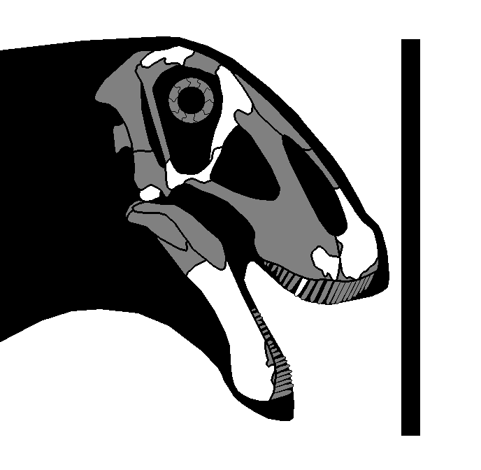
Skull reconstruction of Malawisaurus dixeyi. Scale bar equals 50cm.
Genus Tapuiasaurus Zaher, et al. 2011
Tapuiasaurus macedoi Zaher, et al. 2011
Middle Cretaceous, middle Gallic epoch, Aptian stage
Quiricó Formation
CJ-04, Mucambo Farm, Embira-Branca Hills, Coração de Jesus City, Minas Gerais, Brazil
MZSP-Pv 807 (Holotype) - Skull (441mm), hyoids, proatlas, atlas (20mm), axis (46mm), five cervicals, five dorsals, ribs, coracoid, sternal plate, humerus, radius, ulnae,
metacarpals, femora, fibula, pes (Wilson, et al. 2016; Navarro, 2019)
MZSP-Pv 831 (Topotype) - Right humerus, right radius, right ulna, metacarpals (Navarro, 2019)
CJ-06, Embira-Branca Hills, Coração de Jesus City, Minas Gerais, Brazil
MZSP-Pv 1324 - Femur (Navarro, 2019)
Diagnosis - enter
Comments - enter
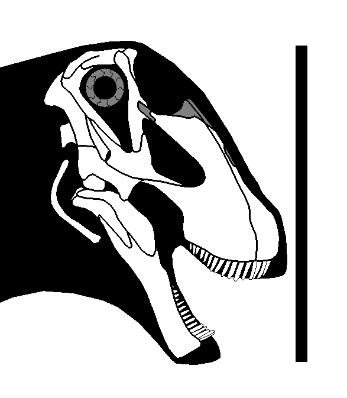
Skull reconstruction of Tapuiasaurus macedoi. Scale bar equals 50cm, scaled as holotype.
“Prata titanosaur” Navarro, 2019
Late Cretaceous, middle Senonian epoch, Santonian to Campanian stages
Adamantina Formation
Prata Municipality, Brazil
DGM 756-R - Cervical centrum
DGM 757-R - Right femur
DGM 758-R - Right humerus
DGM 759-R - Partial anterior dorsal
DGM 760-R - Partial dorsal neural arch
DGM 761-R - Partial dorsal neural arch
DGM 767-R - Posterior caudal
DGM 769-R - Cervical rib
DGM 770-R - Dorsal rib
DGM 775-R - D8, D9, D10
Diagnosis - enter
Comments - enter
Clade "Brevithursa" Katyayani, in press
Definition - enter
Diagnosis - enter
Comments - enter
Clade Diamantinasauria Hocknull, et al. 2021
Definition - enter
Diagnosis - enter
Comments - enter
Genus Australotitan Hocknull, et al. 2021
Australotitan cooperensis Hocknull, et al. 2021
Middle Cretaceous, middle Gallic epoch, Cenomanian stage
Winton Formation
EML011, Plevna Downs Station, Queensland, Australia
EMF102 (Holotype) - Partial left scapula (1220mm*), humeri (1394*, 1494mm), right ulna (1043mm*), ischia (901, 879mm*), pubes (1262, 1206mm*), femora (1587mm*)
EMF103 - Cervicals, dorsals, distal femur (Hocknull, et al. 2021)
EML010, Plevna Downs Station, Queensland, Australia
EMF164 - Presacral fragments, rib fragments, ulnar fragments, femoral fragments (Hocknull, et al. 2021)
EML013, Plevna Downs Station, Queensland, Australia
EMF105 - Femur (1412mm) (Hocknull, et al. 2021)
EMF165 - Distal humerus (Hocknull, et al. 2021)
EML01, Plevna Downs Station, Queensland, Australia
EMF100 - Partial ulna (Hocknull, et al. 2021)
Diagnosis - enter
Comments - Beeston, et al. (2024) considered this to be an indeterminate diamantinasaur due to a lack of autapomorphic characters identified in
the material, & tentatively suggested that this taxon was synonymous with Diamantinasaurus matildae. However, this referral was done based on A.
cooperensis sharing only a single autapomorphy with D. matildae, & this cannot be assessed in other diamantinasaurs due to a lack of overlap. Until
further specimens with overlap are discovered & described, I tentatively retain Australotitan cooperensis as its own species.
Genus Clasmodosaurus Ameghino, 1899b
Clasmodosaurus spatula Ameghino, 1899b
Middle Cretaceous, middle Gallic epoch, Cenomanian stage
Middle Member, Mata Amarilla Formation
Sehuense, Magallanes Basin, Santa Cruz Province, Argentina
MACN A-10984 (Syntype) - Three teeth (Ameghino, 1899b)
Diagnosis - Broad teeth crown, labiolingually compressed & mesiodistally long (1), with longitudinal ridges & grooves (2); wrinkled enamel (3); hexagonal cross-section
(4) (from Agnolín, et al. 2023b).
Comments - The hexagonal cross-section of the teeth is unique, having only been seen otherwise in Bonitasaura within Titanosauria. However, the teeth of
Clasmodosaurus are otherwise very similar to those of diamantinasaurs (Poropat, et al. 2022). Overall, it appears Clasmodosaurus is in fact a valid taxon,
& very possibly a diamantinasaur, possibly close to the coeval taxon Sarmientosaurus from the Bajo Barreal formation.
Genus Diamantinasaurus Hocknull, et al. 2009
Diamantinasaurus matildae Hocknull, et al. 2009
Middle Cretaceous, middle Gallic epoch, Cenomanian stage
Winton Formation
AODL 0085 “Matilda Site”, Elderslie Station, Queensland, Australia
AODF 0603 “Matilda” (Holotype) - Cervical ribs (295, 355, 302mm), three dorsals (280, 345mm), dorsal ribs, gastralia, five sacrals, left scapula, right
scapulocoracoid (1485mm), sternal plate, humeri (1122*, 1056mm*), radius (675mm), ulnae (727mm), Mc I (372mm), MUP I, Mc II (375mm), MP II-1, Mc III (412mm), MP
III-1, Mc IV (352mm), MP IV-1, Mc V (325mm), ilium (854mm), pubes (1056, 1082mm), ischia (668mm), femur (1345mm), tibia (795mm), fibula (769mm), astragalus
(247mm) (Poropat, et al. 2014a; Beeston, et al. 2024)
AODL 0122 “Oliver Site”, Elderslie Station, Queensland, Australia
AODF 0663 “Oliver” - Cervical rib, D2 neural arch, D3, D4, nine dorsal ribs, left scapula, right humerus (698mm), MP I-2, right femur, fragments (Rigby, et
al. 2022)
AODL 0127 “Alex Site”, Belmont Station, Queensland, Australia
AODF 0836 “Alex” - Squamosal, quadrates, braincase, surangular, atlas (40mm), axis (140mm), Cv3 (196mm), Cv4, Cv5, Cv6 (272mm), mid-cervical neural arch (400mm),
two dorsals, D7 (255mm), D8 (243mm), dorsal ribs, two sacral centra, scapula, partial ilia (375*, 340*mm), pubes (779*, 695*mm), ischia (591, 457*mm) fragments
(Poropat, et al. 2016; Poropat, et al. 2021)
AODF 2298 - Tooth (Beeston, et al. 2024)
AODL 0128 “Devil Dave Site”, Belmont Station, Queensland, Australia
AODF 0666 “Devil Dave” - Right tibia, right fibula, right astragalus, fragments (Beeston, et al. 2024)
AODL 0215 “Ian Site”, Elderslie Station, Queensland, Australia
AODF 0844 “Ian” - Right scapulocoracoid (Beeston, et al. 2024)
AODL 0252 “Ann Site”, Elderslie Station, Queensland, Australia
AODF 0906 “Ann” - Partial skull, ceratobranchial (230mm), four dorsal ribs, S1 (118mm), S2 (138mm), S3 (139mm), S4 (147mm), S5 (134mm), S6 (116mm), chevron, partial ilium, ischia
(646mm), partial pubis, femora (1366mm), tibiae (786*, 532mm*), fibulae (865, 704mm*), right astragalus, Mt I, Mt II, Mt III, PP III-1, PP III-2, PUP III, Mt IV, PP IV-1, PP IV-2,
Mt V (Poropat, et al. 2023)
Queensland, Australia
AODF 0888 “Judy” - Four teeth, much of the postcrania including Cv4-14?, dorsals, partial sacrum, scapula, right coracoid, sternal plate, gut contents, skin
impressions (Poropat, et al. 2019; Taylor, 2022; Rigby, et al. 2022; Beeston, et al. 2024)
Diagnosis - enter
Comments - Shows that advanced titanosaurs retained manual phalanges and gastralia.
Poropat, et al. (2023) suggested Diamantinasaurus only had five sacrals based on “Ann”, however Poropat now doubts that D. matildae only
possesses five sacrals at least in adult specimens (Pers. Comm. to Demirjian, online 2024).
Specimen AODF 0888 (informally known as “Judy”), was briefly described by Poropat, et al. (2019), & mentioned as the most complete sauropod yet recovered from
the Winton formation. This specimen was preliminarily referred to Diamantinasaurus by these authors. This specimen includes gut contents & skin impressions.
Taylor (2022) provided some additional information in regard to the neck. “Judy” comprises of an articulated series of ten cervicals (either Cv3-12 or Cv4-13), as well
as the following cervical (Cv13 or Cv14) which was found disassociated from the rest of the sequence. The possibility of a final cervical lying between this
posteriormost one & the first dorsal cannot yet be ruled out.
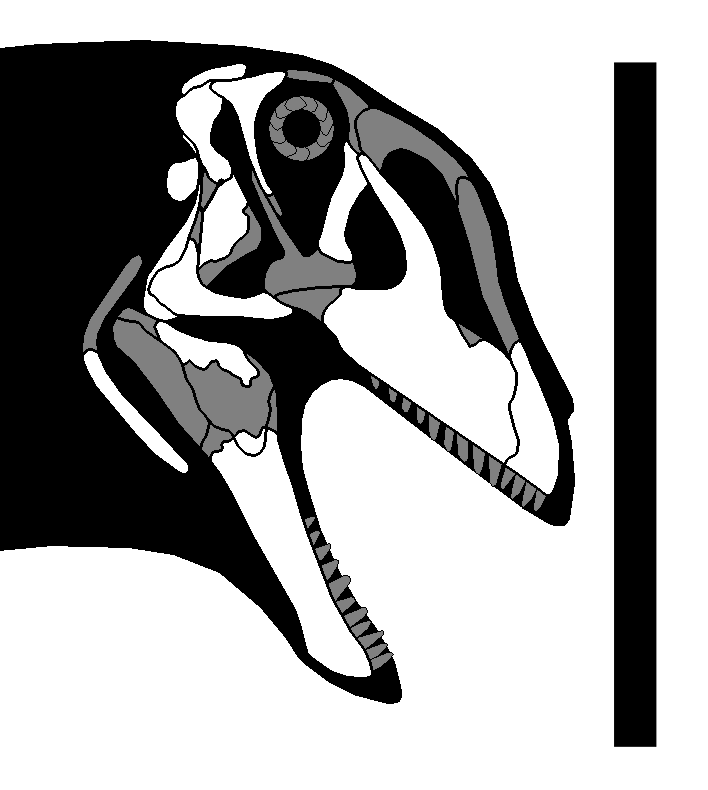
Skull reconstruction of Diamantinasaurus matildae. Scale bar equals 1m, scaled as Ann.
Genus Sarmientosaurus Martinez, et al. 2016
Sarmientosaurus musacchioi Martinez, et al. 2016
Middle to late Cretaceous, middle to late Gallic epoch, Cenomanian to Turonian stages
Lower Member, Bajo Barreal Formation
Estancia Laguna Palacios, Golfo San Jorge Basin, Chubut Province, Argentina
MDT-Pv 2 (Holotype) - Skull (430mm), axis (88mm*), Cv3, Cv5 fragment, Cv6 (316mm), Cv7 (190mm*), ossified cervical tendons (Martinez, et al. 2016)
Diagnosis - enter
Comments - enter
Genus SavannasaurusPoropat, et al. 2016
Savannasaurus elliottorum Poropat, et al. 2016
Middle Cretaceous, middle Gallic epoch, Cenomanian stage
Winton Formation
AODL 0082 “Ho-Hum Site”, Belmont Station, Queensland, Australia
AODF 660 “Wade” (Holotype) - Posterior cervical (450mm*), cervical ribs, D3 (295mm), D4 (320mm), D5 (135mm*), D6 (275mm), D7 (296mm), D8 (230mm*), D9 (250mm), D10
(279mm), dorsal rib fragments, four sacrals, anterior caudals (98, 119mm), anterior-mid caudals (127, 120mm), partial fragments, fragmentary scapula, left coracoid
(446mm), sternal plates (425mm), partial humeri (1033mm*), left radius (777mm), fragmentary ulna, Mc I (325mm), Mc II (382mm), Mc III (383mm), Mc IV (161*, 322mm),
Mc V (321mm), manual phalanges (81mm), ilium fragments, ischia (578*, 656mm), pubes (894*, 997mm), left astragalus (152mm), Mt III (261mm), fragments
AODL 0001, Belmont Station, Queensland, Australia
AODF 2854 - Right Mc IV (Beeston, et al. 2024)
AODL 0137, Elderslie Station, Queensland, Australia
AODF 2306 - Anterior-mid caudal (Beeston, et al. 2024)
Diagnosis - enter
Comments - enter
Genus Wintonotitan Hocknull, et al. 2009
Wintonotitan wattsi Hocknull, et al. 2009
Middle Cretaceous, middle Gallic epoch, Cenomanian stage
Winton Formation
QM L313 “Clancy Site”, Elderslie Station, Queensland, Australia
QM F7292 “Clancy” (Holotype) - Fragmentary dorsals, fragmentary dorsal ribs, two fragmentary sacrals, 28 caudal centra, caudal neural arch, five chevrons, partial
left scapula, partial humeri, radii, fragmentary ulnae, proximal Mc I, Mc II, Mc III, Mc IV, Mc V, partial left ilium, left ischium, fragments
QM F10916 - Four caudals
AODL 0001, Belmont Station, Queensland, Australia
AODF 2851 - Caudal (Beeston, et al. 2024)
AODL 0080 “Bob Site”, Belmont Station, Queensland, Australia
AODF 0591 “Bob” - Two caudals, left fibula (Beeston, et al. 2024)
AODL 0160 “Patrice Site”, Lovelle Downs Station, Queensland, Australia
AODF 0832 “Patrice” - Mid-caudal, right femur, unprepared elements (Beeston, et al. 2024)
EML010, Plevna Downs Station, Queensland, Australia
EMF106 - Partial metapodial, partial mid-caudal centra (Hocknull, et al. 2021)
EML012, Plevna Downs Station, Queensland, Australia
EMF109 - Mid-posterior caudals (Beeston, et al. 2024)
Diagnosis - enter
Comments - enter
"Cerro Fortaleza diamantinasaur" Agnolín, et al. 2023b
Late Cretaceous, middle Senonian epoch, late Campanian stage
Cerro Fortaleza Formation
Viedma Lake, Río La Leona, Santa Cruz Province, Argentina
MACN-A #? - Partial tooth (Agnolín, et al. 2023b)
MPM-Pv 23354 - Two partial teeth (Agnolín, et al. 2023b)
Diagnosis - enter
Comments - Teeth are very similar to those of Clasmodosaurus, & were referred to this taxon by Agnolín, et al. (2023b). However, given the Cerro Fortaleza
formation is nearly 30 million years younger than the Mata Amarilla formation C. spatula derives from, it seems unlikely these teeth belong to this species & are
considered here Diamantinasauria Indet.
"Lo Hueco diamantinasaur" Ortega, et al. 2016
Late Cretaceous, middle Senonian epoch, late Campanian stage
Garumnian Member, Villalba de la Sierra Formation
Lo Hueco, Fuentes, Castilla-La Mancha, Spain
HUE-EC-11 - Partial skeleton including anterior-mid dorsals, appendicular elements, osteoderms (Ortega, et al. 2016)
Diagnosis - enter
Comments - This specimen, which consists of a series of anterior-middle dorsals, appendicular elements, & osteoderms, shares several characters with Diamantinasaurus,
such as the hypantrum-hyposphene, dorsally facing diapophyses, the absence of the SPRL & PODL in the middle dorsals, & the vertical orientation of the neural spines. Given this,
it seems possible this specimen may in fact represent a diamantinasaurian, the first not found in Gondwana.
Clade Eutitanosauria Sanz, et al. 1999
Definition - enter
Diagnosis - enter
Comments - enter
Genus Malarguesaurus González-Riga, Previtera, & Pirrone, 2008
Malarguesaurus florenciae González-Riga, Previtera, & Pirrone, 2008
Late Cretaceous, late Gallic epoch, Turonian stage
Portezuelo Formation
Quebrada Norte Quarry, Paso de las Bardas Area, Malargüe Department, Mendoza Province, Argentina
IANIGLA-Pv 110 (Holotype) - Anterior, middle, posterior caudals, chevrons, dorsal ribs, fragmentary humerus, partial femur, bone fragments
Cerro la Torre Site, Paso de las Bardas Area, Malargüe Department, Mendoza Province, Argentina
IANIGLA-Pv 111 (Paratype) - Two posterior caudals, partial fibula
Diagnosis - enter
Comments - enter
"Cerro Fortaleza eutitanosaur" Agnolín, et al. 2023b
Late Cretaceous, middle Senonian epoch, late Campanian stage
Cerro Fortaleza Formation
Santa Cruz Province, Argentina
MPM-Pv 23355 - Twelve caudals (Agnolín, et al. 2023b)
Diagnosis - enter
Comments - Similar to Malarguesaurus florenciae in possessing amphicoelous anterior & procoelous mid-posterior caudals, though the centra are markedly longer
anteroposteriorly than in M. florenciae. Amphicoelous anterior caudals are also seen in the putative colossosaur Nullotitan.
"Lago Colhué Huapi titanosaur" Casal, et al. 2010
Late Cretaceous, middle to late Senonian epoch, late Campanian to early Maastrichtian stages
Río Chico Member, Lago Colhué Huapi Formation
Chico River, Lago Colhué Huapi, Chubut Province, Argentina
MDT-Pv 4 - Five mid-posterior dorsals, sacrum, three anterior caudals, three chevrons, left ilium, right femur, right tibia, right fibula, pedal phalanges (Casal, et al.
2010)
Diagnosis - enter
Comments - May belong to the contemporary Argyrosaurus superbus. Perserves both osteoderms & a supraspinous ossified sacral rod, the latter seen in some
titanosaurs such as Epachthosaurus sciuttoi.
Clade Colossosauria González-Riga, et al. 2019
Definition - enter
Diagnosis - enter
Comments - enter
Genus Chucarosaurus Agnolin, et al. 2023a
Chucarosaurus diripienda Agnolin, et al. 2023a
Middle Cretaceous, middle Gallic epoch, Cenomanian stage
Huincul Formation, Rio Limay Subgroup, Neuquén Group
Pueblo Blanco Natural Reserve, Ezequiel Ramos-Mexía Lake, Río Negro Province, Argentina
MPCA-Pv 820 (Holotype) - Left humerus, partial left radius, left Mc III, left ischium, partial left femur, partial right tibia, partial left fibula, distal
metapodial (Agnolin, et al. 2023a)
MPCA-Pv 821 (Paratype) - Left femur, left tibia (Agnolín, et al. 2023a)
Diagnosis - enter
Comments - enter
Genus Mnyamawamtuka Gorscak & O'Connor, 2019
Mnyamawamtuka moyowamkia Gorscak & O'Connor, 2019
Middle Cretaceous, middle Gallic epoch, Albian to Cenomanian stages
Mtuka Member, Galula Formation
RRBP 2004-06, Rukwa Rift Basin, Tanzania
RRBP 05834 (Holotype) - Teeth, anterior cervical neural arch, anterior cervical centrum (211mm), middle cervical (263mm), posterior cervical (285mm), D1, D2,
D3 (162mm), D4, D5, D6, D7, dorsal centra (142*, 113mm*) three sacrals (one 99mm), anterior caudal (59mm), three middle caudals (92, 64mm), two mid-posterior
caudals (60, 68mm), posterior caudal (88mm), four chevrons, dorsal rib fragments, scapula (622mm), sternal plate (249mm), humeri (569mm*), ulna, Mc I (184mm),
Mc III (236mm), ischium, pubis, femora (720mm*), tibiae (474mm), fibula (498mm), Mt I (95mm), Mt II (109mm), Mt III (129mm), Mt IV (122mm), Mt V (82mm), pedal
phalanx (51mm), PUP I (89mm), PUP III? (48mm), fragments
Diagnosis - enter
Comments - enter
Genus Nullotitan Novas, et al. 2019
Nullotitan glaciaris Novas, et al. 2019
Late Cretaceous, middle to late Senonian epoch, late Campanian to early Maastrichtian stages
Lower member, Chorrillo Formation
Locality 1, Santa Cruz Province, Argentina
MACN-Pv 18644 (Holotype) - Cv3 (45cm) (Bonaparte, et al. 2002)
MPM 21542 (Holotype) - Cervical & dorsal rib fragments, caudals, scapula, femur (44cm shaft width), tibia (105cm), fibula (109cm), astragalus
MPM 21545 (Paratype) - Vertebra, rib fragment, humerus (114cm)
MPM 21546 (Paratype) - Distal caudal centra
Locality 2, Santa Cruz Province, Argentina
MPM 21548 (Paratype) - Tibia
MPM 21549 (Paratype) - Anterior-mid caudal centrum
Locality 4, Santa Cruz Province, Argentina
#? (Not yet collected - Novas, 2019)
Locality 5, Santa Cruz Province, Argentina
MPM 21547 (Paratype) - Five mid-caudals, five chevrons
Diagnosis - enter
Comments - enter
Genus Volgatitan Averianov & Efimov, 2018
Volgatitan simbirskiensis Averianov & Efimov, 2018
Early Cretaceous, middle Neocomian epoch, upper Hauterivian stage
Speetoniceras versicolor ammonite Zone
Slantsevy Rudnik, Ulyanovsk City, Ulyanovsk Province, Russia
UPM 976 - Cd1 (205mm), two anterior caudals (184, 175mm), four middle caudals (218, 229, 225mm)
Diagnosis - enter
Comments - enter
"Candeleros titanosaur" Otero, et al. 2021
Middle Cretaceous, middle Gallic epoch, early to middle Cenomanian stage
Candeleros Formation, Rio Limay Subgroup, Neuquén Group
Neuquén Province, Argentina
MOZ-Pv 1221 - Partial skeleton including Cd1 (320mm), Cd2 (230mm), Cd3, Cd4 (320mm), Cd5 (280mm), Cd6 (260mm), Cd7 (290mm), Cd8 (280mm), Cd9 (260mm), Cd10 (280mm), Cd11 (290mm),
Cd12 (270mm), Cd13 (270mm), Cd14 (250mm), Cd15 (250mm), Cd16 (230mm), Cd17 (230mm), Cd18 (225mm), Cd19 (250mm), Cd20 (245mm**), four mid-posterior caudals (two 220mm), 13
chevrons, partial left scapula, right ilium, ischia, pubes
Diagnosis - enter
Comments - Distinct from the contemporary Andesaurus delgadoi. May pertain to a new taxon.
"Cf. Argyrosaurus sp." Huene, 1929
Age
Formation
Locality Data
FMNH PR 13018 - Right femur (2110mm) (Wedel, online 2021)
Diagnosis - enter
Comments - enter
Family "Argentinosauridae" nov.
Definition - All colossosaurs closer to Argentinosaurus huinculensis than to Argyrosaurus superbus or Futalognkosaurus dukei.
Diagnosis - enter
Comments - enter
Genus Argentinosaurus Bonaparte & Coria, 1993
Argentinosaurus huinculensis Bonaparte & Coria, 1993
Middle Cretaceous, middle Gallic epoch, Cenomanian stage
Huincul Formation, Rio Limay Subgroup, Neuquén Group
Plaza Huincul, Neuquén Province, Argentina
MCF-PVPH 1 (Holotype) (Total length 33.52m) - D3 (1590mm tall), D4, D5, D6, D9, D10, sacrum, ilium, pubis, fibula (1555mm)
MCF-PVPH #? - Partial femur (1200mm circumference) (Bonaparte, 1996b)
MLP-DP 46-VIII-21-3 - Partial femur (1114mm circumference) (Mazzetta, Christiansen, & Farina, 2004)
Diagnosis - enter
Comments - Neither of the two femora that have been referred to Argentinosaurus come from the same site as the holotype, & neither of them were found
associated with any overlapping material either, so their referrals to this taxon must be considered tentative when remembering there are multiple titanosaur taxa
present in the Huincul formation. This also means the limb proportions of Argentinosaurus must be restored based on other taxa. I restored them based on
Patagotitan & Ruyangosaurus, which resulted in an overall estimate of 2770mm. The femur stored in the Museo Carmen Funes was described briefly by Bonaparte (1996b)
as a complete but rather slender 250cm femur, however Lamanna (Pers. Comm.) suggests this specimen is in fact incomplete, & photographs of the material at the MCF seems to
show that this femur is heavily restored in plaster. The circumference of this femur is 1200mm, which is more than that of partial femur MLP-DP 46-VIII-21-3 (1114mm;
Carballido, et al. 2017). Molina-Pérez & Larramendi (2020) restored the latter femur at ~270cm, higher than the average estimate by Mazzetta, et al. (2557mm),
& comparable to my estimate.
Genus Austroposeidon Bandeira, et al. 2016
Austroposeidon magnificus Bandeira, et al. 2016
Late Cretaceous, middle to late Senonian epoch, Campanian to Maastrichtian stages
Presidente Prudente Formation
Presidente Prudente City, São Paulo, Brazil
MCT 1628-R (Holotype) - Cv14 (257mm), Cv15 (279mm), D1 (510mm)
Diagnosis - enter
Comments - enter
Genus Kaijutitan Filippi, Salgado, & Garrido, 2019
Kaijutitan maui Filippi, Salgado, & Garrido, 2019
Late Cretaceous, early Senonian epoch, Coniacian stage
Sierra Barrosa Formation
Cañadón Mistringa, Pehuenches Department, Neuquén Province, Argentina
MAU-Pv-CM-522 (Holotype) - Braincase, cervicals, ribs, caudal, left scapula, sternal plate,
Diagnosis - Width between the basal tuberosities almost four times the width of the foramen magnum* (1); foramen for the internal carotid artery located posteriorly
on the basipterygoid process, almost at the middle of the distance between these processes & the basal tuberosities* (2); bifid anterior cervical neural spines* (3);
presence of a medial tuber located posteriorly between both metapophyses in the anterior cervicals* (4); SPOL in anterior cervicals bifurcated in the spinal sector,
generating anteroposteriorly elongated deep pneumatic cavities* (5); presence of a posteroventral keel in anterior cervicals, generated from the convergence of two ridges
that originated from the posteroventral edge of the parapophyses* (6); cervical vertebrae with an accessory lamina, which runs from the PODL up to the SPRL* (7); absence of
proximal pneumatopores in the dorsal ribs* (8); PRSL triangular, product of a dorsal expansion in anterior caudal vertebrae* (9); absence of a ventromedial process in the
ventral margin of the scapula* (10); tibial proximal condyle narrow, with its long axis anteroposteriorly oriented* (11); tibial cnemial crest projecting anteriorly* (12);
astragalus with foramina at base of ascending process* (13).
Comments - enter
Genus Notocolossus González-Riga, et al. 2016
Notocolossus gonzalezparejasi González-Riga, et al. 2016
Late Cretaceous, middle Senonian epoch, Santonian stage
Plottier Formation
Cerro Guillermo, Malargüe Department, Mendoza Province, Argentina
UNCUYO-LD 301 (Holotype) (Total length 26.12m) - Humerus (176cm), D2 (150cm wide, 76cm tall), Cd3 (302mm)
UNCUYO-LD 302 (Paratype) - Cd7 (207mm), Cd12 (188mm), astragalus (67mm), Mt I (164mm), PP I-1 (45mm), PUP I (64mm), Mt II (185mm), PP II-1 (96mm), PUP II (102mm) Mt III
(197mm), PP III-1 (115mm), PUP III (80mm), Mt IV (218mm), PP IV-1 (98mm), PUP IV (37mm), Mt V (196mm)
Diagnosis - enter
Comments - enter
Genus Patagotitan Carballido, et al. 2017
Patagotitan mayorum Carballido, et al. 2017
Middle Cretaceous, middle Gallic epoch, late Albian stage
Upper Cerro Castaño Member, Cerro Barcino Formation
La Flecha Ranch, Chubut Province, Argentina
MPEF-Pv 3400 (Holotype) (Total length 29.14m) - Cv3 (470mm*), Cv5 (1035mm), Cv7 (1200mm*), D1 (395mm), D2 (290mm), D3 (240mm), D5 (310mm), D6 (430mm*), D8 (420mm), D10
(320mm), Cd1 (340mm), Cd3 (350mm), Cd4 (360mm), Cd5 (350mm), Cd7 (280mm), Cd8 (265mm), three chevrons, dorsal ribs, right scapula (1965mm), right coracoid (1145mm), sternal
plates (898mm), pubes (1520, 1500mm), femora (2360, 2350mm) (Carballido, et al. 2017)
MPEF-Pv 3372 - Tooth (Carballido, et al. 2017)
MPEF-Pv 3375 (Total length 28.03m) - Left femur (2270mm) (Carballido, et al. 2017)
MPEF-Pv 3393 - Posterior caudal (Carballido, et al. 2017)
MPEF-Pv 3394 - Right femur (Carballido, et al. 2017)
MPEF-Pv 3395 - Right humerus (1560mm*) (Carballido, et al. 2017)
MPEF-Pv 3396 - Right humerus (1470mm*) (Carballido, et al. 2017)
MPEF-Pv 3397 (Total length 25.77m) - Left humerus (1675mm) (Carballido, et al. 2017)
MPEF-Pv 3399 (Total length 29.38m) - Cv10 (745mm), Cv11 (690mm), Cv12 (590mm), Cv13 (550mm), Cv14 (420mm), Cv15 (240mm), D3, D7 (420mm), D8 (390mm), D9 (395mm), Cd1 (360mm),
Cd19 (300mm), Cd20 (300mm), Cd21 (320mm), Cd22 (260mm), Cd24 (280mm), Cd25 (280mm), Cd26 (260mm), Cd27, Cd28 (290mm), Cd29 (290mm), Cd30 (270mm), Cd36 (290mm), Cd37 (290mm),
Cd38 (270mm), Cd43 (275mm), Cd44 (280mm), ribs, chevrons, left radius (1070mm), left ulna (1050mm), fragmentary ilium, ischia (900*, 1075mm), pubes (1370*, 1260mm*), left
femur (2380mm), left fibula (815mm*) (Carballido, et al. 2017)
Diagnosis - enter
Comments - enter
Genus Pitekunsaurus Filippi & Garrido, 2008
Pitekunsaurus macayai Filippi & Garrido, 2008
Late Cretaceous, middle Senonian epoch, early Campanian stage
Anacleto Formation, Rio Colorado Subgroup, Neuquén Group
Cañadón Town, Aguada Grande, Rincon de los Sauces Area, Neuquén Province, Argentina
MAU-Pv-AG-446 (Holotype) - Braincase, frontal, tooth, axis (120mm*), Cv4 (290mm*), Cv7 (300mm), Cv12 (350mm), D2 (389mm wide, 277mm tall), anterior dorsal (110mm*), posterior
dorsal (200mm), anterior caudal (110mm), three posterior caudals (90, 85, 70mm), scapula (690mm), ulna (480mm), femur (57mm*)
Diagnosis - enter
Comments - Pitekunsaurus' anterior dorsals are extremely complex, with a massive web of laminae & fossae. This, along with the thinner, elongated diapophyses,
shows an arrangement most similar to that of Notocolossus, thus suggesting the two are very closely related. This is also corroborated by the analysis of Ortiz-David, et
al. (2016), which found the two as sister taxa, close to Muyelensaurus & Lognkosauria. In our original analysis (Sassani & Bivens, 2017) we recovered the two as sister
taxa as well, just outside Lognkosauria.
Genus Puertasaurus Novas, et al. 2005
Puertasaurus reuili Novas, et al. 2005
Late Cretaceous, late Senonian epoch, late Campanian stage
Cerro Fortaleza Formation
Cerro Los Hornos, La Leona, Santa Cruz Province, Argentina
MPM 10002 (Holotype) (Total length 31.01m) - Cv9 (118cm), D2 (106cm tall, 168cm wide), two middle caudals (Novas, et al. 2005)
Diagnosis - enter
Comments - enter
Genus Ruyangosaurus Lü, et al. 2009a
Ruyangosaurus giganteus Lü, et al. 2009a
Middle Cretaceous, middle Gallic epoch, Aptian to Albian stages
Haoling Formation
Shengshuigou, Shaping Village, Liudian Town, Ruyang Basin, Henan Province, China
41HIII-0002 (Holotype) - D1 (1600mm wide*), D7, Cr13, Dr5, femur (1200mm*), tibia (1270mm) (Lü, et al. 2009a)
KLR 1508 (Total length 31.93m) - Cv6 (1200mm), Cv7, Cv8, Cv9 (1200mm*), Cv10 (1200mm*), Cv11 (1210mm*), Cv12 (1240mm*), Cv14 (750mm*), Cv15 (600mm), D3, D4, D5, D6 (560mm wide
centrum), D9, D10, dorsal ribs, dorsosacral (680mm wide centrum), sacrum, five mid-posterior caudals, scapulocoracoid (2270mm), right humeri (one 1450mm), ilium, right femur
(1670mm) (Lü, et al. 2014)
Diagnosis - enter
Comments - Ruyangosaurus was originally described as an andesaurid based on a set of very shaky characters supposedly diagnostic of andesaurids, including size. The
later osteology (Lü, et al. 2014) recovered R. giganteus as a non-titanosaurian somphospondylian. Matrices based on Mannion, et al. (2013) tend to recover it
as a basal titanosaur close to Andesaurus. In Sassani & Bivens (2017), we proposed Ruyangosaurus to be a derived lognkosaur close to Puertasaurus based on a
slew of synapomorphies, & this was recovered by our phylogenetic analysis.
Clade Clade Lognkosauria Calvo, et al. 2007b
Definition - enter
Diagnosis - enter
Comments - enter
Genus Dreadnoughtus Lacovara, et al. 2014
Dreadnoughtus schrani Lacovara, et al. 2014
Late Cretaceous, late Senonian epoch, late Campanian stage
Cerro Fortaleza Formation
Río La Leona, Santa Cruz Province, Argentina
MPM-Pv 1156 (Holotype) (Total length 27.71m; total mass 50154kg) - Maxilla fragment, Cv10 (1130mm*), D4 (400mm), D5 (470mm), D6 (200mm*), D7 (300mm*), D8 (350mm), D9 (410mm), D10
(330mm), S3-S6 (850mm), Cd1 (200mm*), Cd2 (350mm), Cd3 (300mm), Cd4 (330mm), Cd5 (295mm), Cd6 (313mm), Cd7 (292mm), Cd8 (265mm), Cd9 (293mm), Cd10 (291mm), Cd11 (272mm), Cd12
(295mm), Cd13 (291mm), Cd14 (253mm), Cd15 (261mm), Cd16 (260mm), Cd17 (261mm), Cd18 (245mm), Cd19 (251mm), Cd20 (246mm), Cd21 (225mm), Cd22 (240mm), Cd23 (240mm), Cd24 (235mm),
Cd25 (215mm), Cd26 (201mm), Cd28 (211mm), Cd29 (183mm), Cd30 (205mm), Cd31 (200mm), Cd32 (175mm), 18 chevrons (441-35mm), left scapula (1740mm), left coracoid (580mm), sternal
plates (1140, 1120mm), left humerus (1600mm), left radius (950mm), left ulna (1010mm), ilia (1310mm*), ischia (1020, 1010mm), pubes (1400, 1260mm), left femur (1910mm), tibiae
(1020, 1090mm), left fibula (1030mm), left astragalus (230mm), right Mt I (210mm), right PUP I (230mm), right Mt II (250mm) (Ullmann & Lacovara, 2016; Voegele, Lamanna, &
Lacovara, 2017)
MPM-Pv 3546 (Paratype) (Total length 18.76m) - Cv4, sacrum, six anterior caudals, ilia, ischia, pubes (1200/1000mm*), left femur (1290mm)
MPM-Pv 23356 - Four partial anterior caudals (Agnolín, et al. 2023b)
MPM-Pv 23357 - Partial left astragalus (Agnolín, et al. 2023b)
Diagnosis - enter
Comments - The mass of this species has been a hotly debated topic. Lacovara, et al. (2014) estimated 59.3 tonnes based on limb allometry. Allometric estimates
however are fraught with much more error than volumetric estimates (Wedel, online 2011). A volumetric estimate by Paul (2014) found only 26 tonnes for the holotype (though later
he has stated a weight of 33 tonnes is more likely; Paul & Larramendi, 2023). Bates, et al. (2015) found a range of 28 to 35 tonnes. Hartman (2020) found a range of 33 to
36 tonnes based on their skeletal. A GDI of my restoration resulted in a total mass of 50154kg, much higher than these other estimates & closer to the original Lacovara, et
al. estimate. A part of (though certainly not cause for the majority of the discrepancy) the variation comes from the placement of the single mid-posterior cervical. Lacovara,
et al. (2014) & subsequent publications from the same team placed this vertebra as cervical 9 based on comparisons with other titanosaurs. Paul does not restore the
missing vertebrae in his reconstruction, so it is hard to state for certain, but the vertebra appears to be placed as either Cv9 or Cv10. Hartman meanwhile placed it as Cv11.
While seemingly not a massive change, this has huge ramifications for how long the missing cervicals are restored & therefore the total mass of the neck. Comparison with the
complete cervical column of Futalognkosaurus by myself agrees with a placement as Cv10, thus lengthening the neck prior to these other estimates (though this has only
marginal effects on the total mass).
More importantly is the variation in torso size. Lacovara, et al. oversized their torso by nearly 20% in length (Wedel, online 2014), an issue corrected in every
subsequent paper on the topic. My reconstruction agrees with all these other estimates. Comparing my torso to others, it is marginally wider than both Hartman's & Paul's (at
similar overall depths), but noticeably wider than that of Bates, et al. or Lacovara's 3D model. The discrepancy with these latter estimates is clearly the result of
differences in restoring the width of the ribcage (& to a lesser extent the pelvis). Their reconstructions assumed mostly straight ribs as was found, however these elements due
to their flimsier nature were more prone to bending & distortion than other elements, thereby artificially narrowing the torso. Overall torso width was calculated by first
restoring Dreadnoughtus' sacrum using Futalognkosaurus as a guide, then following the ribcage:ilium width dimensions from the well preserved somphospondylian taxa
Overosaurus & Tambatitanis.
Specimen MPM-Pv 39, a very large (2220mm) femur, was discussed by Lacovara, et al. (2004) originally as from the Pari Aike formation. The Pari Aike formation has been
redated several times since then, & most recently has been considered part of the Cerro Fortaleza formation. Its massive size implies that it belongs to one of the two massive
titanosaurs from the formation, Dreadnoughtus & Puertasaurus. If it belongs to Dreadnoughtus, then it would be roughly 15.2% larger than MPM-Pv 1156, or 31.92m
long.

Multiview skeletal reconstruction of Dreadnoughtus schrani. Scale bar equals 4m, scaled as holotype.
Genus Drusilasaura Navarette, Casal, & Martinez, 2011
Drusilasaura deseadensis Navarette, Casal, & Martinez, 2011
Late Cretaceous, late Gallic epoch, late Turonian stage
Upper Member, Bajo Barreal Formation
Deseado, Maria Aike, Lago Buenos Aires, Santa Cruz Province, Argentina
MPM-Pv 2097 (Holotype) - Four dorsals, rib fragments, sacral, six caudals, chevrons, left scapula (1430mm), fragments (Navarette, Casal, & Martinez, 2011)
Diagnosis - enter
Comments - enter
Genus Futalognkosaurus Calvo, et al. 2007a
Futalognkosaurus dukei Calvo, et al. 2007a
Late Cretaceous, late Gallic epoch, Turonian stage
Portezuelo Formation
Futalognko Site, Lago Barreales, Neuquén Province, Argentina
MUCPv-323 (Holotype) - Atlas, axis, Cv3, Cv4, Cv5, Cv6, Cv7, Cv8, Cv9, Cv10, Cv11, Cv12, Cv13, Cv14, D1 (430mm**), D2, D3, D4, D5, D6, D7, D8, D9, D10 (280mm**), sacrum (960mm long, 2550mm
wide), Cd1 (870mm tall), anterior-mid caudal (240mm), scapula (1700mm), humerus (1560mm), radius (940mm), ulna (950mm), Mc II (470mm), phalanx, pubic shaft (1370mm), femur (1980mm), fibula
(1140mm), metatarsal, atlas-sacrum length (11.9m) (Calvo, et al. 2007b; Calvo, Juarez Valieri, & Porfiri, 2008; Calvo, 2014; Calvo, 2024)
Diagnosis - enter
Comments - One of the most complete giant sauropods, though the largest size estimates were gross overestimations.
Genus Mendozasaurus González-Riga, 2003
Mendozasaurus neguyelap González-Riga, 2003
Late Cretaceous, early Senonian epoch, Coniacian stage
Sierra Barrosa Formation
Locality Data
IANIGLA-Pv 065 (Holotype) - Cd1, Cd2 (197mm), Cd3 (155mm), Cd4 (215mm), Cd5, Cd6 (152mm), Cd7 (129mm**), Cd8 (120mm**), Cd9, Cd10 (145mm**), Cd11 (148mm**), Cd12 (147mm**), Cd13
(161mm**), Cd14 (150mm), Cd15 (155mm), Cd16 (155mm), Cd17 (157mm), Cd18 (160mm), Cd19 (143mm), Cd20 (159mm), Cd21 (137mm), Cd22, seven chevrons (332, 307, 291mm) (González-Riga,
et al. 2018)
IANIGLA-Pv 066 - Dorsal (158mm) (González-Riga, et al. 2018)
IANIGLA-Pv 067 - Right sternal (861mm) (González-Riga, et al. 2018)
IANIGLA-Pv 068 - Right scapula (1200mm) (González-Riga, et al. 2018)
IANIGLA-Pv 069 - Humeri (1100, 1142mm) (González-Riga, et al. 2018)
IANIGLA-Pv 070 - Right radius (717mm), right ulna (737mm) (González-Riga, et al. 2018)
IANIGLA-Pv 071 - Mc I (330mm), Mc II (333mmm), Mc III (333mm), Mc IV (341mm), Mc V (306mm) (González-Riga, et al. 2018)
IANIGLA-Pv 072 - Fragmentary pubis (González-Riga, et al. 2018)
IANIGLA-Pv 073 - Two right tibiae (720*, 845mm) (González-Riga, et al. 2018)
IANIGLA-Pv 074 - Left femur (1530mm), proximal right femur, tibiae (990, 847mm*), fibulae (914, 633mm*) (González-Riga, et al. 2018)
IANIGLA-Pv 076 - Four cervicals (417, 286mm), dorsal (González-Riga, et al. 2018)
IANIGLA-Pv 077 - Mt I (135mm), PP I-1 (55, 26mm*), PUP I (133mm), Mt II (158mm), PP II-1 (58, 58mm), PUP II (122mm), Mt III (181mm), PP III-1 (52mm), PUP III (121mm), Mt IV
(212mm), PP IV-1 (79mm), PP IV-2 (35mm), Mt V (169mm) (González-Riga, et al. 2018)
IANIGLA-Pv 078 - Two phalanges (González-Riga, et al. 2018)
IANIGLA-Pv 079 - Pedal phalanx (González-Riga, et al. 2018)
IANIGLA-Pv 080 - Two osteoderms (143, 160mm) (González-Riga, et al. 2018)
IANIGLA-Pv 081 - Two osteoderms (71, 69mm) (González-Riga, et al. 2018)
IANIGLA-Pv 084 - Cv13 (480mm**), dorsal rib (González-Riga, et al. 2018)
IANIGLA-Pv 100 - Mt I (145mm), Mt II (142mm), Mt III (195mm), Mt IV (232mm), Mt V (126*, 187mm) (González-Riga, et al. 2018)
IANIGLA-Pv 153 - Left Mt V (159mm) (González-Riga, et al. 2018)
IANIGLA-Pv 154 - Mc I (234mm) (González-Riga, et al. 2018)
IANIGLA-Pv 155 - Right astragalus (219mm) (González-Riga, et al. 2018)
Diagnosis - enter
Comments - enter
Genus Traukutitan Juárez Valieri & Calvo, 2011
Traukutitan eocaudata Juárez Valieri & Calvo, 2011
Late Cretaceous, middle Senonian epoch, late Santonian stage
Bajo de la Carpa Formation
Sitio Trauku, Loa de la Lata, Neuquén Province, Argentina
MUCPv-204 (Holotype) - 13 caudals, pubis fragments, femora (1870mm)
Diagnosis - enter
Comments - enter
Family Argyrosauridae Bonaparte, 1987
Definition - enter
Diagnosis - enter
Comments - enter
Genus Quetecsaurus González-Riga & Ortiz-David, 2014
Quetecsaurus rusconii González-Riga & Ortiz-David, 2014
Late Cretaceous, late Gallic epoch, middle to late Turonian stage
Cerro Lisandro Formation, Rio Limay Subgroup, Neuquén Group
Cañada del Pichanal section, Malargüe Department, Mendoza Province, Argentina
UNCUYO-LD 300 (Holotype) - Right postorbital (118mm), two teeth, atlas (30mm), partial Cv13 (400mm**), partial D2? (390mm tall), eight dorsal ribs (one 1320mm), anterior caudal (160mm),
right coracoid (320mm), proximal left humerus, distal radius, distal ulna, left Mc I (285mm), left Mc II (312mm), left Mc III (292mm), left Mc IV (303mm), left Mc V (251mm)
Diagnosis - enter
Comments - enter
Subfamily Lirainosaurinae Díez Díaz, et al. 2018
Definition - enter
Diagnosis - enter
Comments - enter
Genus Igai Gorscak, et al. 2023
Igai semkhu Gorscak, et al. 2023
Late Cretaceous, middle Senonian epoch, Campanian stage
Quseir Formation
Baris, Al Arbaein, Kharga Oasis, Egypt
Vb-621 through 640 (Holotype) - (Gorscak, et al. 2023)
Diagnosis - enter
Comments - Was originally described by Weichmann (1999). An isolated femur (Vb-646) described by Rauhut & Werner (1997) as an exceptionally late surviving brachiosaurid seems more
likely to belong to this taxon, though a lack of overlap precludes proper referral.
Genus Lirainosaurus Sanz, et al. 1999
Lirainosaurus astibiae Sanz, et al. 1999
Age
Formation
Locality Data
Specimens
Diagnosis - enter
Comments - enter
Genus Mansourasaurus Sallam, et al. 2018
Mansourasaurus Sallam, et al. 2018
Late Cretaceous, middle Senonian epoch, Campanian stage
Quseir Formation
Dakhla Oasis, Egypt
MUVP 200 (Holotype) - Skull fragment, dentary (182mm), Cv3 (147mm*), Cv8, Cv12 (200mm*), D3 (148mm*), D9, dorsal ribs, right scapulocoracoid (730mm*), right sternal plate (470mm), left
humerus (620mm*), left radius (380mm*), left Mc III (54mm*), Mt I (41mm), Mt II, Mt III (96mm), partial osteoderms, fragments
Diagnosis - enter
Comments - enter
Subfamily Argyrosauridae Powell vide Bonaparte, 1987
Definition - enter
Diagnosis - enter
Comments - enter
Genus Abditosaurus Vila, et al. 2022
Abditosaurus kuehnei Vila, et al. 2022
Late Cretaceous, late Senonian epoch, early Maastrichtian stage
Conques Formation, Lower Tremp Group
Orcau-1, Pallars Jussà County, Catalonia, Spain
MCD-6715 (Holotype) - Partial left scapular blade
MCD-6716 (Holotype) - Left sternal plate (710mm)
MCD-6717 (Holotype) - Rib fragments
MCD-6718 (Holotype) - D3
MCD-6719 (Holotype) - Left Dr1 (890mm)
MCD-6720 (Holotype) - Left Dr2 (1040mm)
MCD-6721 (Holotype) - Rib fragments
MCD-6722 (Holotype) - Left Dr4
MCD-6723 (Holotype) - Right fibula (810mm)
MCD-6724 (Holotype) - Right scapula (1040mm)
MCD-6725 (Holotype) - Rib fragments
MCD-6728 (Holotype) - Rib fragments
MCD-6729 (Holotype) - Partial D4 (235mm)
MCD-6730 (Holotype) - Partial D5 (220mm)
MCD-6731 (Holotype) - Fragmentary left ilium
MCD-6732 (Holotype) - Rib fragments
MCD-6733 (Holotype) - Rib fragments
MCD-6734 (Holotype) - Rib fragments
MCD-6735 (Holotype) - Partial Dr5
MCD-6736 (Holotype) - Rib fragments
MCD-6738 (Holotype) - Partial Dr6
MCD-6742 (Holotype) - Right coracoid (390mm)
MCD-6744 (Holotype) - Partial D6-7 centra
MCD-6745 (Holotype) - D6 centrum fragment
MCD-6746 (Holotype) - Rib fragments
MCD-6747 (Holotype) - Sternal rib
MCD-6748 (Holotype) - Right radius
MCD-6749 (Holotype) - Tooth
MCD-6746 (Holotype) - Rib fragments
MCD-6751 (Holotype) - Tooth
MCD-6985 (Holotype) - Rib fragments
MCD-6986 (Holotype) - Left Dr3 (1180mm)
MCD-6987 (Holotype) - Proximal right femur
MCD-6988 (Holotype) - Distal right humerus
MCD-9882 (Holotype) - Cv3 (270mm), Cv4, Cv5 (380mm), Cv6, Cv7, Cv8 (510mm), Cv9 (520mm), Cv10 (500mm), Cv11 (450mm), Cv12 (450mm), Cv13 (390mm), Cv14 (340mm), Cr4 (450mm*), Cr5 (1000mm),
Cr6 (540mm*), Cr7 (1080mm), Cr8 (1290mm), Cr9 (1340mm), Cr10 (1280mm), Cr11 (1350mm), Cr12 (1120mm), Cr13 (630mm*), D1 (280mm), D2 (295mm)
MNCN 59295 (Holotype) - Middle chevron
MNCN 59301 (Holotype) - Rib fragments
MNCN 59539 (Holotype) - Anterior chevron
MNCN 62760 (Holotype) - Anterior chevron
MNCN 79834 (Holotype) - Proximal left humerus
MNCN 79837 (Holotype) - Right tibia (810mm)
MNCN 79847 (Holotype) - Distal left fibula, calcaneum
Diagnosis - enter
Comments - enter
Genus Argyrosaurus Lydekker, 1893
Argyrosaurus superbus Lydekker, 1893
Late Cretaceous, middle to late Senonian epoch, late Campanian to early Maastrichtian stages
Río Chico Member, Lago Colhué Huapi Formation
Pampa Pelada, Lago Colhué Huapi, Chubut Province, Argentina
MLP 77-V-29-1 (Holotype) - Humerus (1370mm), radius (858mm), ulna (965mm), carpals, Mc I (480mm), Mc II (513mm*), Mc III (504mm*), Mc IV (420mm), Mc V (398mm) (Mannion & Otero, 2012)
Diagnosis - Medial margin of humerus forms a transversely wide ridge that projects prominently anteriorly* (1); midshaft of humerus extremely compressed anteroposteriorly (transverse
to anteroposterior width ratio = 2.6)* (2); transverse width of distal end of radius only slightly greater than midshaft width (ratio = 1.3)* (3); radius is subtriangular in distal end view*
(4); extreme elongation of metacarpals (longest metacarpal to radius length ratio = 0.6)* (5); metacarpals II and III longest elements in metacarpus (6) (Modified from Mannion & Otero, 2012).
Comments - enter
Genus Paralititan Smith, et al. 2001
Paralititan stromeri Smith, et al. 2001
Middle Cretaceous, middle Gallic epoch, Cenomanian stage
Gebel Dist Member, Bahariya Formation
Gebel el Fagga, Bahariya Oasis, Egypt
CGM 81119 (Holotype) - Dorsal centrum (360mm*), S5 (205mm*), S6 (205mm), Cd1 (220mm), Cd2 (235mm), dorsal ribs (650*, 460mm*), scapula (1700mm*), coracoid (450mm*), sternal plate (270mm*),
humeri (1170*, 1690mm), radius (210mm*), ulna (700mm*), Mc II (240mm*), ilia (310mm*), (690mm*), ischium (380mm*) (Lamanna, 2004)
BSP 1912 VIII 64 - Anterior dorsal (250mm) (Stromer, 1932)
Kem Kem Group
Iferda N'Ahouar, Morocco
FSAC-KK 01 - Partial right humerus (980mm*) (Ibrahim, et al. 2016)
Diagnosis - Axial lamina uniting the anterodorsal posterior margins of distal expansion of first caudal vertebrae* (1); enlarged process on ventral margin of scapula, posterior to glenoid*
(2), & medial eminence near midpoint of scapular blade* (3); posterior dorsal neural arches with central parapophyseal & ventrally expanded PCDL (4); dorsoventrally compressed, procoelous anterior
caudal centra with anteroposteriorly elongated foramina ventral to transverse processes (5); first caudal neural spine with prominent coel on lateral surface, & spinoprezygapophyseal & lateral
laminae (6); cranial portion of scapular blade with D-shaped cross section & dorsomedial eminence (7); infraglenoid lip on coracoid (8); humerus with supracoracoideus tuberosity (9); distal portion
of deltopectoral crest mediolaterally expanded & medially directed (10); divided distal condyles exposed on anterior & posterior surfaces (11); ilium probably pneumatic (12); ischium with tuberosity
on lateral surface of iliac peduncle (13), proximodistally elongated pubic peduncle (14), & anteroposteriorly expanded distal blade (15). (From Lamanna, 2004).
Comments - Specimen FSAC-KK 01 matches very closely in morphology to CGM 81119. A restoration of this humerus using CGM 81119 finds a total length of 188cm.
Superfamily Saltasauroidea França, et al. 2016
Definition - enter
Diagnosis - enter
Comments - enter
Genus Elaltitan Mannion & Otero, 2012
Elaltitan lilloi Mannion & Otero, 2012
Late Cretaceous, middle Senonian epoch, Santonian stage
Lower Member, Lago Colhué Huapi Formation
Pampa Pelada, Lago Colhué Huapi, Chubut Province, Argentina
PVL 4628 (Holotype) - Scapula (1490mm), humerus (1300mm), radius (730mm), ulnae (827/880mm), pubis (1130mm), femur (1150mm*), fibula (650mm*), astragalus (222mm*), calcaneum (71mm)
MACN-CH 217 (Holotype) - D5 (295mm**), D8 (254mm**), D10 (237mm**), Cd2 (133mm**)
Diagnosis - enter
Comments - Long considered synonymous with Argyrosaurus (Powell, 2003), until Mannion & Otero (2012) showed this was in fact a far different taxon.
The presence of a calcaneum was considered autapomorphic by Mannion & Otero (2012), however it has also been seen in other titanosaurs such as Abditosaurus & Antarctosaurus
wichmannianus, & so is removed from the diagnosis here.
Bonaparte & Gasparini (1979) originally assigned this specimen to the Laguna Palacios formation, while later authors (Powell, 2003; Mannion & Otero, 2012) considered it part of
the Bajo Barreal formation. Recent reevaluations by Casal, Martínez, & Luna (2015), & Ibiricu, et al. (2019) found the specimen in fact originated from the lower member of
the Lago Colhué Huapi Formation.
Genus Karongasaurus Gomani, 2005
Karongasaurus gittelmani Gomani, 2005
Middle Cretaceous, middle Gallic epoch, Aptian stage
Upper Member, Dinosaur Beds
CD-9 Locality, Mwakasyunguti Area, Malawi
MAL-175 (Holotype) - Dentary (138mm), teeth
Diagnosis - enter
Comments - enter
"Antarctosaurus" jaxarticus Riabinin, 1938
Late Cretaceous, early Senonian epoch, Coniacian stage
Syuksyuk Formation
Kyrkkuduk I Locality, Saryagash, Kazakhstan
#? - Femur
Diagnosis - enter
Comments - The name is listed in a faunal list in Riabinin (1938), which seems to be the originator of the name, though it is not clear whether the name was actually made
valid here or a subsequent publication (Riabinin, 1939), or indeed whether the name is actually valid at all (Maryańska, 2000; Averianov & Sues, 2017). It is unclear where the
femur is stored, or even if it still exists (Tweet, online 2018). Averianov & Sues (2017) considered "A." jaxarticus to represent an indeterminate lithostrotian without
comment.
"Magyarosaurus" hungaricus Insert authority here
Age
Formation
Locality Data
Specimens
Diagnosis - enter
Comments - enter
"Lago Colhué Huapi titanosaur" Ibiricu, et al. 2017
Late Cretaceous, middle to late Senonian epoch, late Campanian to early Maastrichtian stages
Río Chico Member, Lago Colhué Huapi Formation
Golfo San Jorge, Lago Colhué Huapi, Chubut Province, Argentina
UNPSJB-Pv 1051 - Fragmentary right coracoid, fragmentary left radius, Mc I, Mc III, Mc V, left femur (1210mm), left tibia (740mm), left fibula, left astragalus, Mt III, pedal phalanx
Diagnosis - enter
Comments - enter
"Mali titanosaur" O'Leary, et al. 2004
Middle Cretaceous, middle Gallic epoch, Aptian to Albian stages
Continental Intercalaire Formation
Mali-12 Locality, Tilemsi Valley, Mali
CNRST-SUNY-1 - Osteoderm (O'Leary, et al. 2004)
CNRST-SUNY-194 - Fragmentary long bone (O'Leary, et al. 2004)
CNRST-SUNY-195 - Distal caudal (O'Leary, et al. 2004)
CNRST-SUNY-196 - Middle caudal (O'Leary, et al. 2004)
CNRST-SUNY-197 - Anterior caudal (O'Leary, et al. 2004)
Diagnosis - enter
Comments - Specimen CNRST-SUNY-194 was considered to possibly be a fibula by O'Leary, et al. (2004).
Family Antarctosauridae Powell, 1986 vide Bonaparte, 1987
="Antarctosauridae" Olshevsky, 1978 (nomen nudum)
Definition - All titanosaurs closer to Antarctosaurus wichmannianus & Jainosaurus septentrionalis than to Futalognkosaurus dukei, Titanosaurus indicus, or Saltasaurus
loricatus (nov. definition).
Diagnosis - Titanosaurian sauropods characterized by anterior portions of tooth rows rectangular, perpendicular to jaw rami (1); tooth rows restricted to anterior of
subnarial foramen (2); postacetabular posteroventral edge of ilia open & concave (3); an overall slender femur profile with a narrow midshaft (4); femoral head with strong medial
projection, which produces a high proximal MMM ratio (5); lateral bulge moderately projecting & sitting on the proximal third of the femur (6); tibial/fibular condyles wide &
narrowly spaced apart (7) (modified from Filippi, et al. 2023).
Comments - Olshevsky (1978) intended to erect the name Antarctosauridae as an equivalent to Titanosauridae, before later retracting this in proof, due to evidence provided
to him by Jack McIntosh that T. indicus was diagnostic & therefore the family name did not need to be abandoned. In any case, a definition was not provided with the name
& therefore it is not a valid naming under ICZN rules. Powell (1986) provided a description for Antarctosaurinae, however as this is a thesis the naming would not be valid
either. Bonaparte (1987), however did use Antarctosaurinae, crediting Powell with the description & name, & therefore this is the earliest proper usage of the name
Antarctosaurinae, & the subsequent higher & lower ranks are also valid as a result. Filippi, et al. (2023) recovered a distinct clade of
Baalsaurus+(Bonitasaura+(Antarctosaurus+Inawentu)), however they neglected to name this group, or use the name Antarctosauridae for this clade.
"Antarctosaurus" brasiliensis Arid & Vizotto, 1971
Late Cretaceous, middle Senonian epoch, late Campanian stage
São Jose do Río Preto Formation, Bauru Group
São Jose do Río Preto, São Paulo, Brazil
FFCL GR-RN 2 (Holotype) - Femur (1150mm*)
FFCL GP-RD 3 (Holotype) - Humerus (650mm*)
FFCL GP-RD 4 (Holotype) - Dorsal (170mm*)
Diagnosis - enter
Comments - Originally described as being from the "Bauru" formation (now the Bauru Group). Later authors ascribed this taxon to the Adamantina formation (Candeiro, Silva
Marinho, & Oliveira, 2004; Candeiro, 2006), though the most recent revision (Iori, et al. 2017) considered "A." brasiliensis to belong to the São Jose do Río Preto
formation, contemporary with the abelisaurid Thanos simonattoi.
"Titanosaurus" rahioliensis Mathur & Srivastava, 1987
Late Cretaceous, late Senonian epoch, Maastrichtian stage
Lameta Formation
Rahioli, Gujarat, India
GSI 19.997 (Holotype) - Tooth
GSI 19.998 (Holotype) - Tooth
GSI 19.999 (Holotype) - Tooth
GSI 20.000 (Holotype) - Tooth
GSI 20.001 (Holotype) - Tooth
GSI 20.002 (Holotype) - Tooth
GSI 20.003 (Holotype) - Tooth
GSI 20.004 (Holotype) - Tooth
GSI 20.005 (Holotype) - Tooth
GSI 20.006 (Holotype) - Tooth
GSI 20.007 (Holotype) - Tooth
Diagnosis - enter
Comments - The enamel is thicker on the labial than lingual side, seen in square-jawed taxa such as Bonitasaura, Nigersaurus, & BSPG 1993 IX 2A from the Continental
Intercalaire formation (Holwerda, et al. 2018), therefore it seems likely this is an antarctosaurid, possibly synonymous with Jainosaurus septentrionalis, with which
it has no overlap.
Subfamily Jainosaurinae nov.
Definition - All antarctosaurids closer to Jainosaurus septentrionalis than to Antarctosaurus wichmannianus.
Diagnosis - enter
Comments - enter
Genus Jainosaurus Hunt, et al. 1995
=Pakisaurus Malkani, 2021a
Jainosaurus septentrionalis Huene & Matley, 1933
=Pakisaurus balochistani Malkani, 2021a
Late Cretaceous, late Senonian epoch, Maastrichtian stage
Mottled Nodular Beds, Lameta Formation
Sauropod Bed, Bara Simla, Madhya Pradesh, India
GSI K27/497 (Lectotype) (Total length for lectotype individual 19.69m) - Partial braincase, skull roof (Wilson, et al. 2009)
GSI K20/317 - Caudal (Wilson, et al. 2009)
GSI K20/326 - Dorsal rib fragment (lost) (Wilson, et al. 2009)
GSI K20/647 - Sternal plate (Wilson, et al. 2009)
GSI K27/425 - Dorsal rib fragment (lost) (Wilson, et al. 2009)
GSI K27/490 - Right radius (lost) (Wilson, et al. 2009)
GSI K27/491 - Right ulna (lost) (Wilson, et al. 2009)
GSI K27/492 - Chevron (Wilson, et al. 2009)
GSI K27/493 - Chevron (Wilson, et al. 2009)
K27/494 - Chevron (Wilson, et al. 2009)
GSI K27/496 - Chevron (Wilson, et al. 2009)
GSI #? - Scapulae (1320*, 1670mm), right humerus (1330mm) (Wilson, et al. 2009)
Bara Simla, Madhya Pradesh, India
ISI R 162 - Partial braincase (Wilson, et al. 2009)
Chhota Simla, Madhya Pradesh, India
NHMUK PV R5903 (Total length for Chhota Simla individual 13.28m) - Left femur (1288mm), left tibia (810mm), left fibula (830mm) (Wilson, Barrett, & Carrano, 2011)
NHMUK PV R5931 - Left humerus (952mm*) (Wilson, Barrett, & Carrano, 2011)
NHMUK PV R5932 - Proximal right humerus (Wilson, Barrett, & Carrano, 2011)
NHMUK PV R5933 - Right radius (520mm*) (Wilson, Barrett, & Carrano, 2011)
NHMUK PV R5935 - Dorsal rib fragment (Wilson, Barrett, & Carrano, 2011)
NHMUK PV R16481 - Caudal centrum (149mm) (Wilson, Barrett, & Carrano, 2011)
Rahioli, Gujarat, India
GSI 20008 - Humerus (Mathur & Pant, 1986)
GSI 20009 - Humerus (Mathur & Pant, 1986)
GSI 20010 - Humerus (Mathur & Pant, 1986)
GSI 20012 - Humerus (Mathur & Pant, 1986)
Latest Cretaceous, latest Senonian epoch, latest Maastrichtian stage
Vitakri Member, Pab Formation, Fort Munro Group
South Kinwa 4, Vitakri Dome Area, Barkhan District, Baluchistan, Pakistan
GSP/MSM-11-4 (Pakisaurus balochistani holotype) - Caudal (Malkani, 2021a)
GSP/MSM-12-4 (Pakisaurus balochistani holotype) - Caudal (Malkani, 2021a)
GSP/MSM-13-4 (Pakisaurus balochistani holotype) - Caudal (Malkani, 2021a)
GSP/MSM-14-4 (Pakisaurus balochistani holotype) - Caudal (Malkani, 2021a)
GSP/MSM-133-4 (Pakisaurus balochistani holotype) - Cervicodorsal (Malkani, 2021a)
GSP/MSM-159-4 (Pakisaurus balochistani holotype) - Distal radius (Malkani, 2021a)
GSP/MSM-162-4 (Pakisaurus balochistani holotype) - Left distal scapula (Malkani, 2021a)
GSP/MSM-193-4 (Pakisaurus balochistani holotype) - Partial humeri (Malkani, 2021a)
GSP/MSM-200-4 (Pakisaurus balochistani holotype) - Distal right femur (Malkani, 2021a)
GSP/MSM-201-4 (Pakisaurus balochistani holotype) - Partial proximal scapula (Malkani, 2021a)
GSP/MSM-202-4 (Pakisaurus balochistani holotype) - Proximal right humerus (Malkani, 2021a)
GSP/MSM-203-4 (Pakisaurus balochistani holotype) - Left scapular midshaft (Malkani, 2021a)
GSP/MSM-205-4 (Pakisaurus balochistani holotype) - Right distal scapula (Malkani, 2021a)
GSP/MSM-207-4 (Pakisaurus balochistani holotype) - Caudal (Malkani, 2021a)
GSP/MSM-210-4 (Pakisaurus balochistani holotype) - Partial humerus (Malkani, 2021a)
GSP/MSM-211-4 (Pakisaurus balochistani holotype) - Proximal ulna (Malkani, 2021a)
GSP/MSM-268-4 (Pakisaurus balochistani holotype) - Partial humerus (Malkani, 2021a)
GSP/MSM-280-4 (Pakisaurus balochistani holotype) - Partial metacarpal (Malkani, 2021a)
GSP/MSM-318-4 (Pakisaurus balochistani holotype) - Partial proximal scapula (Malkani, 2021a)
GSP/MSM-319-4 (Pakisaurus balochistani holotype) - Partial proximal scapula (Malkani, 2021a)
GSP/MSM-340-4 (Pakisaurus balochistani holotype) - Presacral vertebra (Malkani, 2021a)
GSP/MSM-341-4 (Pakisaurus balochistani holotype) - Presacral vertebra (Malkani, 2021a)
GSP/MSM-342-4 (Pakisaurus balochistani holotype) - Presacral vertebra (Malkani, 2021a)
GSP/MSM-349-4 (Pakisaurus balochistani holotype) - Proximal right fibula (Malkani, 2021a)
GSP/MSM-350-4 (Pakisaurus balochistani holotype) - Partial metatarsal (Malkani, 2021a)
GSP/MSM-355-4 (Pakisaurus balochistani holotype) - Partial sternal plate (Malkani, 2021a)
GSP/MSM-376-4 (Pakisaurus balochistani holotype) - Presacral vertebra (Malkani, 2021a)
GSP/MSM-384-4 (Pakisaurus balochistani holotype) - Proximal left fibula (Malkani, 2021a)
GSP/MSM-517-4 (Pakisaurus balochistani holotype) - Presacral vertebra (Malkani, 2021a)
GSP/MSM-580-4 (Pakisaurus balochistani holotype) - Distal fibula (Malkani, 2021a)
GSP/MSM-590-4 (Pakisaurus balochistani holotype) - Scapular midshaft (Malkani, 2021a)
GSP/MSM-593-4 (Pakisaurus balochistani holotype) - Partial scapular midshaft (Malkani, 2021a)
GSP/MSM-594-4 (Pakisaurus balochistani holotype) - Partial ilium (Malkani, 2021a)
GSP/MSM-595-4 (Pakisaurus balochistani holotype) - Proximal right femur (Malkani, 2021a)
GSP/MSM-598-4 (Pakisaurus balochistani holotype) - Partial sternal plate (Malkani, 2021a)
GSP/MSM-600-4 (Pakisaurus balochistani holotype) - Proximal right ulna (Malkani, 2021a)
GSP/MSM-601-4 (Pakisaurus balochistani holotype) - Neural spine (Malkani, 2021a)
GSP/MSM-603-4 (Pakisaurus balochistani holotype) - Proximal left ulna (Malkani, 2021a)
GSP/MSM-678-4 (Pakisaurus balochistani holotype) - Proximal ulna (Malkani, 2021a)
GSP/MSM-763-4 (Pakisaurus balochistani holotype) - Caudal (Malkani, 2021a)
GSP/MSM-800-4 (Pakisaurus balochistani holotype) - Presacral vertebra (Malkani, 2021a)
GSP/MSM-804-4 (Pakisaurus balochistani holotype) - Neural arch (Malkani, 2021a)
GSP/MSM-805-4 (Pakisaurus balochistani holotype) - Neural arch (Malkani, 2021a)
GSP/MSM-806-4 (Pakisaurus balochistani holotype) - Partial ilium (Malkani, 2021a)
GSP/MSM-809-4 (Pakisaurus balochistani holotype) - Presacral vertebra (Malkani, 2021a)
GSP/MSM-820-4 (Pakisaurus balochistani holotype) - Presacral vertebra (Malkani, 2021a)
GSP/MSM-878-4 (Pakisaurus balochistani holotype) - Neural arch, diapophyses (Malkani, 2021a)
GSP/MSM-970-4 (Pakisaurus balochistani holotype) - Partial metacarpal (Malkani, 2021a)
GSP/MSM-971-4 (Pakisaurus balochistani holotype) - Partial ilium (Malkani, 2021a)
GSP/MSM-972-4 (Pakisaurus balochistani holotype) - Partial ilium (Malkani, 2021a)
GSP/MSM-1008-4 (Pakisaurus balochistani holotype) - Two sacrals (Malkani, 2021a)
GSP/MSM-1010-4 (Pakisaurus balochistani holotype) - Caudal (Malkani, 2021a)
GSP/MSM-1011-4 (Pakisaurus balochistani holotype) - Presacral vertebra (Malkani, 2021a)
Pakistan
#? - Partial humeri (Wilson, et al. 2009)
Diagnosis - enter
Comments - Malkani (2017b) considered Pakisaurus from Pakistan to be congruent with Jainosaurus from India (as he did for Isisaurus from India &
"Sulaimanisaurus" from Pakistan), so "Pakisaurus" is lumped into Jainosaurus here.
Genus Petrobrasaurus Filippi, et al. 2011
Petrobrasaurus puestohernandezi Filippi, et al. 2011
Late Cretaceous, middle Senonian epoch, Santonian stage
Plottier Formation
PH 1597 Oil Well, Puesto Hernández Oil Field, Neuquén Province, Argentina
MAU-Pv-PH-449 (Holotype) - Two teeth, mid-cervical, five dorsals, rib fragments, Cd1, five anterior caudals, chevrons, sternal plates, humerus (1200mm), Mc II (395mm), Mc IV
(350mm), Mc V (315mm), ilium fragment, pubis, femora (1575, 1572mm), tibiae, fragments
Diagnosis - enter
Comments - enter
Genus Vahiny Curry Rogers & Wilson, 2014
Vahiny depereti Curry Rogers & Wilson, 2014
Late Cretaceous, late Senonian epoch, Maastrichtian stage
Anembalemba Member, Maevarano Formation
MAD96-07 (SUNY), Berivotra, Mahajanga Basin, Madagascar
UA 9940 (Holotype) - Braincase (Curry Rogers & Wilson, 2014)
Facies 1, Anembalemba Member, Maevarano Formation
MAD93-18, Berivotra, Mahajanga Basin, Madagascar
FMNH PR 3046 - Basioccipital (Curry Rogers & Wilson, 2014)
Diagnosis - enter
Comments - enter
"Antarctosaurus" giganteus Huene, 1929
Late Cretaceous, middle Senonian epoch, Santonian stage
Plottier Formation
Aguada del Caño, Neuquén Province, Argentina
MLP 23-316 (Holotype) (Total length 23.89m) - Two caudals (130mm**), two partial pubes, femora (2350, 2220mm), distal tibia, fragments
Diagnosis - enter
Comments - Contra Van Valen (1969), this is not the adult stage of Antarctosaurus wichmannianus, & very probably represents a new genus (Powell, 2003) given it
appears closer to Jainosaurus than Antarctosaurus proper. May possibly belong to Notocolossus, however the lack of overlap & apparent phylogenetic separation
precludes such a referral, & requires more material to truly verify (González-Riga, et al. 2016).
“Lo Hueco Jainosaurine” Knoll, et al. 2015
Late Cretaceous, middle Senonian epoch, late Campanian stage
Garumnian Member, Villalba de la Sierra Formation
Lo Hueco, Fuentes, Castilla-La Mancha, Spain
MCCM-HUE-1667 - Partial skeleton including braincase, cervicals (Knoll, et al. 2015)
Diagnosis - enter
Comments - Shows similarities to both Antarctosaurus & Jainosaurus, though closer to the latter overall.
Subfamily Antarctosaurinae Powell, 1986 vide Bonaparte, 1987
Definition - All antarctosaurids closer to Antarctosaurus wichmannianus than to Jainosaurus septentrionalis (nov. definition).
Diagnosis - enter
Comments - enter
Genus Antarctosaurus Huene, 1929
Antarctosaurus wichmannianus Huene, 1929
Late Cretaceous, middle Senonian epoch, early Campanian stage
Anacleto Formation, Rio Colorado Subgroup, Neuquén Group
General Roca, Río Negro, Río Negro Province, Argentina
MACN 6904 (Holotype) (Total length 15.82m) - Skull, posterior cervical (230mm), 17 caudals, rib fragments, left scapula (1180mm), partial right humerus, radius fragments,
proximal ulna, Mc I, Mc II (350mm), Mc III (380mm), Mc IV (400mm), Mc V (390mm), manual phalanx, ilium fragment, ischia, pubis fragment, left femur (1390mm), left tibia (930mm),
left fibula, astragalus, calcaneum, Mt I (140mm), Mt II (200mm), Mt III (225mm), Mt IV (215mm), Mt V (120mm), pedal phalanges
Diagnosis - enter
Comments - enter
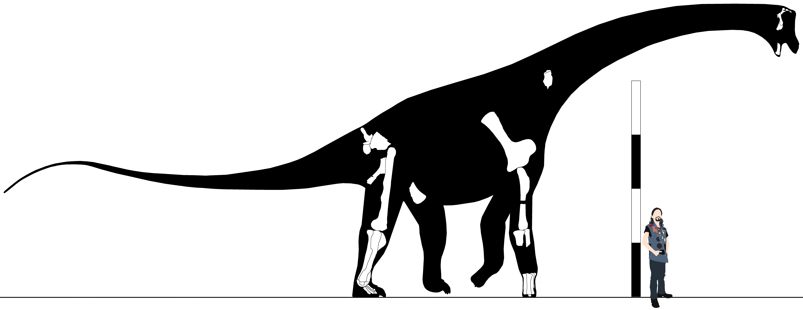
Skeletal reconstruction of Antarctosaurus wichmannianus, with left hindlimb mirrored for visibility. Scale bar equals 4m.
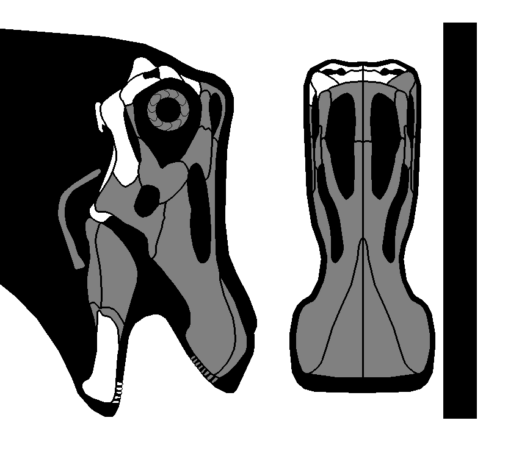
Skull reconstruction of Antarctosaurus wichmannianus. Scale bar equals 1m.
Genus Baalsaurus Calvo & González-Riga, 2018
Baalsaurus mansillai Calvo & González-Riga, 2018
Late Cretaceous, late Gallic epoch, Turonian stage
Portezuelo Formation
Baal Site, Lago Barreales, Neuquén Province, Argentina
MUCPv-1460 (Holotype) (Total length 13.46m) - Dentary, 13 teeth
Diagnosis - Dentary with 10 alveoli on the anterior ramus (1); dentary with ventrally and anteriorly inclined symphysis (2); wide ventral mackelian groove surrounded by a
thin lamina that form a keel in the ventral border of the dentary (3).
Comments - enter
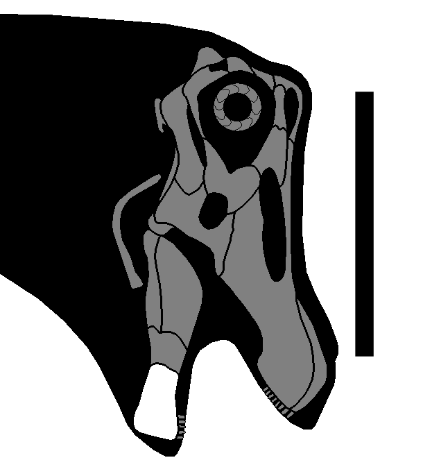
Skull reconstruction of Baalsaurus mansillai. Scale bar equals 50cm.
Genus Bonitasaura Apesteguía, 2004
Bonitasaura salgadoi Apesteguía, 2004
Late Cretaceous, middle Senonian epoch, late Santonian stage
Bajo de la Carpa Formation
La Bonita Hill, Río Negro Province, Argentina
MPCA 460 (Holotype) (Total length 11.32m) - Frontal (74mm), parietal (43mm), lacrimal (155mm), quadrate (245mm), dentary (115mm*), 16 teeth, axis (16cm), Cv4, Cv6, Cv13, D1, D2,
D3 (185mm), D6 (195mm), D10, ribs, Cd1 (120mm), Cd3 (130mm), twelve mid-caudals (135, 130, 135, 135, 130, 130, 135, 128, 125, 125, 125, 135mm), eleven posterior caudals (110,
112, 110, 100, 100, 95, 78, 75, 75mm), five chevrons, sternal fragment, humerus, Mc II (324mm), Mc III (309mm), pubis (695mm), ischium (520mm), femur (1185mm), tibia (725mm),
fibula, astragali (70mm), Mt I (120mm), Mt II (154mm), Mt III (169mm), Mt IV (180mm), Mt V (142mm), PP III-1 (59mm), PP IV-1 (73mm), pedal ungual phalanx (110mm) (Gallina &
Apesteguía, 2011)
MPCA 467 (Topotype) - Anterior caudal centrum, mid-caudal centrum, radius fragment, ulna (600mm), Mc II, Mc III, femoral head, distal tibia, fibula (732mm)
MPCA 468 (Topotype) - Tibia
Rancho de Ávila, Río Negro Province, Argentina
MLP-Av 1007 - Anterior caudal neural spine (Gallina & Otero, 2015)
MLP-Av 2060 - Fibula (Gallina & Otero, 2015)
MLP-Av 2062 - Tibia (Gallina & Otero, 2015)
MLP-Av 2074 - Fibula (Gallina & Otero, 2015)
MLP-Av 2121 - Anterior dorsal neural arch (Gallina & Otero, 2015)
Diagnosis - enter
Comments - The specimens from Rancho de Ávila were originally referred to Laplatasaurus araukanicus (Huene, 1929).
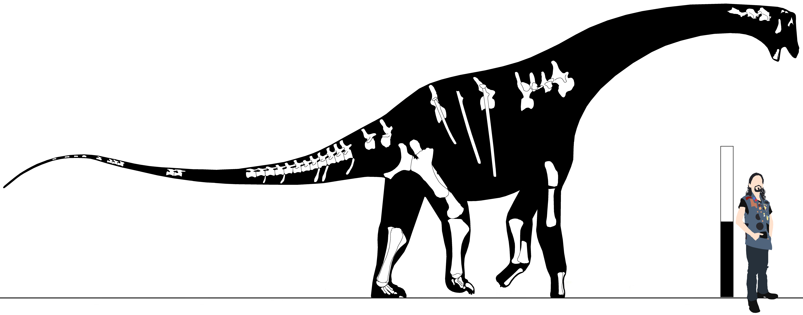
Skeletal reconstruction of Bonitasaura salgadoi. Scale bar equals 2m, scaled as MPCA 460.
Bonitasaura sp. Gianechini, et al. 2015
Late Cretaceous, middle Senonian epoch, early Campanian stage
Anacleto Formation, Rio Colorado Subgroup, Neuquén Group
Verdecchia Family Field, General Roca, Río Negro Province, Argentina
MPCN #? (Gianechini, et al. 2015)
Diagnosis - enter
Comments - enter
Genus Brasilotitan Machado, et al. 2013
Brasilotitan nemophagus Machado, et al. 2013
Late Cretaceous, Senonian epoch
Adamantina Formation, Bauru Group
Raposo Tavares, Presidente Prudente City, São Paulo, Brazil
MPM 125R (Holotype) (Total length 6.71m) - Dentary (98mm*), anterior cervical (165mm*), mid-cervical (147mm), S1 (102mm), S2 (92mm), S3 (94mm*), ilium, ischium, ungual,
fragments (Machado, et al. 2013)
MPM 126R - Partial tooth (Machado, et al. 2013)
Diagnosis - enter
Comments - enter
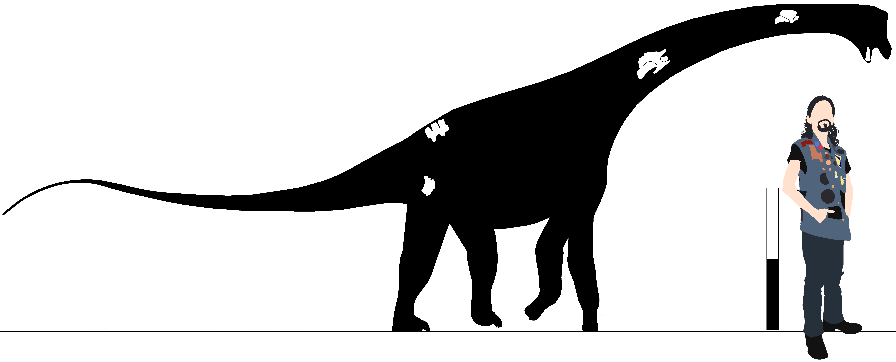
Skeletal reconstruction of Brasilotitan nemophagus. Scale bar equals 1m.
Genus Inawentu Filippi, et al. 2023
Inawentu oslatus Filippi, et al. 2023
Late Cretaceous, middle Senonian epoch, late Santonian stage
Bajo de la Carpa Formation
La Invernada, Rincón de los Sauces, Neuquén Province, Argentina
MAU-Pv-LI-595 (Holotype) (Total length 9.87m) - Nearly complete skull (45-50cm), twelve cervicals, ten dorsals, sacrum, ribs, ilia (Filippi, online 2015; Filippi, et al. 2023)
Diagnosis - enter
Comments - The skull of Inawentu is mostly complete (though distorted) & shows that antarctosaurids possessed a skull rather similar to that of rebbachisaurids
such as Nigersaurus (as has been hypothesized for many years). The position of the neurocranial elements & the way they articulate with the atlas suggests a nearly
perpendicular position of the tooth row in relation to the cervicals, also previously only seen in derived rebbachisaurids like Nigersaurus. This specimen also preserves
the entire precaudal axial sequence, which makes it by far the most complete & important antarctosaurid for elucidating the proportions of the group. Interestingly, it is the
only known titanosaur where only twelve cervicals are present, further shortening the cervical series relative to other clades.
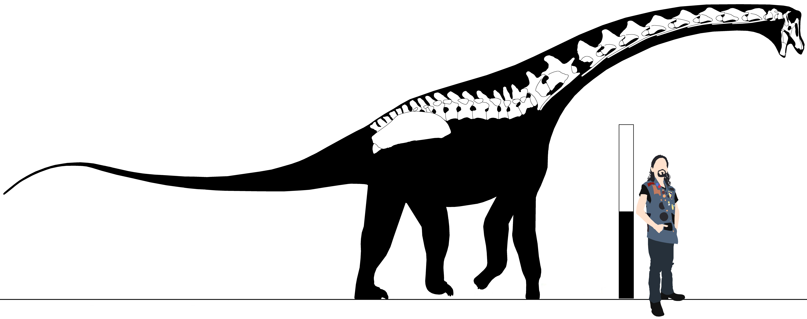
Skeletal reconstruction of Inawentu oslatus. Scale bar equals 2m.
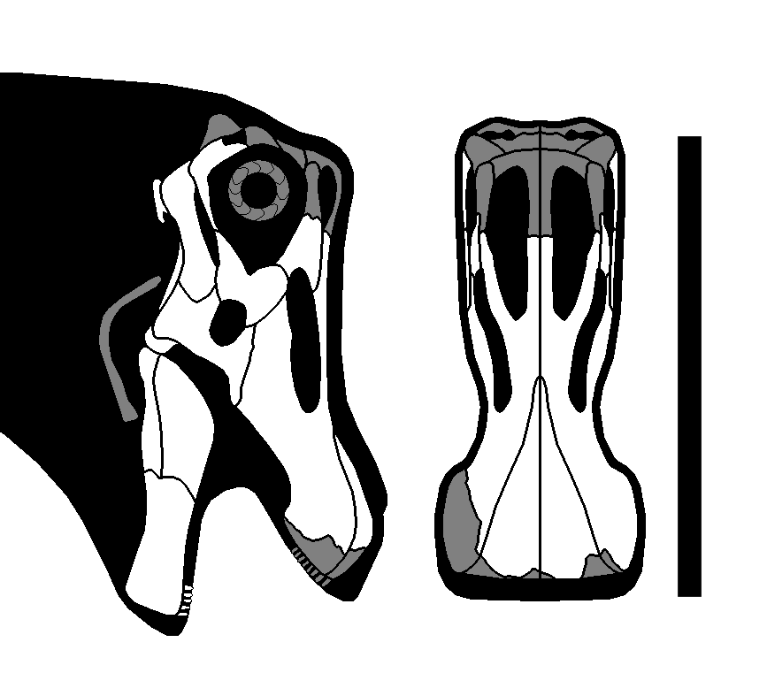
Skull reconstruction of Inawentu oslatus in lateral & dorsal views. Scale bar equals 50cm.
“Cinco Saltos antarctosaurid” García & Cerda, 2010
Late Cretaceous, middle Senonian epoch, early Campanian stage
Anacleto Formation, Rio Colorado Subgroup, Neuquén Group
Cinco Saltos, Río Negro Province, Argentina
CSPv-061 - Partial dentary (79mm*)
Diagnosis - enter
Comments - Calvo & González-Riga (2018) hypothesized this specimen was closely related to Antarctosaurus, Baalsaurus, & Brasilotitan due to the L-shaped dentary
symphysis present in these taxa.
Superfamily Titanosauroidea Upchurch, 1995
Definition - All saltasauroids closer to Titanosaurus indicus than to Antarctosaurus wichmannianus.
Diagnosis - enter
Comments - enter
Genus Loricosaurus Huene, 1929
Loricosaurus scutatus Huene, 1929
Late Cretaceous, middle Senonian epoch, early Campanian stage
Anacleto Formation, Río Colorado Subgroup, Neuquén Group
Cinco Saltos, Neuquén River, Neuquén Province, Argentina
MLP-CS 1210 (Syntype) - Osteoderm
MLP-CS 1213 (Syntype) - Osteoderm
MLP-CS 1214 (Syntype) - Osteoderm
MLP-CS 1215 (Syntype) - Osteoderm
MLP-CS 1218 (Syntype) - Osteoderm
MLP-CS 1219 (Syntype) - Osteoderm
MLP-CS 1220 (Syntype) - Osteoderm
MLP-CS 1221 (Syntype) - Osteoderm
MLP-CS 1226 (Syntype) - Osteoderm
MLP-CS 1228 (Syntype) - Osteoderm
MLP-CS 1229 (Syntype) - Osteoderm
MLP-CS 1230 (Syntype) - Osteoderm
MLP-CS 1231 (Syntype) - Osteoderm
MLP-CS 1232 (Syntype) - Osteoderm
MLP-CS 1235 (Syntype) - Osteoderm
MLP-CS 1237 (Syntype) - Osteoderm
MLP-CS 1470 (Syntype) - Osteoderm
MLP-CS 1471 (Syntype) - Osteoderm
MLP-CS 1472 (Syntype) - Osteoderm
MLP-CS 1473 (Syntype) - Osteoderm
MLP-CS 1474 (Syntype) - Osteoderm
MLP-CS 1475 (Syntype) - Osteoderm
MLP-CS 1476 (Syntype) - Osteoderm
MLP-CS 1477 (Syntype) - Osteoderm
MLP-CS 2006 (Syntype) - Osteoderm
MLP-CS 2010 (Syntype) - Osteoderm
Diagnosis - enter
Comments - Very similar to osteoderms ascribed to Neuquensaurus australis, & if synonymous with this taxon would have priority, though given the high amount of
titanosaurs named from this formation, it is possible these osteoderms belong to another taxon.
Genus Udelartitan Soto, et al. 2024
Udelartitan celeste Soto, et al. 2024
Middle-late Cretaceous, middle Gallic to middle Senonian epochs, Cenomanian to Santonian stages
Guichón Formation
Araújo, Quebracho, Paysandú Department, Uruguay
FC-DPV 3595 (Holotype) - Cd1, Cd2, Cd3
FC-DPV 1900 - 60 caudals, partial left coracoid, partial left tibia (136mm), proximal right fibula (147mm), two right astragali (82, 107mm), Mt I (133, 129mm), Mt II (117, 118mm),
Mt III, left Mt IV (96mm), left Mt V (95mm)
Diagnosis - enter
Comments - Elements identified by Soto, Perea, & Cambiaso (2012) as osteoderms were in fact most likely concretions based on histological analysis (Soto, et al.
2024). Eggshell fragments of the ootaxon Sphaerovum were found nearby & may correspond to this species.
“Echaporã Titanosaur II” Navarro, 2019
Late Cretaceous, late Senonian epoch, Maastrichtian stage
Echaporã Member, Marilia Formation
Campina Verde, Minas Gerais, Brazil
MBC 033-PV - D2, D3, D4, D5, partial D6, proximal dorsal rib, anterior caudal, mid-caudal, chevron, distal scapula, left coracoid (Navarro, 2019)
Diagnosis - enter
Comments - enter
“Quiricó titanosaur” Navarro, 2019
Early to middle Cretaceous, early to middle Gallic epoch, Barremian to Aptian stages
Quiricó Formation
CJ-01, Mucambo Farm, Embira-Branca Hills, Coração de Jesus City, Minas Gerais, Brazil
MZSP-Pv 831 - Posterior cervical, cervical ribs, dorsal ribs, possible coracoid, sternal plate, right humerus, right radius, right manus
Diagnosis - enter
Comments - enter
“Rough Run titanosaur” Fronimos & Lehman, 2014
Late Cretaceous, late Senonian epoch, Maastrichtian stage
Black Peaks Formation
Rough Run Amphitheater, Rough Run Creek, Big Bend National Park, Texas, United States
TMM 45891-1 through 18 - D4 (315mm), D5 (322mm), D6 (298mm), D10 (254mm), dorsal centrum (270mm*), dorsal transverse process (205mm), two sacral centra (215mm*), two sacral ribs,
anterior caudal (170mm), left humerus (1071mm*), left ilium (706mm*), fragmentary right ilium (508mm*), partial left ischium (343mm*), left pubis (830mm*) (Fronimos & Lehman,
2014)
TMM 45891-11 - Right humerus (724mm)
TMM 45890-1 & 2 - Right tibia (826mm*), pedal ungual (128mm)
Naashoibito Member, Ojo Alamo Formation
NMMNH Locality 6553, San Juan County, New Mexico, United States
NMMNH P-49967 - Partial right tibia, partial right fibula, Mt I (195mm), PUP I (213mm*), Mt II (245mm), PP II-1 (99mm), PUP II (182mm*), Mt III (270mm), PP III-1 (121mm), PUP
III (151mm*), Mt IV (291mm), Mt V (281mm)
Diagnosis - Pedal unguals significantly deeper than broad* (1); neural spines of anterior dorsals posteriorly inclined at an angle of 60o or more (2); posterior dorsal
vertebrae exhibit anteroposteriorly short centra (3), dorsolaterally inclined transverse processes (4), & postzygodiapophyseal laminae (5); robust prespinal laminae (6); the
presence of a convex dorsal margin on the ilium (7); a straight ventral surface of the preacetabular lobe (8); transversely expanded pubic peduncle (9); posterior dorsal
vertebrae with a greater development of the prespinal lamina than in anterior dorsal vertebrae (10); presence of postzygodiapophyseal laminae (11), & presence of divided SPDL
(12); spinodiapophyseal laminae positioned on the anterior face of the neural spine (13); poorly developed postspinal laminae in dorsal vertebrae (14); presence of well-developed
postzygodiapophyseal laminae in posterior dorsal vertebrae (15); contribution of the spinoprezygapophyseal laminae to the composite prespinal lamina in dorsal vertebrae (16); a
relatively weak cnemial crest & mild mediolateral expansion of the astragalar articulation surface (17); proximal protrusion of the dorsally positioned intercondylar process
(18); protrusion on the distal end of the plantar surface of the phalanx (19).
Comments - Almost certainly distinct from the contemporary Alamosaurus. A partial crus & pes described by D'Emic, Wilson, & Williamson (2011) shares the
autapomorphic pedal unguals with TMM 45890-2, while lacking any characters distinguishing it from the Rough Run material, & as such it is referred to this taxon.
Family Nemegtosauridae Upchurch, 1995
Definition - Nemegtosaurus mongoliensis, Quaesitosaurus orientalis, their most recent common ancestor, & all of their descendants (nov. definition).
Diagnosis - enter
Comments - Nemegtosauridae in the pass was traditionally considered to include Nemegtosaurus, Quaesitosaurus, Rapetosaurus, & Tapuiasaurus, however this grouping
was the result of a lack of titanosaur skulls pulling these taxa together in phylogenetic analyses rather than a natural clade, leaving only N. mongoliensis & Q. orientalis
within. Currie, et al. (2017) recovered some postcrania from the Nemegtosaurus holotype locality, & suggested based on it that it was synonymous with
Opisthocoelicaudia as had long been suggested due to a lack of overlap & seeming lack of evidence for multiple titanosaurs in the same formation. Averianov & Lopatin (2019)
however, found more postcranial elements that showed differences from the postcrania of O. skarzynskii, suggesting there were in fact multiple titanosaurs from the Nemegt.
As a result, the two taxa are separated here, barring redescription of the Opisthocoelicaudia holotype or the discovery of new partial skeletons that overlap with both
taxa's holotypes.
Genus Nemegtosaurus Nowinski, 1971
Nemegtosaurus mongoliensis Nowinski, 1971
Late Cretaceous, late Senonian epoch, Maastrichtian stage
Nemegt Formation
Number 6 Locality, Central Sayr, Nemegt Locality, Gobi Desert, Mongolia
ZPAL MgD-I/9 (Holotype) - Skull (700mm) (Wilson, 2005)
MPC-D100/413 (Holotype) - Anterior caudal centrum (100mm**), right femur (1240mm), right tibia, right fibula, right astragalus (127mm), pedal ungual (Currie, et al. 2017)
Nemegt Locality, Khadat Tolgoi, Gobi Desert, Mongolia
MPC D100/402 - Skull (Maryańska, 2000)
Diagnosis - Presence of a spur on the posterior squamosal* (1); a conspicuous fossa surrounding the preantorbital fenestra* (2); presence of an accessory fenestra
positioned anterodorsal to the preantorbital fenestra* (3); a jugal foramen* (4); a coronoid foramen* (5)
Comments - enter
Nemegtosaurus pachi Dong, 1977
Late Cretaceous, late Senonian epoch, Maastrichtian stage
Subashi Formation
IVPP Locality 66012, Lianmuqin, Shanshan, Turpan Basin, Xinjiang Province, China
IVPP V4879 (Holotype) - Teeth
Diagnosis - None, undiagnostic.
Comments - Found at the same locale as the type of “Shanshanosaurus houyanshanensis” (now Tarbosaurus bataar). Upchurch, Barrett, & Dodson (2004) considered
this taxon a nomen dubium without comment.
Genus Quaesitosaurus Kurzanov & Bannikov, 1983
Quaesitosaurus orientalis Kurzanov & Bannikov, 1983
Late Cretaceous, middle Senonian epoch, Campanian stage
Barungoyot Formation
Shara-Tsav, Gobi Desert, Mongolia
PIN 3906/2 (Holotype) - Skull (550mmm)
Diagnosis - enter
Comments - enter
“Khamaryn Khural nemegtosaurid” Tsuihiji, et al. 2011
Middle Cretaceous, middle Gallic epoch, Albian stage
Khamaryn Khural, Gobi Desert, Mongolia
#? - Braincase (Tsuihiji, et al. 2011)
Diagnosis - enter
Comments - This specimen shares derived traits with Nemegtosaurus & Quaesitosaurus (prefrontal, frontal, and postorbital bear roughened ornamentation along the
orbital margin) & was united with these two taxa in a monophyletic Nemegtosauridae because the parietal does not contribute to the posttemporal fossa, recovered as an unambiguous
synapomorphy of the group (Tsuihiji, et al. 2011).
Family Titanosauridae Lydekker, 1885
Definition - All titanosaurs closer to Titanosaurus indicus than to Nemegtosaurus mongoliensis, Opisthocoelicaudia skarzynskii, Rapetosaurus krausei, or
Saltasaurus loricatus (nov. definition).
Diagnosis - enter
Comments - enter
Genus Adamantinasaurus Santucci & Bertini, 2006
Adamantinasaurus mezzalirai Santucci & Bertini, 2006
Late Cretaceous, middle Senonian epoch, Santonian to Campanian stages
Adamantina Formation
Flórida Paulista, São Paulo, Brazil
MUGEO 1282 (Holotype) - Cd2, Cd3, Cd4, Cd5, Cd6, Cd7
MUGEO 1289 (Holotype) - Chevron
MUGEO 1295 (Holotype) - Chevron
Diagnosis - enter
Comments - enter
Genus Alamosaurus Gilmore, 1922
="Utetitan" Paul, 2024 (nomen nudum)
Alamosaurus sanjuanensis Gilmore, 1922
="Utetitan zellaguymondeweyae" Paul, 2024 (nomen nudum)
Late Cretaceous, late Senonian epoch, Maastrichtian stage
Naashoibito Member, Ojo Alamo Formation
Barrel Spring Arroyo, Ojo Alamo, San Juan County, New Mexico, United States
USNM V 10846 (Holotype) - Scapula (1550mm*) (Gilmore, 1922)
USNM V 10847 (Paratype) - Ischium (810mm) (Gilmore, 1922)
NMMNH P-25077 - Femur (Lehman, 1981)
NMMNH P-29726 - Tooth (Lehman, 1981)
PMU 24803 - Three sacrals (425mm*) (Poropat, 2013)
PMU 24804 - Mid-cervical (688mm) (Poropat, 2013)
PMU 24805 - Partial left ilium (Poropat, 2013)
USNM V 15658 - Caudal (Gilmore, 1946)
SMP Locality 389b, Willow Wash, Ojo Alamo, San Juan County, New Mexico, United States
SMP VP-1850 (Total length 28.68m) - Posterior cervical (390mm*) (Fowler & Sullivan, 2011)
SMP Locality 410b, Willow Wash, Ojo Alamo, San Juan County, New Mexico, United States
SMP VP-2104 - Posterior dorsal (130mm) (Fowler & Sullivan, 2011)
SMP Locality 884b, De-na-zin Wash, Ojo Alamo, San Juan County, New Mexico, United States
SMP VP-1625 (Total length 27.09m) - Left femur (1085mm*) (Fowler & Sullivan, 2011)
Ojo Alamo, San Juan County, New Mexico, United States
NMMNH P-25072 - Scapula (Lehman, 1985)
NMMNH P-29031 - Distal caudal centrum (Lehman, 1981)
NMMNH P-29724 - Tooth (Kues, et al. 1980)
NMMNH P-29725 - Tooth (Kues, et al. 1980)
NMMNH P-29727 - Tooth (Kues, et al. 1980)
NMMNH P-29728 - Tooth (Kues, et al. 1980)
Hall Lake Member, McRae Formation
Sierra Nevada, New Mexico, United States
TKM007 - Fragmentary humerus (Lozinsky, et al. 1984)
TKM009 - Femur (1680mm) (Lozinsky, et al. 1984)
San Juan Basin, New Mexico, United States
LACM 156591 - Pubis (Sander, et al. 2014)
LACM 157550 - Cervical series including Cv6 (600+mm) (Habib, 2018)
North Horn Formation
Alamosaurus Locality, South Dragon Valley, Emery County, Utah, United States
USNM v 15560 “North Horn Specimen” (Total length 22.21m) - Cd1 (370mm), Cd2 (314mm), Cd3 (296mm), Cd4 (280mm), Cd5+Cd6 (fused; 468mm), Cd7 (270mm), Cd8 (263mm), Cd9 (262mm),
Cd10 (249mm), Cd11 (266mm), Cd12 (252mm), Cd13 (238mm), Cd14 (245mm), Cd15 (257mm), Cd16 (241mm), Cd17 (258mm), Cd18 (251mm), Cd19 (245mm), Cd20 (241mm), Cd21 (240mm), Cd22
(235mm), Cd23 (225mm), Cd24 (220mm), Cd25 (210mm), Cd26 (208mm), Cd27 (200mm), Cd28 (200mm), Cd29 (173mm), Cd30 (144mm), Ch1, Ch2, Ch3, Ch4 (403mm), Ch5 (403mm), Ch6, Ch7, Ch8,
Ch9, Ch10, Ch11, Ch12, Ch13, Ch14, Ch15, Ch16, Ch17, Ch18, Ch19, Ch20, Ch21, Ch22, Ch23, sacrum (not collected), scapulocoracoid (1948mm), sternals (1015, 1071mm), humerus
(1360mm), radius (lost) (800mm), ulna (885mm), Mc I (410mm), Mc II (409mm), Mc III (390mm), Mc IV (370mm), Mc V (357mm), ischia (628mm), osteoderms (Gilmore, 1946; D'Emic &
Carrano, 2015)
BYU Locality 662, Manti National Forest, Emery County, Utah, United States
BYU 9087 - Proximal caudal, proximal left humerus (630mm wide), proximal left femur (530mm wide) (Curtice, 2017)
Ferron Mountain, Emery County, Utah, United States
BYU 11392 - Anterior caudal (D'Emic, Wilson, & Williamson, 2011)
BYU 11393 - Anterior caudal (D'Emic, Wilson, & Williamson, 2011)
Emery County, Utah, United States
BYU #? (lost) - Fibula (1400mm) (Curtice, 2017)
Lower member, Black Peaks Formation
Tornillo Flat, Big Bend National Park, Brewster County, Texas, United States
BIBE 45854 (Total length 22.21m) - Cv6 (660mm*), Cv7 (449mm*), Cv8 (734mm), Cv9 (770mm), Cv10 (789mm), Cv11 (800mm*), Cv12 (810mm*), Cv13 (742mm), Cv14 (640mm) (Tykoski &
Fiorillo, 2016)
BIBE 45909 - Right ischium (Tykoski & Fiorillo, 2016)
BIBE 45911 - Left ischium (Tykoski & Fiorillo, 2016)
BIBE 45958 - Dorsal centrum, partial scapula (Tykoski & Fiorillo, 2016)
NGH 10-12, Grapevine Hills, Big Bend National Park, Brewster County, Texas, United States
TMM 43621-1 - Axis (130mm), Cv3 (223mm), Cv4 (140mm*), Cv5 (235mm), Cv6 (575mm), Cv7 (327mm), Cv9? (305mm*), Cv10? (310mm*), Cv11? (180mm), D1? (125mm*), D5? (90mm*), D6 (75mm*),
D7 (100mm*), D8 (167mm), D9 (85mm*), D10?, dorsal fragments, sacral centrum, coracoid (180mm), humerus (605mm), ulna (464mm), partial ilium, partial pubis, left ischium (210mm),
partial tibiae, left fibula (480mm), fragmentary metatarsal (Lehman & Coulson, 2002)
Javelina Formation
TMM Locality 41541, Big Bend National Park, Brewster County, Texas, United States
TMM 41541-1 (Total length 24.38m) - Three posterior cervicals, dorsals, dorsal ribs, sacrum, Cd1, humerus (1503mm), pelvis, femur (1730mm) (Fronimos & Lamanna, 2018)
Tornillo Flats Bonebed, Big Bend National Park, Brewster County, Texas, United States
#? - Humerus (~70cm), ilium (67cm) (Montgomery & Barnes, 2012)
Willow Locality, Big Bend National Park, Brewster County, Texas, United States
TMM 46052-1 - Left femur (1510mm) (Wick & Lehman, 2014)
Big Bend National Park, Brewster County, Texas, United States
AMNH FARB 21531 - Right femur (970mm) (Wick & Lehman, 2014)
TMM 43090-1 - Humerus (1300mm) (Klein, et al. 2012)
TMM 43600-2 - Humerus (915mm) (Klein, et al. 2012)
TMM 45600-1 - Humerus (460mm) (Klein, et al. 2012)
TMM #? - Humerus (1350mm) (Klein, et al. 2012)
TTU 542 - Right femur (1460mm) (Wick & Lehman, 2014)
UTEP P-25 - Left femur (1675mm) (Wick & Lehman, 2014)
El Picacho Formation
Big Bend National Park, Brewster County, Texas, United States
#? - Material (Lehman, 1987)
Fort Crittenden Formation
El Pilar Locality 56, Adobe Canyon, Santa Rita Mountains, Arizona, United States
UALP 4005 - Caudal (146mm) (McCord, 1997)
Evanston Formation
Round Mountain, Wyoming, United States
UCMP #? - Three caudals (Lucas & Hunt, 1989)
Hell Creek Formation
Petroleum County, Montana, United States
#? - Material (Maxwell, et al. 1967)
Aguja Formation
Región Altares, Chihuahua, Mexico
#? - Partial femur (135cm*) (Rivera-Sylva, Guzman-Gutiérrez, & Palomino-Sánchez, 2006; Molina-Pérez & Larramendi, 2020)
Diagnosis - Posterior cervicals, thin lamina that arises perpendicularly from the ACDL & extends anteriorly to the base of the prezygapophyses* (1), which divides the
PRCDF into dorsal & ventral sub-fossae* (2); lateral surface of the centrum & the diapophyseal fossae ventral to the zygo-diapophyseal table are widely exposed & visible (3);
large, laterally overhanging PRDL that produces a nearly diamond-shaped profile in dorsal & ventral views (4)
Comments - enter
Genus Lohuecotitan Díez Díaz, et al. 2016
Lohuecotitan pandafilandi Díez Díaz, et al. 2016
Late Cretaceous, middle Senonian epoch, late Campanian stage
Villalba de la Sierra Formation
Lo Hueco, Fuentes, Cuenca, Spain
HUE-EC-01 (Holotype) - Three cervicals, six dorsals, D10, dorsal ribs, partial sacrum, 20 caudals, chevrons, left ulna, ischia, left pubis, right femur, right tibia, right fibula, fragments
Diagnosis - enter
Comments - enter
Genus Paludititan Csiki, et al. 2010
Paludititan nalatzensis Csiki, et al. 2010
Late Cretaceous, late Senonian epoch, Maastrichtian stage
Sânpetru Formation
Nălaţ-Vad, Hațeg, Hunedoara, Romania
UBB NVM1 (Holotype) - Three dorsals, ribs, twelve caudals, twelve chevrons, partial right ilium, ischia, right pubis, fragmentary right femur, two ungual phalanges, fragments
Diagnosis - enter
Comments - enter
Genus Pellegrinisaurus Salgado, 1996
Pellegrinisaurus powelli Salgado, 1996
Late Cretaceous, middle Senonian epoch, early Campanian stage
Anacleto Formation, Rio Colorado Subgroup, Neuquén Group
Pala Mecánica, Pellegrini Lake, Río Negro Province, Argentina
MPCA-Pv 1500 (Holotype) - D7, D8, D9, D10, dorsal neural arches (lost), dorsal ribs (lost), sacrum (lost), Cd1 (lost), Cd2-27, partial left femur (830mm) (Cerda, et al.
2021)
Diagnosis - enter
Comments - enter
Genus Titanosaurus Lydekker, 1877
Titanosaurus indicus Lydekker, 1877
Late Cretaceous, late Senonian epoch, Maastrichtian stage
Mottled Nodular Beds, Lameta Formation
Sauropod Bed, Bara Simla, Madhya Pradesh, India
GSI K20/315-6 (Holotype) - Middle caudal
Diagnosis - Four prominent chevron facets* (1); anteroposteriorly thin neural spine separated from the postzygapophyses* (2)
Comments - enter
“Gara Sbaa Titanosaur” Ibrahim, et al. 2016
Middle Cretaceous, middle Gallic epoch, Cenomanian stage
Gara Sbaa Formation, Kem Kem Group
Gara Sbaa Area, Er Rachidia Province, Morocco
FSAC-KK 7000 - Cd15 (260mm)
Diagnosis - enter
Comments - enter
Clade Saltasauria nov.
Definition - All titanosauroids closer to Saltasaurus loricatus than to Titanosaurus indicus.
Diagnosis - enter
Comments - enter
Genus Bustingorrytitan Simón & Salgado, 2023
=“Sauropodus” Simon vide Anonymous, 2001
Bustingorrytitan shiva Simón & Salgado, 2023
Middle Cretaceous, middle Gallic epoch, Cenomanian stage
Huincul Formation, Rio Limay Subgroup, Neuquén Group
"Bustingorry II Site", Villa El Chocón, Department of Confluencia, Neuquén Province, Argentina
MMCH-Pv 59 (Holotype) - Right dentary, fragmentary tooth, D6 (220mm**), two anterior caudals (210, 200mm), mid-caudal (140mm), posterior caudal (140mm), two chevrons, scapulae,
coracoids, sternals, humeri (1700, 1600mm), right radius (970mm), ulnae (1100mm), Mc I (510mm), Mc II (530mm), Mc III (530mm), Mc IV (460mm), Mc V (455mm), partial ilia, right
pubis, right femur (1120mm*), right tibia (660mm*), partial fibulae, left astragalus (190mm), Mt I (160mm), PUP I (170mm), PUP II (160mm), PUP III (145mm), Mt IV (270mm*), Mt V
(240mm) (Simón & Salgado, 2023)
MMCH-Pv 60 (Paratype) - Mid-posterior cervical (540mm), posterior caudal (70mm), right ulna (940mm), Mc III (450mm), right femur (1240mm*), left tibia (1100mm) (Simón & Salgado,
2023)
MMCH-Pv 61 - Left femur (1600mm) (Simón & Salgado, 2023)
MMCH-Pv 62 - Right femur (230mm*), left tibia (550mm*), left astragalus (180mm) (Simón & Salgado, 2023)
Diagnosis - enter
Comments - Informally referred to as "Sauropodus" (Tweet, online 2023).
Family Saltasauridae Powell, 1992 vide Sereno, 1998
Definition - Saltasaurus loricatus, Opisthocoelicaudia skarzynskii, their most recent common ancestor, & all of their descendants (Navarro, et al. 2022).
Diagnosis - enter
Comments - enter
Genus Qinlingosaurus Xue, et al. 1996
Qinlingosaurus luonanensis Xue, et al. 1996
Late Cretaceous
Hongtuling or Shanyang Formation
Hongtuling, Qinling Mountains, Shaanxi Province, China
NWUV 1112 (Holotype) - Three vertebrae, ilium (770mm), ischium
Diagnosis - enter
Comments - enter
Genus Titanomachya Pérez-Moreno, et al. 2024
Titanomachya gimenezi Pérez-Moreno, et al. 2024
Late Cretaceous, late Senonian epoch, Maastrichtian stage
La Colonia Formation
Cerro Bayo Area, Chubut Province, Argentina
MPEF-Pv 11547 (Holotype) - Partial ribs, partial posterior caudal (110mm), two chevrons, left humerus (645mm), fragmentary left ilium, fragmentary right pubis, femora (274*,
885mm), tibiae (610, 614mm), fibulae (625, 615mm), astragali (85, 95mm) (Pérez-Moreno, et al. 2024)
Diagnosis - enter
Comments - enter
“Turkana Grits titanosaur” Gorscak, 2016
Late Cretaceous, late Senonian epoch, Maastrichtian stage
Lapurr Sandstone
Lake Turkana, Anza Rift, Kenya
KNM-WT 65086 - Presacral fragments, Cd1, four anterior caudals, four mid-posterior caudals, scapula, humerus, radius, ulna, femur, fibulae, osteoderm, fragments
Diagnosis - enter
Comments - enter
Subfamily Saltasaurinae Powell, 1992
Definition - All saltasaurids closer to Saltasaurus loricatus than to Opisthocoelicaudia skarzynskii (Navarro, et al. 2022).
Diagnosis - enter
Comments - enter
Genus Ibirania Navarro, et al. 2022
Ibirania parva Navarro, et al. 2022
Late Cretaceous, middle Senonian epoch, late Santonian to early Campanian stages
Lower Member, São José do Rio Preto Formation
Sítio dos Irmãos Garcia, Vila Venture, Ibirá Municipality, São Paulo, Brazil
LPP-PV-0200 (Holotype) - Posterior dorsal
LPP-PV-0201 (Holotype) - Distal metacarpal
LPP-PV-0202 (Holotype) - Fragmentary ulna
LPP-PV-0203 (Holotype) - Fragmentary radius
LPP-PV-0204 (Holotype) - Partial anterior caudal
LPP-PV-0205 (Holotype) - Partial posterior caudal
LPP-PV-0206 (Holotype) - Mid-caudal neural arch
LPP-PV-0207 (Holotype) - Metatarsal
LPP-PV-0043 - Fragmentary fibula
MPMA 08-0049/02 - Posteriormost cervical
MPMA 08-0050/01 - Partial anterior dorsal
MPMA 08-0060/07 - Mid-caudal
MPMA 09-0001/99 - Fibula
MPPC 00-023 - Anterior dorsal neural arch
MPPC 02-005 - Mid-dorsal centrum
MPPC 02-012 - Fragmentary cervical centrum
MPPC 02-013 - Anterior dorsal neural arch
Diagnosis - enter
Comments - enter
Genus Neuquensaurus Powell, 1992
="Neuquensaurus" Powell, 1986 vide Bonaparte, 1987 (nomen nudum)
Neuquensaurus australis Lydekker, 1893
=Titanosaurus australis Lydekker, 1893
="Neuquensaurus australis" Powell, 1986 vide Bonaparte, 1987 (nomen nudum)
Late Cretaceous, middle Senonian epoch, early Campanian stage
Anacleto Formation, Río Colorado Subgroup, Neuquén Group
Cinco Saltos, Neuquén River, Neuquén Province, Argentina
MLP Ly 1-7 (Holotype) - Partial sacrum, five caudals (D'Emic & Wilson, 2011)
MCS-5 - One cervical, six dorsals, partial sacrum, 15 caudals, three chevrons, ilia, left ischium, femora, right tibia, right fibula, right astragalus, three osteoderms
(Salgado, Apesteguía, & Heredia, 2005)
MCS-6 - Right tibia (Salgado, Apesteguía, & Heredia, 2005)
MCS-8 - Left humerus (Salgado, Apesteguía, & Heredia, 2005)
MCS-9 - Right femur (Salgado, Apesteguía, & Heredia, 2005)
MCS-10 - Metatarsal (Salgado, Apesteguía, & Heredia, 2005)
MLP-Av 2069 - Fragmentary left ilium (Otero, 2010)
MLP-CS 1019 - Proximal right humerus (Huene, 1929a)
MLP-CS 1049 - Right humerus (Huene, 1929a)
MLP-CS 1050 - Left humerus (Huene, 1929a)
MLP-CS 1051 - Right humerus (Huene, 1929a)
MLP-CS 1058 - Left ulna (Huene, 1929a)
MLP-CS 1091 - Right humerus (Lost; Powell, 2003)
MLP-CS 1093 - Partial tibia (Huene, 1929a)
MLP-CS 1096 - Left scapulocoracoid (Huene, 1929a)
MLP-CS 1098 - Left fibula (Huene, 1929a)
MLP-CS 1099 - Right humerus (Huene, 1929a)
MLP-CS 1100 - Left humerus (Huene, 1929a)
MLP-CS 1101 - Right femur (Huene, 1929a)
MLP-CS 1102 - Partial right pubis (Huene, 1929a)
MLP-CS 1103 - Left tibia (Huene, 1929a)
MLP-CS 1104 - Left sternal plate (Huene, 1929a)
MLP-CS 1107 - Right femur (Huene, 1929a)
MLP-CS 1118 - Left femur (Huene, 1929a)
MLP-CS 1120 - Left femur (lost; Powell, 2003)
MLP-CS 1121 - Left femur (Huene, 1929a)
MLP-CS 1122 - Right femur (Huene, 1929a)
MLP-CS 1123 - Left tibia (Huene, 1929a)
MLP-CS 1124 - Right femur (Huene, 1929a)
MLP-CS 1129 - Right scapula (Huene, 1929a)
MLP-CS 1169 - Right radius (Huene, 1929a)
MLP-CS 1173 - Radius (lost; Huene, 1929a)
MLP-CS 1176 - Left radius (Huene, 1929a)
MLP-CS 1216 - Right astragalus (Huene, 1929a)
MLP-CS 1229 - Ilium (lost; Huene, 1929a)
MLP-CS 1233 - Right calcaneum (Huene, 1929a)
MLP-CS 1234 - Carpal (lost; Huene, 1929a)
MLP-CS 1260 - Right sternal plate (Huene, 1929a)
MLP-CS 1261 - Fragmentary left ischium (Huene, 1929a)
MLP-CS 1294 - Partial right pubis (Huene, 1929a)
MLP-CS 1295 - Right sternal plate (Huene, 1929a)
MLP-CS 1298 - Partial left scapulocoracoid
MLP-CS 1301 - Left scapula (Huene, 1929a)
MLP-CS 1303 - Partial tibia (Huene, 1929a)
MLP-CS 1304 - Partial right pubis (Huene, 1929a)
MLP-CS 1305 - Right ulna (Huene, 1929a)
MLP-CS 1306 - Left ulna (Huene, 1929a)
MLP-CS 1479 - Left humerus (Huene, 1929a)
MLP-CS 2005 - Left femur (Huene, 1929a)
MLP-CS 2008 - Ilium (Huene, 1929a)
MLP-Ly 14 - Right coracoid (Huene, 1929a)
MLP-Ly 17 - Right ilium (Lydekker, 1893)
MLP-Ly 25 - Left humerus (Lydekker, 1893)
MLP-Ly 89 - Left humerus (lost; Lydekker, 1893)
MLP-Ly 95 - Coracoid (lost; Lydekker, 1893)
MLP-Ly 105 - Right coracoid (lost; Lydekker, 1893)
MLP-Ly 107 - Scapula (lost; Lydekker, 1893)
MLP-Ly 109 - Partial right pubis (lost; Lydekker, 1893)
MLP-Ly 124 - Right humerus (lost; Lydekker, 1893)
MLP-Ly 127 - Left fibula (Huene, 1929a)
MPCA-CS 001 - Partial right ischium (Otero, 2010)
#? - Scapula, right humerus, fragmentary pelvis, three femora (lost; Lydekker, 1893)
Diagnosis - enter
Comments - enter
Genus Qingxiusauru Mo, et al. 2008
Qingxiusaurus youjiangensis Mo, et al. 2008
Late Cretaceous
Red Beds
Dashi Village, Nanning City, Guangxi Zhuang Autonomous Region, China
NHMG 8499 (Holotype) - Anterior caudal neural spine, sternal plates, humeri
Diagnosis - enter
Comments - enter
Genus Yamanasaurus Apesteguía, et al. 2019
Yamanasaurus lojaensis Apesteguía, et al. 2019
Late Cretaceous, late Senonian epoch, late Maastrichtian stage
Río Playas Formation
Yamana Region, Paltas Cantón, Loja Province, Ecuador
YM-UTPL-002 (Holotype) - Two sacrals
YM-UTPL-014 (Holotype) - Partial caudal
YM-UTPL-015 (Holotype) - Proximal radius
YM-UTPL-016 (Holotype) - Proximal left humerus
YM-UTPL-017 (Holotype) - Proximal tibia
Diagnosis - enter
Comments - enter
"Titanosaurus" robustus Huene, 1929
=Neuquensaurus robustus Powell, 1986 vide Bonaparte, 1987
=Saltasaurus robustus McIntosh, 1990
Late Cretaceous, middle Senonian epoch, early Campanian stage
Anacleto Formation, Río Colorado Subgroup, Neuquén Group
Neuquén River, Neuquén Province, Argentina
MLP-CS 1094 (Lectotype) - Left ulna
MLP-CS 1095 (Lectotype) - Right ulna
MLP-CS 1171 (Lectotype) - Left radius
MLP-CS 1480 (Lectotype) - Left femur
MLP-CS 1053 - Left radius (Otero, 2010)
MLP-CS 1169 - Radius
MLP-CS 1172 - Radius
MLP-CS 1175 - Radius
MLP-CS 1189 - Right Mc III
MLP-CS 1197 - Right Mc II
MLP-CS 1238 - Right Mc IV
MLP-CS 1264 - Left tibia
MLP-CS 1265 - Right fibula
MLP-CS 2004 - Left ulna (Otero, 2010)
Diagnosis - enter
Comments - Quite possibly the same as N. australis (Otero, 2010).
Tribe Saltasaurini Bonaparte & Powell, 2007
Definition - All saltasaurines closer to Saltasaurus loricatus than to Neuquensaurus australis (nov. definition).
Diagnosis - enter
Comments - enter
Genus Rocasaurus Salgado & Azpilicueta, 2000
Rocasaurus muniozi Salgado & Azpilicueta, 2000
Late Cretaceous, middle to late Senonian epoch, middle Campanian to early Maastrichtian stages
Allen Formation, Malargüe Group
Salitral Moreno, Río Negro Province, Argentina
MPCA-Pv 46 (Holotype) - Cervical, three dorsals, partial sacrals, mid-caudal, distal caudal, ilia, ischia, left pubis, left femur
MPCA-Pv 47 - Anterior caudal
MPCA-Pv 48 - Anterior caudal
MPCA-Pv 49 - Mid-caudal centrum
MPCA-Pv 51 - Distal caudal centrum
MPCA-Pv 52 - Distal caudal centrum
MPCA-Pv 53 - Distal caudal centrum
MPCA-Pv 54 - Distal caudal centrum
MPCA-Pv 55 - Distal caudal centrum
MPCA-Pv 56 - Distal caudal centrum
MPCA-Pv 57 - Anterior caudal
MPCA-Pv 59 - Posterior caudal
MPCA-Pv 60 - Anterior caudal
Cerro Matadero Site, Salitral Ojo del Agua, Río Negro Province, Argentina
MPCN-Pv-800 - Cv12 neural arch, partial posterior cervical, partial D2, fragmentary ischium (Rolando, et al. 2022)
MPCN-Pv-801 - Partial cervical centrum, D4 (Rolando, et al. 2022)
MPCN-Pv-802 - D9 (Rolando, et al. 2022)
Diagnosis - enter
Comments - enter
Genus Saltasaurus Bonaparte & Powell, 1980
Saltasaurus loricatus Bonaparte & Powell, 1980
Late Cretaceous, late Senonian epoch, Maastrichtian stage
Lecho Formation, Balbuena Subgroup, Salta Group
El Brete, Candelaria Department, Salta Province, Argentina
PVL-4017-92 (Holotype) - Partial sacrum, ilia (Powell, 2003)
CNS-V 10.023 - Right humerus (500mm) (Powell, 1992)
CNS-V 10.024 - Femur (Powell, 2003)
PVL-4017-1 - Axis (70mm) (Powell, 2003)
PVL-4017-2 - Cv4 (155mm) (Powell, 2003)
PVL-4017-3 - Cv5 (160mm) (Powell, 2003)
PVL-4017-4 - Cv8 (160mm) (Powell, 2003)
PVL-4017-5 - Cv9 (160mm) (Powell, 2003)
PVL-4017-6 - Cv10 (175mm) (Powell, 2003)
PVL-4017-7 - Cv11 (150mm) (Powell, 2003)
PVL-4017-8 - Partial Cv12 (Powell, 2003)
PVL-4017-9 - Cv13 (130mm) (Powell, 2003)
PVL-4017-10 - D1 (Powell, 2003)
PVL-4017-11 - D2 (150mm) (Powell, 2003)
PVL-4017-12 - D3 (Powell, 2003)
PVL-4017-13 - Cv6 (160mm), D5 (135mm) (Powell, 2003)
PVL-4017-14 - D6 (145mm) (Powell, 2003)
PVL-4017-15 - D7 (145mm) (Powell, 2003)
PVL-4017-16 - D7 (160mm) (Powell, 2003)
PVL-4017-17 - Posterior dorsal (Zurriaguz & Powell, 2015)
PVL-4017-18 - Sacrum (Powell, 2003; D'Emic & Wilson, 2011)
PVL-4017-19 - S7 (140mm) (Powell, 2003; Poropat, online 2020)
PVL-4017-20 - Cd1 (140mm) (Powell, 2003)
PVL-4017-21 - Caudal (130mm) (Powell, 2003)
PVL-4017-22 - Anterior caudal (145mm) (Powell, 2003)
PVL-4017-23 - Caudal (145mm) (Powell, 2003)
PVL-4017-24 - Anterior caudal (135mm) (Powell, 2003)
PVL-4017-25 - Anterior caudal (155mm) (Powell, 2003)
PVL-4017-26 - Anterior caudal (Powell, 2003)
PVL-4017-27 - Caudal (150mm) (Powell, 2003)
PVL-4017-28 - Caudal (155mm) (Powell, 2003)
PVL-4017-29 - Caudal (150mm) (Powell, 2003)
PVL-4017-32 - Posterior caudal (Powell, 2003)
PVL-4017-38 - Posterior caudal (Powell, 2003)
PVL-4017-39 - Posterior caudal (Powell, 2003)
PVL-4017-40 - Posterior cervical (Powell, 2003)
PVL-4017-41 - Posterior dorsal (Powell, 2003)
PVL-4017-42 - D5, D6, D7 (Powell, 2003)
PVL-4017-43 - Posterior dorsal (Powell, 2003)
PVL-4017-44 - D1 neural arch (Powell, 2003)
PVL-4017-46 - Tibia (Powell, 2003)
PVL-4017-47 - Posterior dorsal (Powell, 2003)
PVL-4017-48 - Posterior dorsal (Powell, 2003)
PVL-4017-50 - Anterior cervical (100mm) (Powell, 2003)
PVL-4017-53 - Posterior dorsal (Powell, 2003)
PVL-4017-58 - Posterior dorsal (Powell, 2003)
PVL-4017-59 - Posterior dorsal (Powell, 2003)
PVL-4017-62 - Right humerus (540mm) (Powell, 1992)
PVL-4017-63 - Left humerus (530mm) (Powell, 1992)
PVL-4017-64 - Right humerus (525mm) (Powell, 1992)
PVL-4017-65 - Left humerus (520mm), tibia (Powell, 1992)
PVL-4017-66 - Right humerus (580mm) (Powell, 1992)
PVL-4017-67 - Left humerus (590mm) (Powell, 1992)
PVL-4017-69 - Left humerus (490mm) (Powell, 1992)
PVL-4017-70 - Left humerus (350mm) (Powell, 1992)
PVL-4017-71 - Right humerus (370mm) (Powell, 1992)
PVL-4017-72 - Ulna (430mm) (Powell, 2003)
PVL-4017-73 - Ulna (390mm) (Powell, 2003)
PVL-4017-74 - Left ulna (380mm) (Powell, 1992)
PVL-4017-75 - Ulna (400mm) (Powell, 2003)
PVL-4017-76 - Right radius (350mm) (Powell, 2003)
PVL-4017-77 - Left radius (335mm) (Powell, 2003)
PVL-4017-78 - Left radius (230mm) (Powell, 2003)
PVL-4017-79 - Right femur (Powell, 1992)
PVL-4017-80 - Femur (Powell, 2003)
PVL-4017-82 - Femur (Powell, 2003)
PVL-4017-83 - Femur (Powell, 2003)
PVL-4017-84 - Right tibia (Powell, 1992)
PVL-4017-86 - Posterior dorsal (Powell, 2003)
PVL-4017-87 - Right tibia, left fibula (827mm) (Powell, 1992)
PVL-4017-88 - tibia (Powell, 2003)
PVL-4017-93 - Sacrum, ilia (Powell, 2003)
PVL-4017-94 - S7, left ilium (Powell, 2003)
PVL-4017-95 - Right pubis (Powell, 2003)
PVL-4017-96 - Partial right pubis (Powell, 2003)
PVL-4017-97 - Partial right pubis (Powell, 2003)
PVL-4017-98 - Partial left pubis (Powell, 2003)
PVL-4017-99 - Right ischium (Powell, 1992)
PVL-4017-100 - Left coracoid (250mm) (Powell, 2003)
PVL-4017-101 - Left coracoid (270mm) (Powell, 2003)
PVL-4017-103 - Right coracoid (280mm) (Powell, 2003)
PVL-4017-104 - Left scapula (370mm) (Powell, 2003)
PVL-4017-105 - Right scapula (370mm) (Powell, 2003)
PVL-4017-106 - Left scapula (640mm) (Powell, 2003)
PVL-4017-107 - Right scapula (605mm) (Powell, 2003)
PVL-4017-108 - Left sternal plate (610mm) (Powell, 1992)
PVL-4017-109 - Right sternal plate (600mm) (Powell, 1992)
PVL-4017-110 - Right sternal plate (Powell, 1992)
PVL-4017-111 - Partial left sternal plate (Powell, 1992)
PVL-4017-112 - Osteoderm (Powell, 2003)
PVL-4017-113 - Osteoderm (Powell, 2003)
PVL-4017-114 - Osteoderm (Powell, 2003)
PVL-4017-115 - Osteoderm (Powell, 2003)
PVL-4017-116 - Osteoderm (Powell, 2003)
PVL-4017-117 - Dermal ossicles (Powell, 2003)
PVL-4017-118 - Dermal ossicles (Powell, 2003)
PVL-4017-119 - Dermal ossicles (Powell, 2003)
PVL-4017-120 - Dermal ossicles (Powell, 2003)
PVL-4017-121 - Mt V (Powell, 2003)
PVL-4017-122 - Mt I (Powell, 2003)
PVL-4017-123 - Metatarsal (Powell, 2003)
PVL-4017-124 - Mt II (Powell, 2003)
PVL-4017-125 - Mc IV (140mm) (Powell, 2003)
PVL-4017-126 - Metacarpal (Powell, 2003)
PVL-4017-127 - Metacarpal (Powell, 2003)
PVL-4017-128 - Mc III (150mm) (Powell, 2003)
PVL-4017-131 - Mt I (Powell, 2003)
PVL-4017-133 - Metatarsal (Powell, 2003)
PVL-4017-134 - Osteoderm (Powell, 2003)
PVL-4017-135 - D10 (150mm) (Powell, 2003)
PVL-4017-136 - D9 (160mm) (Powell, 2003)
PVL-4017-137 - D8 (150mm) (Powell, 2003)
PVL-4017-138 - D6 (Powell, 2003)
PVL-4017-139 - Anterior cervical (Powell, 2003)
PVL-4017-140 - Posterior caudal (Powell, 2003)
PVL-4017-141 - Posterior caudal (Powell, 2003)
PVL-4017-151 - Right radius (265mm) (Powell, 2003)
PVL-4017-154 - Right ischium (Powell, 1992)
PVL-4017-161 - Left laterosphenoids, orbitosphenoids, left prootic, opisthotic, occipital, basipterygoids, partial supraoccipital, basisphenoids, partial presphenoids (Powell,
1992)
PVL-4017-162 - Frontals, left parietal, supraoccipital, laterosphenoids, orbitosphenoids, partial exoccipital (Powell, 1992)
PVL-4017-180 - Metacarpal (Powell, 2003)
PVL-4017-182 - Metatarsal (Powell, 2003)
PVL-4017-190 - Posterior cervical (Powell, 2003)
PVL-4017-191 - Posterior caudal (Powell, 2003)
PVL-4017-207 - Posterior caudal (Powell, 2003)
PVL-4017-211 - Right frontal (Powell, 1992)
PVL-4017-212 - Posterior cervical (Zurriaguz & Powell, 2015)
PVL-4017-213 - Posterior cervical (Powell, 2003)
PVL-4017-214 - Posterior cervical (Powell, 2003)
PVL-4017-218 - Posterior caudal (Powell, 2003)
PVL-4017-219 - Posterior caudal (Powell, 2003)
PVL-4017-220 - Posterior caudal (Powell, 2003)
PVL-4017 #? - anterior chevron (172mm), middle chevron (119mm), ilia (666mm), pubis (273mm), ischium (745mm), femur (1140mm), tibiae (990/292mm)
Diagnosis - enter
Comments - enter
“Angostura Colorada Saltasaurine” Zurriaguz, et al. 2017
Late Cretaceous, middle Senonian epoch, late Campanian stage
Angostura Colorada Formation
Río Negro Province, Argentina
MACN-Pv RN 233 - Four anterior-middle caudals (183, 183, 200, 188mm), four posterior caudals (166, 180, 163, 177mm), two chevrons, six osteoderms (236, 134, 147, 131, 101,
62mm) (Zurriaguz, et al. 2017)
Diagnosis - enter
Comments - enter
Subfamily Opisthocoelicaudiinae McIntosh, 1990
Definition - enter
Diagnosis - enter
Comments - enter
Genus Borealosaurus You, et al. 2004
Borealosaurus wimani You, et al. 2004
Middle Cretaceous, middle Gallic epoch, Albian stage
Sunjiawan Formation
Shuangmiao Village, Beipiao, Liaoning Province, China
LPM0167 (Holotype) - Mid-posterior caudal (25mm)
LPM0168 - Mid-caudal
LPM0169 - Tooth crown (24mm*)
LPM0170 - Right humerus (620mm*)
Diagnosis - enter
Comments - enter
Genus Opisthocoelicaudia Borsuk-Białynicka, 1977
Opisthocoelicaudia Borsuk-Białynicka, 1977
Late Cretaceous, late Senonian epoch, Maastrichtian stage
Nemegt Formation
Altan Ula IV, Nemegt Basin, Mongolia
MPC-D100/404 (=ZPAL MgD-I/48) (Holotype) - D1 (280mm), D2 (240mm), D3 (270mm), D4 (300mm), D5 (300mm), D6 (300mm), D7 (310mm), D8 (300mm), D9 (300mm), D10 (300mm), D11 (220mm),
Dr2 (105mm*), Dr3 (133mm), Dr4 (153mm), Dr5 (172mm), Dr6 (170mm*), Dr7, Dr8 (150mm), Dr9 (140mm), Dr10, S1 (145mm**), S2 (145mm**), S3 (170mm**), S4 (160mm**), S5 (190mm**), S6 (190mm**), Cd1
(230mm), Cd2 (250mm), Cd3 (275mm), Cd4 (135mm**), Cd5 (135mm**), Cd6 (220mm), Cd7 (165mm), Cd8 (135mm**), Cd9 (180mm), Cd10 (140mm**), Cd11 (165mm), Cd12 (135mm**), Cd13
(140mm**), Cd14 (140mm**), Cd15 (140mm**), Cd16 (155mm), Cd17 (165mm), Cd18 (160mm), Cd19 (165mm), Cd20 (160mm), Cd21 (165mm), Cd22 (165mm), Cd23 (160mm), Cd24 (160mm), Cd25
(160mm), Cd26 (150mm), Cd27 (150mm), Cd28 (160mm), Cd29 (120mm), Cd30 (110mm), Cd31 (110mm), Cd32 (105mm), Cd33 (95mm), Cd34 (70mm), Ch1, Ch2 (210mm), Ch3 (250mm), Ch4 (300mm),
Ch5 (320mm), Ch6 (320mm), Ch7 (340mm), Ch8 (310mm), Ch9 (270mm), Ch10, Ch11, Ch12, Ch13, Ch14, Ch15, Ch16, Ch17, Ch18, Ch19, scapulocoracoids (1700, 1680mm), sternal plates
(680*, 760mm), humeri (both 1000mm), radii (625, 637mm), ulnae (783, 677mm*), Mc I (290, 295mm), Mc II (290, 280mm), Mc III (275mm), Mc IV (235mm), Mc V (245mm), PP IV-1, right
ilium (1140mm), right pubis (1120mm), ischia (both 720mm), partial left femur, right femur (1395mm), tibiae (both 810mm), fibulae (both 830mm), right astragalus (140mm), Mt I
(150mm), PP I-1 (65mm), PUP I (150mm), Mt II (180mm), PP II-1 (90mm), PUP II (150mm), Mt III (200mm), PP III-1 (80mm), PUP III (110mm), Mt IV (180mm), PP IV-1 (70mm), Mt V
(140mm) (Borsuk-Białynicka, 1977)
ZPAL MgD-I/25c - Scapula, coracoid (Borsuk-Białynicka, 1977)
Diagnosis - enter
Comments - enter
Genus Zhuchengtitan Mo, et al. 2017
Zhuchengtitan zangjiazhuangensis Mo, et al. 2017
Age
Formation
Locality Data
ZJZ-57 (Holotype) - Humerus
Diagnosis - enter
Comments - enter
"Bissekty opisthocoelicaudiine" Sues, et al. 2015
Age
Bissekty Formation
Locality Data
Specimens
Diagnosis - enter
Comments - Contra Averianov & Sues (2016), the caudal vertebrae are not amphiplatyan, but opisthocoelous.
Clade Allocaudatosauria nov.
Etymology - "Allos", meaning different, "caudatos", as in caudal vertebrae, & "sauros" as in reptile, in reference to the unique articulation of the caudal series of this
clade.
Definition - Aeolosaurus rionegrinus, Rapetosaurus krausei, their most recent common ancestor, & all their descendants.
Diagnosis - enter
Comments - enter
Clade Rapetosauria nov.
Definition - Rapetosaurus krausei, Isisaurus colberti, their most recent common ancestor, & all their descendants.
Diagnosis - enter
Comments - enter
Genus Aegyptosaurus Stromer, 1932
Aegyptosaurus baharijensis Stromer
Middle Cretaceous, middle Gallic epoch, Cenomanian stage
Gebel Dist Member, Bahariya Formation
Gebel el Fagga, Bahariya Oasis, Egypt
BSP 1912 VIII 61 (Holotype) (lost) - Cd4 (95mm), Cd7 (105mm), Cd13 (110mm), humerus (1000mm), ulna (750mm), radii (580*/530mm*), femora (1290/1250mm*), tibia (890mm)
Diagnosis - enter
Comments - enter
Genus Aepisaurus Gervais, 1852
=Aepyosaurus Huene, 1932 (sic)
=Aeposaurus Romer, 1966 (sic)
=Aepysaurus Steel, 1970 (sic)
Aepisaurus elephantinus Gervais, 1852
=Aepyosaurus elephantinus Huene, 1932 (sic)
=Aeposaurus elephantinus Romer, 1966 (sic)
=Aepysaurus elephantinus Steel, 1970 (sic)
=Aepisaurus elephantius Glut, 1997(sic)
Middle Cretaceous, middle Gallic epoch, Albian stage
Mont Vetoux Formation
Bédoin, Marseille, France
MNHN 1868-242 (Holotype) - Humerus (900mm)
Diagnosis - A strongly dorsally projected humeral head* (1); a nearly squared humeral head* (2); a complete reduction of the deltopectoral crest* (3); a semi-squared
proximolateral corner of the humerus (4); a small fossa on the posteromedial side of the ulnar condyle* (5).
Comments - While the holotype is often believed to be missing (Le Loeuff, 1993), it is in fact currently on display right now in the MNHN. The humerus is unique in
entirely lacking a deltopectoral crest. This is probably not a preservational feature, given the smoothness of the rest of the bone. It is thus likely that Aepisaurus
used its deltopectoral muscles less than other Sauropods.
Genus Arackar Rubilar-Rogers, et al. 2021
Arackar licanantay Rubilar-Rogers, et al. 2021
Late Cretaceous, middle Senonian epoch, Campanian stage
Lower Hornitos Formation
La Higuera Ravine, Copiapó City, Atacama Region, Chile
SNGM-1 (Holotype) - Two mid-posterior cervical centra (157*, 228mm), two anterior dorsal neural arches, posterior dorsal neural arch, three dorsal centra (143, 139, 132mm),
right humerus (590mm), left ischium (284mm), left femur (740mm), fragments (Rubilar-Rogers, et al. 2021)
Diagnosis - enter
Comments - enter
Genus Hypselosaurus Matheron, 1869
Hypselosaurus priscus Matheron, 1869
Late Cretaceous, middle Senonian epoch, late Campanian stage
Lower Rognacian Sandstones
Bassin d'Aix, gare de Rognac, Provence-Alpes-Côte d'Azur, France
MNHN-MC #? (Holotype) - Left frontal, tooth, two ossified caudals, posterior caudal, chevron, left coracoid, fragmentary right humerus, right ulna, carpal, Mc I, Mc II, Mc IV,
Mc V, ungual phalanx, right pubis, left femur (800mm*), fragmentary right femur, left astragalus, left calcaneum, metatarsal (Matheron, 1869)
Diagnosis - Femoral head projecting 90º relative to the femoral shaft* (1); an anteriorly displaced caudal neural arch (2); strongly lipped caudal cotyle (3);
dorsoventrally compressed caudal vertebrae (4); strongly flattened fibula* (5).
Comments - The femur, while being relatively fragmentary & eroded, preserves enough to display the characteristic feature of Hypselosaurus identified here, as the
femoral head projects at a right angle to the shaft. This feature distinguished Hypselosaurus from every other sauropod where the femoral head is preserved, including its
potential contemporaries Ampelosaurus & Lirainosaurus. The most derived sauropodomorph that can be identified as possessing the feature is Melanorosaurus, which
may or may not be one of the most basal sauropods, depending on the definition or the group.
Several later studies have also assigned material to Hypselosaurus, often simply because it was the only known sauropod from southern Europe. In 1987, Casanovas et.
al. described several bones from Spain, including a sauropod humerus & two caudal vertebrae assigned to Hypselosaurus. These bones lack the strongly lipped cotyle
present in Hypselosaurus & Lirainosaurus, and match more closely with Ampelosaurus, to which they are here assigned. Casanovas-Cladellas et. al. (1995)
described more material from Spain, which they also assigned to Hypselosaurus. This material, including a humerus, femur, partial tibia & dorsal vertebra, does not
overlap with the diagnostic regions of Hypselosaurus, & can only be assigned to Titanosauria indet. However, the “dorsal vertebra” as described, looks instead like a
caudal vertebra, & lacks the diagnostic features of Hypselosaurus. However, it is uncertain whether it should be assigned to Ampelosaurus, Atsinganosaurus, Paludititan,
Magyarosaurus, or a new taxon from the region.
Genus Isisaurus Wilson & Upchurch, 2003
="Sulaimanisaurus" Malkani, 2004a (nomen nudum)
=Sulaimanisaurus Malkani, 2021a
Isisaurus colberti Jain & Bandyopadhyay, 1997
=Titanosaurus colberti Jain & Bandyopadhyay, 1997
="Sulaimanisaurus gingerichi" Malkani, 2004a (nomen nudum)
=Sulaimanisaurus gingerichi Malkani, 2021a
Late Cretaceous, late Senonian epoch, Maastrichtian stage
Mottled Nodular Beds, Lameta Formation
Dongargaon Hill, Maharashtra, India
ISI R 335 (Holotype) - Nine cervicals including Cv3 (220mm), mid-cervical (240mm), posterior cervical (260mm), seven dorsals including D1 (280mm), D2 (160mm), D3 (240mm),
mid-dorsals (220, 190mm), fourteen ribs (120, 116, 100, 95, 90, 78*, 77*, 63*), sacrum (1050mm), 16 caudals including proximal caudals (250, 2540mm), mid-caudals (180, 170mm),
posterior caudals (150, 150, 130, 125mm), nine chevrons (400, 330, 320, 290, 230mm), left scapula (1080mm), left coracoid (391mm), left humerus (1480mm), left ulna (800mm), ilia,
right ischium (750mm), pubes (1000, 840mm*) (Jain & Bandyopadhyay, 1997)
Late Cretaceous, latest Senonian epoch, latest Maastrichtian stage
Vitakri Member, Pab Formation, Fort Munro Group
Kinwa Kali Kakor Locality DL-4, Vitakri Dome Area, Barkhan District, Baluchistan, Pakistan
GSP/MSM-17-4 (Sulaimanisaurus gingerichi holotype) - Caudal (Malkani, 2021a)
GSP/MSM-18-4 (Sulaimanisaurus gingerichi holotype) - Caudal (Malkani, 2021a)
GSP/MSM-19-4 (Sulaimanisaurus gingerichi holotype) - Caudal (Malkani, 2021a)
GSP/MSM-20-4 (Sulaimanisaurus gingerichi holotype) - Caudal (Malkani, 2021a)
GSP/MSM-21-4 (Sulaimanisaurus gingerichi holotype) - Caudal (Malkani, 2021a)
GSP/MSM-22-4 (Sulaimanisaurus gingerichi holotype) - Caudal (Malkani, 2021a)
Dhaola-Gambrak Area, Vitakri Dome Area, Barkhan District, Baluchistan, Pakistan
GSP/MSM-235-7 - Tibia (Malkani, 2021a)
GSP/MSM-253-7 - Fibula (Malkani, 2021a)
GSP/MSM-296-7 - Metatarsal (Malkani, 2021a)
Sangiali 1, Vitakri Dome Area, Barkhan District, Baluchistan, Pakistan
GSP/MSM-232-1 - Distal femur (Malkani, 2021a)
GSP/MSM-262-1 - Distal humerus (Malkani, 2021a)
Shalghara 3, Vitakri Dome Area, Barkhan District, Baluchistan, Pakistan
GSP/MSM-23-3 - Fragmentary caudal (Malkani, 2021a)
Mari Bohri 15, Vitakri Dome Area, Barkhan District, Baluchistan, Pakistan
GSP/MSM-24-15 - Fragmentary caudal (Malkani, 2021a)
GSP/MSM-25-15 - Fragmentary caudal (Malkani, 2021a)
GSP/MSM-26-15 - Fragmentary caudal (Malkani, 2021a)
Diagnosis - enter
Comments - Malkani (2019) considered Sulaimanisaurus to be synonymous with Isisaurus.
Genus Magyarosaurus Huene, 1932
Magyarosaurus dacus Nopcsa, 1915
=Titanosaurus dacus Nopcsa, 1915
=Magyarosaurus transsylvanicus Huene, 1932
Late Cretaceous, late Senonian epoch, Maastrichtian stage
Densuş-Ciula Formation
Site I, Pareu Vartopilor, Kiscsula, Hațeg, Hunedoara, Romania
NHMUK PV R3861 (Holotype) - Dorsals (85mm)
NHMUK PV R3849 - Right humerus (400mm), right ulna (350mm), left fibula (360mm*) (Huene, 1932)
NHMUK PV R3851 - Caudal (85mm)
NHMUK PV R3896 (Magyarosaurus transsylvanicus holotype) - Two anterior-mid dorsals (one 70mm), Cd2 (85mm), Cd3 (65mm), Cd4 (65mm), Cd12 (68mm)
MBFSZ Ob.3091
Pui Locality, Pareu Vartopilor, Kiscsula, Hațeg, Hunedoara, Romania
LPB-FGGUB R. 1007 - Skull roof, braincase
Diagnosis - enter
Comments - Almost certainly does not include “Magyarosaurus” hungaricus.
Genus Rapetosaurus Curry Rogers & Forster, 2001
Rapetosaurus krausei Curry Rogers & Forster, 2001
Late Cretaceous, late Senonian epoch, Maastrichtian stage
Anembalemba Member, Maevarano Formation
MAD 96-02, Mahajanga Basin, Madagascar
UA 8698 (Holotype) (Total length 14.32m) - Maxillae, lacrimal, jugal, nasals, quadrate, pterygoids, basioccipital, dentary, angulars, surangular, five teeth
MAD 93-18, Mahajanga Basin, Madagascar
FMNH PR 2184 - Partial braincase (Curry Rogers & Forster, 2004)
FMNH PR 2185 - Prefrontal, frontals (Curry Rogers & Forster, 2004)
FMNH PR 2186 - Prefrontal (Curry Rogers & Forster, 2004)
FMNH PR 2187 - Surangular (Curry Rogers & Forster, 2004)
FMNH PR 2188 - Parietal (Curry Rogers & Forster, 2004)
FMNH PR 2189 - Squamosal (Curry Rogers & Forster, 2004)
FMNH PR 2190 - Quadrate (Curry Rogers & Forster, 2004)
FMNH PR 2191 - Pterygoid (Curry Rogers & Forster, 2004)
FMNH PR 2192 - Exoccipital-opisthotic (Curry Rogers & Forster, 2004)
FMNH PR 2194 - Angular (Curry Rogers & Forster, 2004)
FMNH PR 2196 - Three teeth (Curry Rogers & Forster, 2004)
FMNH PR 2197 - Partial basicranium (Curry Rogers & Forster, 2004)
FMNH PR 2209 (Total length 7.54m) - Cv3 (120mm), Cv4 (150mm), Cv5 (191mm), Cv6 (221mm), Cv7 (225mm), Cv8 (248mm), Cv9 (273mm), Cv10 (289mm), Cv11 (282mm), Cv12 (289mm), Cv13
(262mm), Cv14 (262mm), Cv15 (279mm), Cv16 (106mm), Cv17, D1, D2, D3 (111mm), D4 (102mm), D5 (100mm), D6 (102mm), D7 (108mm), D8 (105mm), D9 (93mm), D10 (94mm), S1, S2 (80mm), S3
(72mm), S4 (74mm), S5, S6 (63mm), scapula (542mm), coracoid (186mm), sternal plate (341mm), humerus (524mm), radius (365mm), ulna (372mm), Mc I (173mm), Mc II (177mm), Mc III
(184mm), Mc IV (183mm), Mc V (168mm), ilium, ischium (262mm), pubis (481mm), femur (657mm), tibia (500mm), fibula (466mm), Mt I (63mm), Mt II (82mm), Mt III (89mm), Mt IV (88mm),
Mt V (59mm) (Curry Rogers, 2009)
FMNH PR 2210 - Mid-caudal centrum (Curry Rogers & Forster, 2004)
FMNH PR 2255 - Femur (1434mm) (Curry Rogers & Kulik, 2018)
FMNH PR 2342 - Osteoderms (Vidal, Ortega, & Sanz, 2014)
UA 9998 - S5 neural arch, three caudal centra, four caudal neural arches, humeri (159, 158.4mm), Mc III (54.6mm), left pubis (115.3mm), right femur (192mm), left tibia (126.5mm),
fibulae (133.3, 131mm), Mt I (22.1mm), PP I-1 (Curry Rogers, et al. 2016)
UCB 92829 - Mid-caudal centrum (Curry Rogers & Forster, 2004)
Diagnosis - enter
Comments - Curry Rogers, et al. (2023) comprehensively reanalyzed the Maevarano titanosaur caudals, & found that the previous dichotomy of caudals long attributed
to the Maevarano is in fact due to comparing caudal sequences from different regions of the tail, finding only three of the over 230 caudals from the formation to not belong to
Rapetosaurus (considered to belong to Vahiny by them). Unfortunately the abstract does not discuss the status of "Titanosaurus" madagascariensis, so it is
unclear which of these two taxa it belongs to (either way the specific name madagascariensis has priority over both krausei & depereti).
Genus Rukwatitan Gorscak, et al. 2014
Rukwatitan bisepultus Gorscak, et al. 2014
Middle to Late Cretaceous, late Gallic to Senonian epochs, Cenomanian to Campanian stages
Middle Namba Member, Galula Formation
RRBP 2007-02, Rukwa Rift Basin, Tanzania
RRBP 07409 (Holotype) - Cv15, Cv16, Cv17, D1 neural arch, partial dorsal ribs, three anterior caudals, six mid-caudals, two chevrons, distal left scapula, coracoids, left
humerus, partial right ulna, left ilium, proximal right pubis (Gorscak, et al. 2014)
RRBP 2003-10, Rukwa Rift Basin, Tanzania
RRBP 03151 - Right humerus (Gorscak, et al. 2014)
Diagnosis - enter
Comments - enter
“Kallamedu Giant” Pal & Ayyasami, 2022
Late Cretaceous, late Senonian epoch, Maastrichtian stage
Kallamedu Formation
Kallamedu Village, Tiruchirappalli District, Tamil Nadu, India
GSI PAL/SR #? (Lost) (Total length 35.33m) - Caudal, radius, pubis, femur (45cm wide shaft), tibia (2m) (Yadagiri & Ayyasami, 1987)
#? (Total length 24.34m) - Limb bones including femur (152cm*), pelvic material, ribs, fragments (Matley, 1929)
Diagnosis - Tibia with Robustness Index of 0.27 (1).
Comments - This material was originally assigned to Bruhathkayosaurus matleyi by Yadagiri & Ayyasami (1987), however the holotype of that taxon is an ilium, &
likely belongs to an abelisaurid theropod (Pal & Ayyasami, 2022).

Skeletal reconstruction of the "Kallamedu Giant". Scale bar equals 4m.
Family Aeolosauridae nov. rank
Definition - enter
Diagnosis - enter
Comments - enter
Genus Atacamatitan Kellner, et al. 2011b
Atacamatitan chilensis Kellner, et al. 2011b
Age
Formation
Locality Data
Specimens
Diagnosis - enter
Comments - enter
Genus Iuticosaurus Le Loeuff, 1993
Iuticosaurus valdensis Huene, 1929
Early Cretaceous, early Gallic epoch, Barremian stage
Wessex Formation
Brook, Isle of Wight, England, United Kingdom
NHMUK PV R151 (Lectotype) - Middle caudal
NHMUK PV R146A (Paralectotype) - Partial middle caudal
NHMUK PV R1886 - Caudal (Le Loeuff, 1993)
Diagnosis - enter
Comments - Based on the transversely compressed caudal centra & elongate postzygapophyses, this is possibly an aeolosaurine.
Genus Mongolosaurus Gilmore, 1933
Mongolosaurus haplodon Gilmore, 1933
Middle Cretaceous, middle Gallic epoch, Albian stage
On Gong Formation
AMNH Quarry 714, Hu Khung Ulan, Nei Mongol, China
AMNH FR 6710 (Holotype) - Braincase, teeth, atlas, axis, Cv3 (Mannion, 2011)
Diagnosis - enter
Comments - enter
Genus Normanniasaurus Le Loeuff, Suteethorn, & Buffetaut, 2013
Normanniasaurus genceyi Le Loeuff, Suteethorn, & Buffetaut, 2013
Age
Formation
Locality Data
Specimens
Diagnosis - enter
Comments - Gorscak, et al. (2017) recover Normanniasaurus as more derived than Shingopana but basal to all other aeolosaurids.
"Titanosaurus" nanus Lydekker, 1893
Late Cretaceous, middle Senonian epoch, late Santonian stage
Bajo de la Carpa Formation
Sierra Roca, Río Neuquén, Neuquén Province, Argentina
MLP Ly 18/19 (Holotype) - Anterior cervical, anterior dorsal
Diagnosis - enter
Comments - enter
“Allen aeolosaurid” Rolando, et al. 2022
Late Cretaceous, middle to late Senonian epoch, middle Campanian to early Maastrichtian stages
Allen Formation, Malargüe Group
Cerro Matadero Site, Salitral Ojo del Agua, Río Negro Province, Argentina
MPCN-Pv-799 - Four distal caudals (Rolando, et al. 2022)
Diagnosis - enter
Comments - enter
“Plottier aeolosaurid” Filippi, Martinelli, & Garrido, 2013
Late Cretaceous, middle Senonian epoch, Santonian stage
Plottier Formation
Rincón de los Sauces, Neuquén Province, Argentina
MAU-Pv-N-414 - Cd4 (91mm*), Cd5 (98mm), Cd6 (95mm), Cd7 (84mm)
Diagnosis - enter
Comments - enter
“Plottier aeolosaurid” Filippini, Otero, & Gasparini, 2016
Late Cretaceous, middle Senonian epoch, Santonian stage
Plottier Formation
Locality Data
MLP 46-VIII-21-2 - Sacrum (450mm*), ilium (505mm)
Diagnosis - enter
Comments - enter
Subfamily Aeolosaurinae Novas, 2009
Definition - enter
Diagnosis - enter
Comments - enter
Genus Panamericansaurus Calvo & Porfiri, 2010
Panamericansaurus schroederi Calvo & Porfiri, 2010
Age
Formation
Locality Data
MUCPv-417 (Holotype) - Sacral, five caudals, two chevrons, rib fragments, left humerus (1230mm)
Diagnosis - enter
Comments - enter
Clade Rinconsauria Calvo, González-Riga, & Porfiri, 2007
Definition - The least inclusive clade containing Rinconsaurus caudamirus (from Silva Junior, et al. 2021).
Diagnosis - enter
Comments - enter
Genus Laplatasaurus Huene, 1929a
Laplatasaurus araukanicus Huene, 1929a
Titanosaurus araukanicus Powell, 1986
Late Cretaceous, middle Senonian epoch, early Campanian stage
Anacleto Formation, Río Colorado Subgroup, Neuquén Group
Canal, Cinco Saltos, Río Negro Province, Argentina
MLP-CS 1127 (Lectotype) - Fibula (625mm)
MLP-CS 1128 (Lectotype) - Tibia (640mm)
Diagnosis - enter
Comments - A very large amount of material has been referred to this taxon in the past (Huene, 1929a; Powell, 2003), but Gallina & Otero (2015) showed that the only
elements positively referable to Laplatasaurus were the lectotype tibia/fibula.
Genus Genus Insert authority here
Insert binomial Insert authority here
Late Cretaceous, middle Senonian epoch, late Santonian stage
Bajo de la Carpa Formation
Cañadón Río Seco Locality, Rincón de los Sauces, Neuquén Province, Argentina
MAU-Pv-CRS-26 (Holotype) - Eight anterior-mid caudals, six posterior caudals, right ilium (Pérez Moreno, et al. 2022a; Pérez Moreno, et al. 2022b)
MAU-Pv-CRS-02 - Middle cervical (Pérez Moreno, et al. 2022a)
MAU-Pv-CRS-03 - Posterior cervical (Pérez Moreno, et al. 2022a)
MAU-Pv-CRS-04 - Posterior cervical (Pérez Moreno, et al. 2022a)
MAU-Pv-CRS-05 -D4, D5, D6 (Pérez Moreno, et al. 2022a)
MAU-Pv-CRS-06 - D1, D2 (Pérez Moreno, et al. 2022a)
MAU-Pv-CRS-08 - Posterior cervical (Pérez Moreno, et al. 2022a)
MAU-Pv-CRS-11 - Dorsal centrum (Pérez Moreno, et al. 2022a)
MAU-Pv-CRS-13 - Dorsal centrum (Pérez Moreno, et al. 2022a)
MAU-Pv-CRS-16 - Dorsal centrum (Pérez Moreno, et al. 2022a)
MAU-Pv-CRS-17 - D10 (Pérez Moreno, et al. 2022a)
MAU-Pv-CRS-18 - D9 (Pérez Moreno, et al. 2022a)
MAU-Pv-CRS-19 - Dorsal centrum (Pérez Moreno, et al. 2022a)
MAU-Pv-CRS-20 - Chevron (Pérez Moreno, et al. 2022a)
MAU-Pv-CRS-21 - Anterior cervical (Pérez Moreno, et al. 2022a)
MAU-Pv-CRS-22 - S6 (Pérez Moreno, et al. 2022a)
MAU-Pv-CRS-23 - Cd3, Cd4, Cd5, Cd6, Cd7, Cd8, Cd9 (Pérez Moreno, et al. 2022a)
MAU-Pv-CRS-25 - Cd6, Cd7, Cd8, Cd9 (Pérez Moreno, et al. 2022a)
MAU-Pv-CRS-27 - Three middle caudals (Pérez Moreno, et al. 2022a)
MAU-Pv-CRS-28 - Two middle caudals (Pérez Moreno, et al. 2022a)
MAU-Pv-CRS-29 - Three posterior caudals (Pérez Moreno, et al. 2022a)
MAU-Pv-CRS-30 - Three posterior caudals (Pérez Moreno, et al. 2022a)
MAU-Pv-CRS-31 - Middle caudal (Pérez Moreno, et al. 2022a)
MAU-Pv-CRS-32 - Posterior caudal (Pérez Moreno, et al. 2022a)
MAU-Pv-CRS-34 - Posterior caudal (Pérez Moreno, et al. 2022a)
MAU-Pv-CRS-35 - Posterior caudal (Pérez Moreno, et al. 2022a)
MAU-Pv-CRS-36 - Two posterior caudals (Pérez Moreno, et al. 2022a)
MAU-Pv-CRS-38 - Posterior caudal (Pérez Moreno, et al. 2022a)
MAU-Pv-CRS-39 - Posterior caudal (Pérez Moreno, et al. 2022a)
MAU-Pv-CRS-40 - Posterior caudal (Pérez Moreno, et al. 2022a)
MAU-Pv-CRS-41 - Two sacrals (Pérez Moreno, et al. 2022a)
MAU-Pv-CRS-42 - Chevron (Pérez Moreno, et al. 2022a)
MAU-Pv-CRS-43 - Right scapulocoracoid (Pérez Moreno, et al. 2022b)
MAU-Pv-CRS-46 - Right sternal (Pérez Moreno, et al. 2022b)
MAU-Pv-CRS-47 - Right humerus (Pérez Moreno, et al. 2022b)
MAU-Pv-CRS-49 - Right femur (Pérez Moreno, et al. 2022b)
MAU-Pv-CRS-92 - Left femur (Pérez Moreno, et al. 2022b)
MAU-Pv-CRS-93 - Chevron (Pérez Moreno, et al. 2022b)
MAU-Pv-CRS-94 - Right ischium (Pérez Moreno, et al. 2022b)
MAU-Pv-CRS-96 - Ilia (Pérez Moreno, et al. 2022b)
MAU-Pv-CRS-97 - Pubes (Pérez Moreno, et al. 2022b)
MAU-Pv-CRS-98 - Right Mc I, Mc II, Mc III, Mc IV, Mc V (Pérez Moreno, et al. 2022b)
MAU-Pv-CRS-99 - Chevron (Pérez Moreno, et al. 2022b)
MAU-Pv-CRS-100 - Pubes (Pérez Moreno, et al. 2022b)
MAU-Pv-CRS-101 - Right ischium (Pérez Moreno, et al. 2022b)
MAU-Pv-CRS-103 - Right sternal (Pérez Moreno, et al. 2022b)
MAU-Pv-CRS-104 - Left sternal (Pérez Moreno, et al. 2022b)
MAU-Pv-CRS-109 - Chevron (Pérez Moreno, et al. 2022a)
MAU-Pv-CRS-110 - Chevron (Pérez Moreno, et al. 2022a)
MAU-Pv-CRS-111 - Metatarsal (Pérez Moreno, et al. 2022b)
MAU-Pv-CRS-112 - Dorsal rib (Pérez Moreno, et al. 2022a)
MAU-Pv-CRS-113 - Chevron (Pérez Moreno, et al. 2022b)
MAU-Pv-CRS-117 - Tooth (Pérez Moreno, et al. 2022a)
MAU-Pv-CRS-263 - Tooth (Pérez Moreno, et al. 2022a)
MAU-Pv-CRS-275 - Ilia (Pérez Moreno, et al. 2022b)
Diagnosis - enter
Comments - enter
Genus Shingopana Gorscak, et al. 2017
Shingopana songwensis Gorscak, et al. 2017
Middle to Late Cretaceous, late Gallic to Senonian epochs, Cenomanian to Campanian stages
Middle Namba Member, Galula Formation
TZ-07, Rukwa Rift Basin, Tanzania
RRBP 02100 (Holotype) - Angular (199mm), anterior cervical (190mm*), posterior cervical A (353mm), posterior cervical B (290mm*), posterior cervical C (275mm*), posterior
cervical D (265mm*), Dr1 (524*, 359mm*), Dr2 (713mm*), Dr3 (638mm*), Dr4 (506mm*), humerus (815mm)
Diagnosis - enter
Comments - Cervicals very similar to those of Baurutitan, Overosaurus, & Uberabatitan.
Tribe Aeolosaurini Franco-Rosas, Salgado, & Carvalho, 2004
Definition - The least inclusive clade containing Aeolosaurus rionegrinus & Gondwanatitan faustoi (from Silva Junior, et al. 2021).
Diagnosis - enter
Comments - The original definition proposed by Franco-Rosas, Salgado, & Carvalho (2004), as "the most inclusive clade containing Aeolosaurus rionegrinus, Gondwanatitan
faustoi, & Rinconsaurus caudamirus but not opisthocoelicaudia skarzynskii or Saltasaurus loricatus", would be equivalent to Allocaudatosauria as proposed here.
The same goes for the revised definition by Santucci & Arruda-Campos (2011), which is the same as Franco-Rosas, Salgado, & Carvalho's except for the exclusion of Rinconsaurus
from the definition. Consequently, the more exclusive definition provided by Silva Junior, et al. (2021) is followed here.
Genus Aeolosaurus Powell, 1987
Aeolosaurus rionegrinus Powell, 1987
Late Cretaceous, middle Senonian epoch, Campanian stage
Angostura Colorada Formation
Casa de Piedra, Estancia Maquinchao, Río Negro Province, Argentina
MJG-R 1 (Holotype) (Total length 14.69m) - Cd3 (170mm), Cd4 (170mm), Cd5 (150mm), Cd6 (160mm), Cd7 (160mm), Cd8 (165mm), Cd9 (145mm), scapulae (833mm*), humeri (955, 925mm),
right radius (580mm), right ulna (595mm), Mc I (270mm), Mc II (250mm), Mc III (310mm), Mc IV (300mm), Mc V (290mm), ischia, left tibia (670mm), right fibula, right astragalus
Diagnosis - enter
Comments - enter
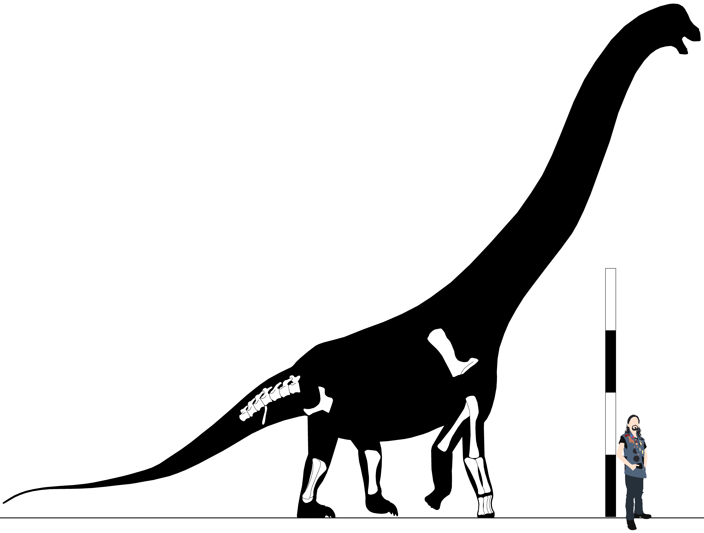
Skeletal reconstruction of Aeolosaurus rionegrinus. Scale bar equals 4m.
Aeolosaurus colhuehuapensis Casal, et al. 2007
Late Cretaceous, middle to late Senonian epoch, late Campanian to early Maastrichtian stages
Upper Member, Lago Colhué Huapi Formation
Ephemeral Island, Lago Colhué Huapi, Chubut Province, Argentina
UNPSJB-Pv 959 (Holotype) - Cd3, Cd4, Cd5, Cd6, Cd7, Cd8, Cd9, Cd10, Cd11, Cd12, Cd13, Cd14, Cd15, Cd16, Cd17, Cd18, Cd19, Cd20, Cd21, Cd22, Cd23, Ch3, Ch4, Ch6, Ch7, Ch9, Ch10,
Ch11 (Casal, et al. 2007)
Diagnosis - enter
Comments - enter
Aeolosaurus sp. Salgado, Coria, & Calvo, 1997
Late Cretaceous, middle to late Senonian epoch, Campanian to Maastrichtian stages
Los Alamitos Formation
Estancia Los Alamitos, Cona Niyeu, Chubut Province, Argentina
MPCA-27100 - Cd1, Cd2, Cd3, Cd4, two partial sternal plates, partial left humerus, Mc I, Mc III, partial left femur, left tibia, left fibula, left astragalus, Mt I, Mt II, Mt III,
Mt IV (Salgado, Coria, & Calvo, 1997)
MACN #? - Cd3 (200mm), Cd4 (210mm), Cd5 (200mm), Cd6 (200mm), Cd7 (195mm), Cd8 (195mm), Cd9 (180mm), Cd10 (180mm) (Powell, 2003)
Diagnosis - enter
Comments - enter
Aeolosaurus sp. Garcia & Salgado, 2013
Late Cretaceous, middle to late Senonian epoch, middle Campanian to early Maastrichtian stages
Allen Formation, Malargüe Group
Salitral Moreno, Río Negro Province, Argentina
MPCA-Pv 27174 - Cd1, Cd2, Cd3 (155mm), Cd5 (163mm), Cd10 (150mm), left radius (390mm), right ulna (486mm), Mc III (186mm), left pubis, right ischium (572mm) (Garcia & Salgado, 2013)
MPCA-Pv 27175 - Left ulna (535mm) (Garcia & Salgado, 2013)
MPCA-Pv 27176 - Left humerus (815mm), osteoderm (Garcia & Salgado, 2013)
MPCA-Pv 27177 - Left femur (1030mm) (Garcia & Salgado, 2013)
MPCA-Pv 27178 - Mt I (Garcia & Salgado, 2013)
MPCA-Pv 27179 - Chevron (Garcia & Salgado, 2013)
MPCA-Pv 27180 - Left ulna (325mm*) (Garcia & Salgado, 2013)
Diagnosis - enter
Comments - enter
Genus Arrudatitan Silva Junior, et al. 2021
Arrudatitan maximus Santucci & Arruda-Campos, 2011
=Aeolosaurus maximus Santucci & Arruda-Campos, 2011
Late Cretaceous, middle Senonian epoch, Campanian stage
Angostura Colorado Formation
Casa de Piedra, Estancia Maquinchao, Río Negro Province, Argentina
MPMA 12-0001-97 (Holotype) - Two fragmentary posterior cervicals, cervical ribs, fragmentary dorsals, dorsal ribs, Cd4 (263mm), Cd5 (255mm), Cd6 (240mm), Cd7 (204mm), Cd8 (220mm),
Cd9 (225mm), mid-caudal centrum, two posterior caudals, eight chevrons (365*, 382, 165, 113mm), fragmentary scapula, partial humeri (630*, 890mm*), partial radius (560mm*), left
ischium, femora (1550mm), fragments
Diagnosis - enter
Comments - enter
Genus Maxakalisaurus Kellner, et al. 2006
Maxakalisaurus topai Kellner, et al. 2006
Late Cretaceous, middle Senonian epoch, Santonian to Campanian stages
Adamantina Formation
Serra da Boa Vista, Minas Gerais State, Brazil
MN 5013-V (Holotype) - Maxilla, twelve cervicals, cervical ribs, seven dorsals, dorsal ribs, sacral, six caudals, chevrons, scapulae, sternal plates, humeri, Mc II, Mc IV,
distal ischium, fibula, osteoderm, fragments
MBC-38-PV - Teeth (França, et al. 2016)
MBC-42-PV - Partial dentary (82mm*) (França, et al. 2016)
MN 7048-V - Distal right scapula (França, et al. 2016)
MN 7049-V - Sternal plate (França, et al. 2016)
MN 7050-V- Sternal plate (França, et al. 2016)
Diagnosis - enter
Comments - enter
Genus Overosaurus Coria, et al. 2013
Overosaurus paradasorum Coria, et al. 2013
Late Cretaceous, middle Senonian epoch, late Santonian stage
Bajo de la Carpa Formation
Cerro Overo, Rincón de los Sauces, Neuquén Province, Argentina
MAU-Pv-OC-439 (Holotype) (Total length 9.28m) - Cv10 (345mm**), Cv11 (335mm**), Cv12 (310mm**), Cv13 (220mm**), D1 (140mm**), D2 (130mm**), D3 (135mm), D4 (235mm**), D5 (140mm**),
D6 (150mm**), D7 (130mm**), D8 (125mm**), D9 (125mm**), D10 (105mm**), Dr1 (550*, 730mm), Dr2 (665*, 830mm), Dr3 (860, 930mm), Dr4 (780m*, 1100mm), Dr7 (730*, 905mm), Dr8 (870mm),
Dr10 (245mm*), dorsosacral rib (100*, 375mm*), sacrum (505mm), Cd1 (110mm), Cd2 (110mm), Cd3 (115mm), Cd4 (110mm), Cd5 (110mm), Cd6 (110mm), Cd7 (105mm), Cd8 (90mm), Cd9 (90mm),
Cd10 (85mm), Cd11 (85mm), Cd12 (85mm), Cd13 (80mm), Cd14 (80mm), Cd15 (80mm), Cd16 (80mm), Cd17 (75mm), Cd18 (75mm), Cd19 (75mm), Cd20 (75mm), ilia (545mm) (Coria, et al.
2013)
Diagnosis - enter
Comments - This is an extremely important aeolosaurine, as it is one of the few that preserves all areas of the axial skeleton, allowing clear elucidation of the
proportions of this clade. The specimen also shows both the reduced tail & significantly downturned caudal series is legitimate. Though the ribcage is not completely preserved,
enough of the dorsal ribs are found & well preserved enough to help elucidate the proportions of the ribcage, & the overall shape & proportions relative to the pelvis are very
reminiscent of that seen in other somphospondylians like Futalognkosaurus & Tambatitanis. This would strongly suggest that somphospondylian ribcages in general are very
wide relative to other sauropods.
Overosaurus was originally described as being from the Anacleto formation, but later research suggests the type locality actually derives from the Bajo de la Carpa
formation (Filippi, Barrios, & Garrido, 2018).

Skeletal reconstruction of Overosaurus paradasorum. Scale bar equals 2m.
Genus Punatitan Hechenleitner, et al. 2020
Punatitan coughlini Hechenleitner, et al. 2020
Late Cretaceous, late Senonian epoch, Maastrichtian stage
Upper Member, Ciénaga del Río Huaco Formation
Quebrada Santo Domingo, La Rioja Province, Argentina
CRILAR-Pv 614 (Holotype) - Cv12 (85mm*), D6 (207mm), D7, dorsal ribs, partial sacrum, Cd4, Cd5 (90mm**), Cd6 (80mm**), Cd7 (80mm**), Cd8 (80mm**), Cd9 (85mm**), Cd10 (85mm**),
Cd11 (90mm**), Cd12 (85mm**), Cd13 (85mm**), Cd14 (80mm**), Cd15 (80mm**), Cd16, twelve chevrons, left ischium, right pubis (Hechenleitner, et al. 2020)
Diagnosis - enter
Comments - enter
Clade Trigonosauria nov.
Definition - enter
Diagnosis - Dorsals with sharp square-cut prezygapophyses (1); long rod-shaped diapophyses (2); rhomboid parapophyses placed proximally on the vertebrae (3), well above
the centrum (4).
Comments - enter
Genus Ampelosaurus Le Loeuff, 1995
Ampelosaurus atacis Le Loeuff, 1995
Late Cretaceous, middle to late Senonian epoch, late Campanian to early Maastrichtian stage
Marnes de la Maurine Member, Marnes Rouges Inférieures Formation
Bellevue, Aude Valley, Aude, Occitanie, France
MDE-C3-247 (Holotype) - Three dorsals
MDE-C3-1 - Humerus (Le Loeuff, 1995)
MDE-C3-20 - femur (Le Loeuff, 1995)
MDE-C3-21 - Right scapula (720mm) (Le Loeuff, 1995)
MDE-C3-22 - Right coracoid (Le Loeuff, 1995)
MDE-C3-24 - Caudal (Le Loeuff, 1995)
MDE-C3-25 - Caudal (Le Loeuff, 1995)
MDE-C3-26 - Caudal (Le Loeuff, 1995)
MDE-C3-27 - Caudal (Le Loeuff, 1995)
MDE-C3-38 - Dorsal (Le Loeuff, 1995)
MDE-C3-40 - femur (Le Loeuff, 1995)
MDE-C3-44 - femur (Le Loeuff, 1995)
MDE-C3-46 - Caudal (Le Loeuff, 1995)
MDE-C3-48 - Left fibula (Le Loeuff, 2005)
MDE-C3-52 - Tooth (Le Loeuff, 2005)
MDE-C3-55 - Caudal (Le Loeuff, 1995)
MDE-C3-56 - ulna (Le Loeuff, 1995)
MDE-C3-57 - Pubis (750mm) (Le Loeuff, 1995)
MDE-C3-58 - Cd5, Cd6, Cd7, Cd8 (Le Loeuff, 2005)
MDE-C3-59 - Dorsal (Le Loeuff, 1995)
MDE-C3-60 - Dorsal ribs (Le Loeuff, 1995)
MDE-C3-61 - femur (Le Loeuff, 1995)
MDE-C3-63 - Caudal (Le Loeuff, 1995)
MDE-C3-64 - Caudal (Le Loeuff, 1995)
MDE-C3-65 - Caudal (Le Loeuff, 1995)
MDE-C3-72 - Chevron (Le Loeuff, 1995)
MDE-C3-78 - Partial femur (1000mm*) (Le Loeuff, 1995)
MDE-C3-79 - humerus (Le Loeuff, 1995)
MDE-C3-80 - Sternal plate (Le Loeuff, 1995)
MDE-C3-81 - humerus (Le Loeuff, 1995)
MDE-C3-83 - ulna (Le Loeuff, 1995)
MDE-C3-84 - Left pubis (Le Loeuff, 2005)
MDE-C3-85 - radius (Le Loeuff, 1995)
MDE-C3-86 - Left humerus (630mm) (Le Loeuff, 2005)
MDE-C3-87 - Right femur (Le Loeuff, 2005)
MDE-C3-88 - Pedal phalanges (Le Loeuff, 1995)
MDE-C3-92 - Dorsal (Le Loeuff, 1995)
MDE-C3-93 - Dorsal (Le Loeuff, 1995)
MDE-C3-94 - Dorsal (Le Loeuff, 1995)
MDE-C3-95 - Caudal (Le Loeuff, 1995)
MDE-C3-96 - Caudal (Le Loeuff, 1995)
MDE-C3-97 - Caudal (Le Loeuff, 1995)
MDE-C3-98 - Caudal (Le Loeuff, 1995)
MDE-C3-99 - Caudal (Le Loeuff, 1995)
MDE-C3-100 - Caudal (Le Loeuff, 1995)
MDE-C3-101 - Caudal (Le Loeuff, 1995)
MDE-C3-101 - Posterior caudal (Le Loeuff, 2005)
MDE-C3-102 - Partial right radius (Le Loeuff, 2005)
MDE-C3-123 - Ilium (Le Loeuff, 1995)
MDE-C3-124 - Caudal (Le Loeuff, 1995)
MDE-C3-127 - Caudal (Le Loeuff, 1995)
MDE-C3-136 - Osteoderm (Le Loeuff, 1995)
MDE-C3-137 - Right tibia, right fibula (Le Loeuff, 2005)
MDE-C3-138 - Right tibia (Le Loeuff, 2005)
MDE-C3-139 - Chevron (Le Loeuff, 1995)
MDE-C3-143 - Partial femur (420mm*)
MDE-C3-144 - tibia (Le Loeuff, 1995)
MDE-C3-145 - Scapula (Le Loeuff, 1995)
MDE-C3-147 - Caudal (Le Loeuff, 1995)
MDE-C3-148 - Dorsal (Le Loeuff, 1995)
MDE-C3-161 - Coracoid (Le Loeuff, 1995)
MDE-C3-173 - tibia (Le Loeuff, 1995)
MDE-C3-174 - Partial femur (690mm*) (Klein, et al. 2012)
MDE-C3-175 - Humerus (700mm) (Le Loeuff, 1995)
MDE-C3-192 - Osteoderm (Le Loeuff, 2005)
MDE-C3-201 - femur (Le Loeuff, 1995)
MDE-C3-203 - Femur (780mm) (Le Loeuff, 1995)
MDE-C3-204 - Osteoderm (Le Loeuff, 1995)
MDE-C3-205 - Osteoderm (Le Loeuff, 1995)
MDE-C3-238 - Partial humerus (340mm*) (Klein, et al. 2012)
MDE-C3-261 - femur (840mm) (Le Loeuff, 1995)
MDE-C3-265 - Posterior cervical (180mm) (Le Loeuff, 2005)
MDE-C3-270 - Partial humerus (180mm*) (Klein, et al. 2012)
MDE-C3-300 - ulna (Le Loeuff, 1995)
MDE-C3-312 - Humerus (Le Loeuff, 1995)
MDE-C3-335 - Anterior cervical (290mm) (Le Loeuff, 2005)
MDE-C3-351 - Left coracoid (Le Loeuff, 2005)
MDE-C3-396 - Partial dentary (Le Loeuff, 2005)
MDE-C3-527 - Femur (680mm) (Klein, et al. 2012)
MDE-C3-582 - Partial femur (635mm*) (Klein, et al. 2012)
MDE-C3-594 - Right ischium (Le Loeuff, 2005)
MDE-C3-602 - Partial humerus (350mm*) (Klein, et al. 2012)
MDE-C3-638 - Partial femur (605mm*) (Klein, et al. 2012)
MDE-C3-708 - Partial femur (400mm*) (Klein, et al. 2012)
MDE-C3-761 - Partial skull (Le Loeuff, 2005)
MDE-C3-977 - Partial humerus (190mm*) (Klein, et al. 2012)
MDE-C3-1000 - Right astragalus (Le Loeuff, 2005)
MDE-C3-1009 - Mid-posterior caudal (Le Loeuff, 2005)
MDE-C3-1043 - Left scapula (910mm) (Le Loeuff, 2005)
MDE-C3-1182 - Left femur (695mm) (Le Loeuff, 2005)
MDE-C3-1189 - Partial humerus (320mm*) (Klein, et al. 2012)
MDE-C3-1195 - Right ischium (Le Loeuff, 2005)
MDE-C3-1238 - Left ulna (725mm) (Le Loeuff, 2005)
MDE-C3-1239 - Partial femur (556mm*) (Klein, et al. 2012)
MDE-C3-1296 - Right ulna (Le Loeuff, 2005)
MDE-C3-1303 - Right tibia (Le Loeuff, 2005)
MDE-C3-1469 - Partial S3, partial S4 (Le Loeuff, 2005)
MDE-C3-1470 - Cd1 (Le Loeuff, 2005)
MDE-C3-1471 - Cd3, Cd4 (Le Loeuff, 2005)
MDE-C3-1472 - Cd2 (Le Loeuff, 2005)
MDE-C3-1490 - Right ulna (395mm) (Le Loeuff, 2005)
MDE-C3 #? - Sternal plate, metacarpals, fragmentary ilia, left pubis, metatarsals (Le Loeuff, 2005)
Narbonne, Aude Valley, Aude, Occitanie, France
MDE-Cru-1 - Partial humerus (600mm*) (Klein, et al. 2012)
MDE-Cru-2 - Femur (630mm) (Klein, et al. 2012)
MDE-Cru-3 - Partial femur (480mm*) (Klein, et al. 2012)
MDE-Cru-4 - Partial femur (550mm*) (Klein, et al. 2012)
MDE-Cru-5 - femur (890mm) (Klein, et al. 2012)
MDE-Cru-6 - Partial femur (620mm*) (Klein, et al. 2012)
Diagnosis - enter
Comments - enter
Genus Atsinganosaurus Garcia, et al. 2010
Atsinganosaurus velauciensis Garcia, et al. 2010
Late Cretaceous, middle Senonian epoch, late Campanian stage
Argiles et Grès à Reptiles Formation
La Bastide Neuve, Velaux, Aix-en-Provence Basin, Bouches-du-Rhône, Provence-Alpes-Côte d'Azur Region, France
UP/VBN.93.01 (Holotype) - Four posterior dorsals (Garcia, et al. 2010)
MMS/VBN.00.01 - Caudal (Díez Díaz, et al. 2018)
MMS/VBN.00.02 - Caudal (Díez Díaz, et al. 2018)
MMS/VBN.00.03 - Caudal (Díez Díaz, et al. 2018)
MMS/VBN.00.12 - Right humerus (555mm), femur (709mm) (Díez Díaz, et al. 2018)
MMS/VBN.00.14 - Anterior caudal (91mm) (Díez Díaz, et al. 2018)
MMS/VBN.00.15 - Anterior caudal (83mm) (Díez Díaz, et al. 2018)
MMS/VBN.02.03 - Tooth (Díez Díaz, et al. 2018)
MMS/VBN.02.22 - Tooth (Díez Díaz, et al. 2018)
MMS/VBN.02.53 - Tooth (Díez Díaz, et al. 2018)
MMS/VBN.02.78 - Left scapulocoracoid (Garcia, et al. 2010)
MMS/VBN.02.82 - Partial sacrum (Garcia, et al. 2010)
MMS/VBN.02.90 - Left tibia (322mm) (Díez Díaz, et al. 2018)
MMS/VBN.02.99 - Dorsal (127mm) (Díez Díaz, et al. 2018)
MMS/VBN.02.109 - Tibia (530mm) (Díez Díaz, et al. 2018)
MMS/VBN.02.110 - Caudal (Díez Díaz, et al. 2018)
MMS/VBN.09.41 - Occipital condyle (Díez Díaz, et al. 2018)
MMS/VBN.09.46 - Anterior caudal (85mm) (Díez Díaz, et al. 2018)
MMS/VBN.09.51 - Two cervical ribs, right ischium (345mm) (Díez Díaz, et al. 2018)
MMS/VBN.09.54 - Anterior caudal (102mm) (Díez Díaz, et al. 2018)
MMS/VBN.09.66 - Sacral rib (Díez Díaz, et al. 2018)
MMS/VBN.09.113 - Left Mc I (180mm) (Díez Díaz, et al. 2018)
MMS/VBN.09.124D - Fragmentary right scapula (Díez Díaz, et al. 2018)
MMS/VBN.09.126 - Partial right femur (562mm*) (Díez Díaz, et al. 2018)
MMS/VBN.09.132 - Proximal fibula (221mm*) (Díez Díaz, et al. 2018)
MMS/VBN.09.158 - Left pterygoid (Díez Díaz, et al. 2018)
MMS/VBN.09.159 - Posterior caudal (97mm) (Díez Díaz, et al. 2018)
MMS/VBN.09.167 - Fragmentary braincase (Díez Díaz, et al. 2018)
MMS/VBN.09.A.018 - Left humerus (480mm) (Díez Díaz, et al. 2018)
MMS/VBN.09.D.001 - Fragmentary radius (272mm*) (Díez Díaz, et al. 2018)
MMS/VBN.09.D.003 - Posterior caudal (97mm) (Díez Díaz, et al. 2018)
MMS/VBN.09.D.007 - Anterior cervical (195mm), two dorsal ribs (585*, 560mm*) (Díez Díaz, et al. 2018)
MMS/VBN.09.D.009 - Anterior-mid caudal (94mm) (Díez Díaz, et al. 2018)
MMS/VBN.09.D.010 - Posterior caudal (Díez Díaz, et al. 2018)
MMS/VBN.09.D.011 - Anterior-mid caudal (Díez Díaz, et al. 2018)
MMS/VBN.12.32 - Fragmentary right ilium (Díez Díaz, et al. 2018)
MMS/VBN.12.33 - Posterior caudal (113mm) (Díez Díaz, et al. 2018)
MMS/VBN.12.A.004 - Anterior cervical (352.5mm) (Díez Díaz, et al. 2018)
MMS/VBN.12.A.006 - Tooth (190mm) (Díez Díaz, et al. 2018)
MMS/VBN.12.A.007 - Tooth (160mm) (Díez Díaz, et al. 2018)
MMS/VBN.12.B.010 - Posterior cervical (185mm) (Díez Díaz, et al. 2018)
MMS/VBN.12.B.013 - Two posterior caudals (121, 123mm) (Díez Díaz, et al. 2018)
MMS/VBN.12.B.014 - Tooth (180mm) (Díez Díaz, et al. 2018)
MMS/VBN.12.B.015 - Anterior cervical (330mm) (Díez Díaz, et al. 2018)
MMS/VBN.12.B.018 - Anterior-mid caudal (103mm**) (Díez Díaz, et al. 2018)
MMS/VBN.12.C.003 - Posterior caudal (125mm) (Díez Díaz, et al. 2018)
MMS/VBN.12.C.004 - Anterior caudal (90mm) (Díez Díaz, et al. 2018)
MMS/VBN.12.P.006 - Right ulna (390mm) (Díez Díaz, et al. 2018)
MMS/VBN.93.31 - Anterior caudal (86mm), two chevrons (Díez Díaz, et al. 2018)
MMS/VBN.93.32 - Anterior dorsal neural arch, posterior caudal
MMS/VBN.93.33 - Tooth (150mm) (Díez Díaz, et al. 2018)
UP/VBN.09.157 - Dorsal centrum (Díez Díaz, et al. 2018)
UP/VBN.93.02 - Fragmentary mid-posterior dorsal (Díez Díaz, et al. 2018)
UP/VBN.93.03 - Posterior caudal (90mm) (Díez Díaz, et al. 2018)
UP/VBN.93.04 - Posterior caudal (74mm**) (Díez Díaz, et al. 2018)
UP/VBN.93.05 - Caudal (99mm) (Díez Díaz, et al. 2018)
UP/VBN.93.06 - Caudal (76mm) (Díez Díaz, et al. 2018)
UP/VBN.93.07 - Caudal (75mm) (Díez Díaz, et al. 2018)
UP/VBN.93.08 - Caudal (71mm) (Díez Díaz, et al. 2018)
UP/VBN.93.09 - Mc I (87mm) (Díez Díaz, et al. 2018)
UP/VBN.93.10 - Left Mt I (120mm) (Díez Díaz, et al. 2018)
UP/VBN.93.11 - Scapula (Díez Díaz, et al. 2018)
UP/VBN.93.12 - Three posterior cervicals (255, 280, 220mm**) (Díez Díaz, et al. 2018)
UP/VBN.93.13 - Two mid-posterior cervicals (220, 230mm) (Díez Díaz, et al. 2018)
VBN.93.MNHA.99.21 - Tooth (Díez Díaz, et al. 2018)
VBN.93.MNHA.99.32 - Caudal (Díez Díaz, et al. 2018)
VBN.93.MNHA.99.33 - Caudal (Díez Díaz, et al. 2018)
VBN.93.MNHA.99.34 - Caudal (Díez Díaz, et al. 2018)
VBN.93.MNHA.99.52 - Fragmentary right humerus (Díez Díaz, et al. 2018)
Diagnosis - enter
Comments - enter
Genus Barrosasaurus Salgado & Coria, 2009
Barrosasaurus casamiquelai Salgado & Coria, 2009
Late Cretaceous, middle Senonian epoch, early Campanian stage
Anacleto Formation, Río Colorado Subgroup, Neuquén Group
Sierra Barrosa Locality, Neuquén Province, Argentina
MCF-PVPH-447 (Holotype) - D3 (170mm), D7? (270mm), D9? (230mm)
Diagnosis - enter
Comments - Anterior dorsal extremely wide, with long stalk-like diapophyses and a robust neural arch. Extensive vascularization and laminae on the dorsals. Fusion of a
rib on the posterior dorsal.
Genus Baurutitan Kellner, Campos, & Trotta, 2005
=Trigonosaurus? Campos, et al. 2005
Baurutitan britoi Kellner, Campos, & Trotta, 2005
=Trigonosaurus pricei? Campos, et al. 2005
Late Cretaceous, late Senonian epoch, Maastrichtian stage
Serra de Galga Member, Marília Formation
Peirópolis Site, Caieira, Serra do Veadinho Hill, Uberaba, Minas Gerais, Brazil
MCT 1490-R “Peirópolis Series C” (Holotype) - S6 (128mm), Cd1 (175mm), Cd2 (134mm), Cd3 (129mm), Cd4 (136mm), Cd5 (133mm), Cd6 (127mm), Cd7 (124mm*), Cd8 (115mm*), Cd9 (115mm),
Cd10 (115mm), Cd11 (112mm), Cd12 (114mm), Cd13 (113mm), Cd14 (116mm), Cd15 (117mm), Cd16 (121mm), Cd17 (121mm), Cd18 (118mm)
BR-262, Rodovia, Caieira, Serra do Veadinho Hill, Uberaba, Minas Gerais, Brazil
CPPLIP-007 - Left humerus fragment (478.6mm*) (Silva Junior, et al. 2022)
CPPLIP-008 - Right humerus (946.3mm) (Silva Junior, et al. 2022)
CPPLIP-010 - Right Mc I (269.4mm) (Silva Junior, et al. 2022)
CPPLIP-011 - Left Mt II (131.1mm) (Silva Junior, et al. 2022)
CPPLIP-014 - Cervical rib (Silva Junior, et al. 2022)
CPPLIP-035 - Mid-cervical (349.5mm) (Silva Junior, et al. 2022)
CPPLIP-036 - Anterior dorsal (129.6mm) (Silva Junior, et al. 2022)
CPPLIP-037 - Mid-dorsal (159.8mm) (Silva Junior, et al. 2022)
CPPLIP-038 - Right scapula (646.7mm) (Silva Junior, et al. 2022)
CPPLIP-039 - Mid-cervical (226.5mm*) (Silva Junior, et al. 2022)
CPPLIP-040 - Posterior cervical (154.2mm*) (Silva Junior, et al. 2022)
CPPLIP-042 - Left ischium fragment (339.8mm*) (Silva Junior, et al. 2022)
CPPLIP-043 - Posterior dorsal neural spine (Silva Junior, et al. 2022)
CPPLIP-044 - Dorsal rib fragment (Silva Junior, et al. 2022)
CPPLIP-045 - Posterior caudal (108.1mm) (Silva Junior, et al. 2022)
CPPLIP-046 - Mid-caudal (123.1mm) (Silva Junior, et al. 2022)
CPPLIP-047 - Mid-caudal (113.4mm) (Silva Junior, et al. 2022)
CPPLIP-049 - Posterior cervical (187.3mm*) (Silva Junior, et al. 2022)
CPPLIP-054 - Left Mt III (157.8mm) (Silva Junior, et al. 2022)
CPPLIP-055 - Chevron (219.5mm*) (Silva Junior, et al. 2022)
CPPLIP-056 - Chevron (145.3mm*) (Silva Junior, et al. 2022)
CPPLIP-057 - Chevron (Silva Junior, et al. 2022)
CPPLIP-067 - Mid-caudal (101.2mm) (Silva Junior, et al. 2022)
CPPLIP-069 - Right ischium (645.7mm) (Silva Junior, et al. 2022)
CPPLIP-091 - Posterior caudal (134.4mm) (Silva Junior, et al. 2022)
CPPLIP-093 - Mid-caudal (102mm) (Silva Junior, et al. 2022)
CPPLIP-094 - Posterior caudal (134.3mm) (Silva Junior, et al. 2022)
CPPLIP-095 - Posterior caudal (125.5mm) (Silva Junior, et al. 2022)
CPPLIP-096 - Mid-caudal (115.1mm) (Silva Junior, et al. 2022)
CPPLIP-097 - Dorsal rib fragment (Silva Junior, et al. 2022)
CPPLIP-098 - Chevron (226.6mm) (Silva Junior, et al. 2022)
CPPLIP-099 - Chevron (203.3mm*) (Silva Junior, et al. 2022)
CPPLIP-100 - Chevron (Silva Junior, et al. 2022)
CPPLIP-102 - Anterior caudal (127.2mm) (Silva Junior, et al. 2022)
CPPLIP-103 - Mid-dorsal (158.5mm) (Silva Junior, et al. 2022)
CPPLIP-108 - Dorsal rib fragment (Silva Junior, et al. 2022)
CPPLIP-109 - Chevron (213.5mm*) (Silva Junior, et al. 2022)
CPPLIP-110 - Anterior dorsal (126.9mm) (Silva Junior, et al. 2022)
CPPLIP-111 - Mid-dorsal (168.2mm) (Silva Junior, et al. 2022)
CPPLIP-112 - Chevron (228.9mm*) (Silva Junior, et al. 2022)
CPPLIP-138 - Right sternal plate (461.9mm) (Silva Junior, et al. 2022)
CPPLIP-140 - Right coracoid (268.3mm*) (Silva Junior, et al. 2022)
CPPLIP-188 - Chevron (Silva Junior, et al. 2022)
CPPLIP-263 - Proximal left humerus (640.9mm*) (Silva Junior, et al. 2022)
CPPLIP-458 - Mid-dorsal (104.9mm) (Silva Junior, et al. 2022)
Diagnosis - enter
Comments - Silva Junior, et al. (2022) described a series of specimens from site BR-262, which show similarities to the holotypes of both Baurutitan &
Trigonosaurus, & as such they synonymized the two. However, as Silva Junior, et al. note there are differences between the Rodovia & Peirópolis elements, & despite the
minimal overlap the holotypes of B. britoi & T. pricei also differ in the last sacral, which is posteriorly concave in Baurutitan, whereas in Trigonosaurus
it's convex as in most other titanosaurs. Due to differences between these & the Rodovia elements, I tentatively retain Baurutitan, Caieiria, Trigonosaurus, & the Rodovia
remains separately until further material is found that conclusively shows one way or the other.
Genus Bonatitan Martinelli & Forasiepi, 2004
Bonatitan reigi Martinelli & Forasiepi, 2004
Late Cretaceous, middle Senonian epoch, late Campanian stage
Lower Member, Allen Formation
Bajo de Santa Rosa Locality, Río Negro Province, Argentina
MACN-Pv RN 821 (In part; holotype) - Braincase (Salgado, Gallina, & Carabajal, 2014)
MACN-Pv RN 821 (In part) - Mid-dorsal neural arch, dorsal centrum (230mm*), sacral rib, anterior caudal (210mm), mid-caudal neural arch, left humerus (363mm), Mc I, Mc IV (185mm),
femora (585mm), tibiae (373mm), left fibula (385mm), left astragalus, Mt III (Salgado, Gallina, & Carabajal, 2014)
MACN-Pv RN 1061 - Braincase, cervical centrum (122mm), Mc I (195mm), Mc V, right femur (455mm), left tibia (300mm), astrgalus, Mt I, Mt III (47mm) (Salgado, Gallina, & Carabajal,
2014)
MACN-Pv RN #? - Distal caudal (20mm), six chevrons, Mt I (76mm), Mt III, Mt V, ungual phalanx (Salgado, Gallina, & Carabajal, 2014)
Diagnosis - enter
Comments - Has an unusually steep V-shaped tilt to its anterior dorsal diapophyses, which are otherwise typical of the stalk-like shape they take in trigonosaurs, with
the parapophyses jutting down as hanging pylons on their ventral surface.
Genus Bravasaurus Hechenleitner, et al. 2020
Bravasaurus arrierosorum Hechenleitner, et al. 2020
Late Cretaceous, middle Senonian epoch, late Campanian stage
Lower Member, Ciénaga del Río Huaco Formation
Quebrada Santo Domingo, La Rioja Province, Argentina
CRILAR-Pv 612 (Holotype) - Right quadrate, right quadratojugal, Cv3 (155mm), Cv5 (165mm), Cv6 (190mm), Cv7 (210mm), D2, D7 (135mm*), D8, D9, D10, dorsal ribs, Cd11 (90mm), Cd24
(83mm), Cd25 (80mm), three chevrons, left humerus (530mm), fragmentary ulna, Mc IV (190mm), partial left ilium, partial ischium, right pubis (475mm), left femur (680mm), fibulae
(487mm) (Hechenleitner, et al. 2020)
CRILAR-Pv 613 (Paratype) - Tooth, dorsal ribs, right ilium, right femur (Hechenleitner, et al. 2020)
Diagnosis - enter
Comments - enter
Genus Caieiria Silva Junior, et al. 2022
Caieiria allocaudata Silva Junior, et al. 2022
Late Cretaceous, late Senonian epoch, Maastrichtian stage
Serra de Galga Member, Marília Formation
Peirópolis Site, Caieira, Serra do Veadinho Hill, Uberaba, Minas Gerais, Brazil
MCT 1719-R (Holotype) - Cd2 (94.5mm), Cd3 (96mm), Cd5 (90.5mm), Cd6 (96mm), Cd9 (89.5mm), Cd12 (85.7mm), Cd14 (79.5mm), Cd16 (72.5mm), Cd18 (76mm), Cd20 (75.1mm)
Diagnosis - enter
Comments - Originally referred to Trigonosaurus, Silva Junior, et al. (2022) showed this referral was faulty, & separated MCT 1719-R from T. pricei,
which they lumped into Baurutitan britoi.
Genus Garrigatitan Díez Díaz, et al. 2020
Garrigatitan meridionalis Díez Díaz, et al. 2020
Late Cretaceous, middle Senonian epoch, late Campanian stage
Begudian Sandstones
La Bastide Neuve, Velaux, Aix-en-Provence Basin, Bouches-du-Rhône, France
MMS/VBN.09.170 (Holotype) - Sacrum (500mm*), ilium
MMS/VBN.00.13 (Paratype) - Femur (810mm*)
MMS/VBN.02.99 (Paratype) - Posterior cervical (610mm*)
MMS/VBN.02.107 (Paratype) - Mc I (310mm)
MMS/VBN.09.A.016 (Paratype) - Humerus (590mm*)
MMS/VBN.09.A.017 (Paratype) - Ulna (660mm*)
MMS/VBN.09.47 (Paratype) - Humerus (482mm*)
MMS/VBN.12.18 (Paratype) - Mc I? (300mm*)
MMS/VBN.12.82 (Paratype) - Humerus (610mm*)
MMS/VBN.12B.011 (Paratype) - Cervical rib
MMS/VBN.12B.12 (Paratype) - Ilium, ischium (485mm*)
Diagnosis - enter
Comments - enter
Genus Gondwanatitan Kellner & Azevedo, 1999
Gondwanatitan faustoi Kellner & Azevedo, 1999
Late Cretaceous, middle Senonian epoch, Santonian to Campanian stages
Adamantina Formation
Sítio Myzobuchi, Álvares Machado, São Paulo, Brazil
MN 4111-V (Holotype) - Two cervicals, seven dorsals, ribs, sacrum, 24 caudals, four partial chevrons, four fragmentary vertebrae, proximal left scapula, humeri, partial left
ilium, partial ischia, partial pubes, tibiae, fragments
Diagnosis - enter
Comments - enter
Genus Muyelensaurus Calvo, González-Riga, & Porfiri, 2007
Muyelensaurus pecheni Calvo, González-Riga, & Porfiri, 2007
Late Cretaceous, middle Senonian epoch, Santonian stage
Plottier Formation
Loma del Lindero Site, Neuquén Province, Argentina
MRS-Pv 207 (Holotype) - Braincase
MRS-Pv 50 (Paratype) - Metatarsal
MRS-Pv 51 (Paratype) - Metatarsal
MRS-Pv 52 (Paratype) - Mt (Calvo, González-Riga, & Porfiri, 2007)
MRS-Pv 53 (Paratype) - Mt (Calvo, González-Riga, & Porfiri, 2007)
MRS-Pv 54 (Paratype) - Mt (Calvo, González-Riga, & Porfiri, 2007)
MRS-Pv 55 (Paratype) - PP (Calvo, González-Riga, & Porfiri, 2007)
MRS-Pv 56 (Paratype) - PP (Calvo, González-Riga, & Porfiri, 2007)
MRS-Pv 57 (Paratype) - PP (Calvo, González-Riga, & Porfiri, 2007)
MRS-Pv 58 (Paratype) - PP (Calvo, González-Riga, & Porfiri, 2007)
MRS-Pv 59 (Paratype) - Premaxilla (Calvo, González-Riga, & Porfiri, 2007)
MRS-Pv 60 (Paratype) - Premaxilla (Calvo, González-Riga, & Porfiri, 2007)
MRS-Pv 65 (Paratype) - Cervical (Calvo, González-Riga, & Porfiri, 2007)
MRS-Pv 66 (Paratype) - Cervical (Calvo, González-Riga, & Porfiri, 2007)
MRS-Pv 67 (Paratype) - Dorsal (Calvo, González-Riga, & Porfiri, 2007)
MRS-Pv 68 (Paratype) - Dorsal (Calvo, González-Riga, & Porfiri, 2007)
MRS-Pv 70 (Paratype) - Humerus (Calvo, González-Riga, & Porfiri, 2007)
MRS-Pv 71 (Paratype) - Radius (Calvo, González-Riga, & Porfiri, 2007)
MRS-Pv 72 (Paratype) - Ulna (Calvo, González-Riga, & Porfiri, 2007)
MRS-Pv 88 (Paratype) - Pubis (Calvo, González-Riga, & Porfiri, 2007)
MRS-Pv 89 (Paratype) - Ilium, femur (Calvo, González-Riga, & Porfiri, 2007)
MRS-Pv 90 (Paratype) - Fibula (Calvo, González-Riga, & Porfiri, 2007)
MRS-Pv 91 (Paratype) - Femur (Calvo, González-Riga, & Porfiri, 2007)
MRS-Pv 121 (Paratype) - Cervical (Calvo, González-Riga, & Porfiri, 2007)
MRS-Pv 122 (Paratype) - Cervical (Calvo, González-Riga, & Porfiri, 2007)
MRS-Pv 123 - Posterior dorsal (Calvo, González-Riga, & Porfiri, 2007)
MRS-Pv 125 (Paratype) - Sternal plate (Calvo, González-Riga, & Porfiri, 2007)
MRS-Pv 127 (Paratype) - Mc (Calvo, González-Riga, & Porfiri, 2007)
MRS-Pv 128 (Paratype) - Mt (Calvo, González-Riga, & Porfiri, 2007)
MRS-Pv 131 (Paratype) - Ilium (Calvo, González-Riga, & Porfiri, 2007)
MRS-Pv 132 (Paratype) - Humerus (Calvo, González-Riga, & Porfiri, 2007)
MRS-Pv 134 (Paratype) - Ilium (Calvo, González-Riga, & Porfiri, 2007)
MRS-Pv 135 (Paratype) - Caudal (Calvo, González-Riga, & Porfiri, 2007)
MRS-Pv 137 (Paratype) - Caudal (Calvo, González-Riga, & Porfiri, 2007)
MRS-Pv 139 (Paratype) - Radius (Calvo, González-Riga, & Porfiri, 2007)
MRS-Pv 141 (Paratype) - Mt (Calvo, González-Riga, & Porfiri, 2007)
MRS-Pv 142 (Paratype) - Mt (Calvo, González-Riga, & Porfiri, 2007)
MRS-Pv 143 (Paratype) - PP (Calvo, González-Riga, & Porfiri, 2007)
MRS-Pv 144 (Paratype) - PP (Calvo, González-Riga, & Porfiri, 2007)
MRS-Pv 145 (Paratype) - PP (Calvo, González-Riga, & Porfiri, 2007)
MRS-Pv 146 (Paratype) - PP (Calvo, González-Riga, & Porfiri, 2007)
MRS-Pv 147 (Paratype) - PP (Calvo, González-Riga, & Porfiri, 2007)
MRS-Pv 152 (Paratype) - Mc (Calvo, González-Riga, & Porfiri, 2007)
MRS-Pv 154 (Paratype) - Pubis (Calvo, González-Riga, & Porfiri, 2007)
MRS-Pv 157 (Paratype) - Mc (Calvo, González-Riga, & Porfiri, 2007)
MRS-Pv 161 (Paratype) - Tibia (Calvo, González-Riga, & Porfiri, 2007)
MRS-Pv 162 (Paratype) - Tibia (Calvo, González-Riga, & Porfiri, 2007)
MRS-Pv 164 (Paratype) - Caudal (Calvo, González-Riga, & Porfiri, 2007)
MRS-Pv 165 (Paratype) - PP (Calvo, González-Riga, & Porfiri, 2007)
MRS-Pv 166 (Paratype) - Mt (Calvo, González-Riga, & Porfiri, 2007)
MRS-Pv 168 (Paratype) - Mt (Calvo, González-Riga, & Porfiri, 2007)
MRS-Pv 170 (Paratype) - Caudal (Calvo, González-Riga, & Porfiri, 2007)
MRS-Pv 171 (Paratype) - Caudal (Calvo, González-Riga, & Porfiri, 2007)
MRS-Pv 173 (Paratype) - Caudal (Calvo, González-Riga, & Porfiri, 2007)
MRS-Pv 174 (Paratype) - Caudal (Calvo, González-Riga, & Porfiri, 2007)
MRS-Pv 181 (Paratype) - Mc (Calvo, González-Riga, & Porfiri, 2007)
MRS-Pv 182 (Paratype) - Ulna (Calvo, González-Riga, & Porfiri, 2007)
MRS-Pv 187 (Paratype) - Astragalus (Calvo, González-Riga, & Porfiri, 2007)
MRS-Pv 189 (Paratype) - Caudal (Calvo, González-Riga, & Porfiri, 2007)
MRS-Pv 190 (Paratype) - Caudal (Calvo, González-Riga, & Porfiri, 2007)
MRS-Pv 193 (Paratype) - Caudal (Calvo, González-Riga, & Porfiri, 2007)
MRS-Pv 198 (Paratype) - Mc (Calvo, González-Riga, & Porfiri, 2007)
MRS-Pv 199 (Paratype) - Ilium (Calvo, González-Riga, & Porfiri, 2007)
MRS-Pv 200 (Paratype) - Caudal (Calvo, González-Riga, & Porfiri, 2007)
MRS-Pv 202 (Paratype) - Ilium (Calvo, González-Riga, & Porfiri, 2007)
MRS-Pv 203 - Posterior dorsal (Calvo, González-Riga, & Porfiri, 2007)
MRS-Pv 204 (Paratype) - Cervical, pubis (Calvo, González-Riga, & Porfiri, 2007)
MRS-Pv 209 (Paratype) - Caudal (Calvo, González-Riga, & Porfiri, 2007)
MRS-Pv 212 (Paratype) - Humerus (Calvo, González-Riga, & Porfiri, 2007)
MRS-Pv 214 (Paratype) - Caudal (Calvo, González-Riga, & Porfiri, 2007)
MRS-Pv 224 (Paratype) - Dorsal (Calvo, González-Riga, & Porfiri, 2007)
MRS-Pv 229 (Paratype) - Cervical (Calvo, González-Riga, & Porfiri, 2007)
MRS-Pv 230 (Paratype) - Cervical (Calvo, González-Riga, & Porfiri, 2007)
MRS-Pv 231 (Paratype) - Mc (Calvo, González-Riga, & Porfiri, 2007)
MRS-Pv 232 (Paratype) - Cervical (Calvo, González-Riga, & Porfiri, 2007)
MRS-Pv 235 (Paratype) - Mc (Calvo, González-Riga, & Porfiri, 2007)
MRS-Pv 236 (Paratype) - Mc (Calvo, González-Riga, & Porfiri, 2007)
MRS-Pv 237 (Paratype) - PP (Calvo, González-Riga, & Porfiri, 2007)
MRS-Pv 242 (Paratype) - Mt (Calvo, González-Riga, & Porfiri, 2007)
MRS-Pv 243 (Paratype) - Ulna (Calvo, González-Riga, & Porfiri, 2007)
MRS-Pv 245 (Paratype) - Fibula (Calvo, González-Riga, & Porfiri, 2007)
MRS-Pv 246 (Paratype) - Fibula (Calvo, González-Riga, & Porfiri, 2007)
MRS-Pv 247 (Paratype) - Ischium (Calvo, González-Riga, & Porfiri, 2007)
MRS-Pv 251 (Paratype) - Ischium (Calvo, González-Riga, & Porfiri, 2007)
MRS-Pv 252 (Paratype) - Caudal (Calvo, González-Riga, & Porfiri, 2007)
MRS-Pv 257 (Paratype) - Tibia (Calvo, González-Riga, & Porfiri, 2007)
MRS-Pv 258 (Paratype) - Fibula (Calvo, González-Riga, & Porfiri, 2007)
MRS-Pv 259 (Paratype) - Scapula (Calvo, González-Riga, & Porfiri, 2007)
MRS-Pv 266 (Paratype) - Tibia (Calvo, González-Riga, & Porfiri, 2007)
MRS-Pv 271 (Paratype) - Fibula (Calvo, González-Riga, & Porfiri, 2007)
MRS-Pv 273 (Paratype) - Mt (Calvo, González-Riga, & Porfiri, 2007)
MRS-Pv 274 (Paratype) - Mt (Calvo, González-Riga, & Porfiri, 2007)
MRS-Pv 279 (Paratype) - Cervical (Calvo, González-Riga, & Porfiri, 2007)
MRS-Pv 337 (Paratype) - Premaxilla (Calvo, González-Riga, & Porfiri, 2007)
MRS-Pv 352 (Paratype) - Humerus, femur (Calvo, González-Riga, & Porfiri, 2007)
MRS-Pv 353 (Paratype) - Ulna (Calvo, González-Riga, & Porfiri, 2007)
MRS-Pv 355 (Paratype) - Sacrum (Calvo, González-Riga, & Porfiri, 2007)
MRS-Pv 356 (Paratype) - Femur (Calvo, González-Riga, & Porfiri, 2007)
MRS-Pv 357 (Paratype) - Humerus (Calvo, González-Riga, & Porfiri, 2007)
MRS-Pv 358 (Paratype) - Femur (Calvo, González-Riga, & Porfiri, 2007)
MRS-Pv 369 (Paratype) - Fibula (Calvo, González-Riga, & Porfiri, 2007)
MRS-Pv 371 (Paratype) - Pubis (Calvo, González-Riga, & Porfiri, 2007)
MRS-Pv 375 (Paratype) - Fibula (Calvo, González-Riga, & Porfiri, 2007)
MRS-Pv 377 (Paratype) - Caudal (Calvo, González-Riga, & Porfiri, 2007)
MRS-Pv 378 (Paratype) - Mt (Calvo, González-Riga, & Porfiri, 2007)
MRS-Pv 379 (Paratype) - Mt (Calvo, González-Riga, & Porfiri, 2007)
MRS-Pv 387 (Paratype) - Humerus (Calvo, González-Riga, & Porfiri, 2007)
MRS-Pv 389 (Paratype) - Femur (Calvo, González-Riga, & Porfiri, 2007)
MRS-Pv 391 (Paratype) - Cervical (Calvo, González-Riga, & Porfiri, 2007)
MRS-Pv 392 (Paratype) - Cervical (Calvo, González-Riga, & Porfiri, 2007)
MRS-Pv 396 (Paratype) - Scapula (Calvo, González-Riga, & Porfiri, 2007)
MRS-Pv 397 (Paratype) - Scapula (Calvo, González-Riga, & Porfiri, 2007)
MRS-Pv 399 (Paratype) - Ilium (Calvo, González-Riga, & Porfiri, 2007)
MRS-Pv 404 (Paratype) - Dorsal (Calvo, González-Riga, & Porfiri, 2007)
MRS-Pv 408 (Paratype) - Caudal (Calvo, González-Riga, & Porfiri, 2007)
MRS-Pv 412 (Paratype) - Dorsal (Calvo, González-Riga, & Porfiri, 2007)
MRS-Pv 419 - Posterior dorsal (Calvo, González-Riga, & Porfiri, 2007)
MRS-Pv 420 (Paratype) - Cervical (Calvo, González-Riga, & Porfiri, 2007)
MRS-Pv 421 (Paratype) - Dorsal (Calvo, González-Riga, & Porfiri, 2007)
MRS-Pv 422 (Paratype) - Cervical (Calvo, González-Riga, & Porfiri, 2007)
MRS-Pv 428 (Paratype) - Cervical (Calvo, González-Riga, & Porfiri, 2007)
MRS-Pv 429 (Paratype) - Femur (Calvo, González-Riga, & Porfiri, 2007)
MRS-Pv 431 - Posterior dorsal (Calvo, González-Riga, & Porfiri, 2007)
Diagnosis - enter
Comments - Prezygapophyses tilted at a steeper angle than in other trigonosaurs, though with the same sharp-edged corners.
Calvo, González-Riga, & Porfiri (2007) originally assigned M. pecheni to the Portezuelo formation, but reevaluation by Garrido (2010) suggests the quarry actually belongs
to the younger Plottier formation.
Genus Trigonosaurus pricei Campos, et al. 2005
=Caieiria? Silva Junior, et al. 2022
Trigonosaurus pricei Campos, et al. 2005
=Caieiria allocaudata? Silva Junior, et al. 2022
Late Cretaceous, late Senonian epoch, Maastrichtian stage
Serra de Galga Member, Marília Formation
Peirópolis Site, Caieira, Serra do Veadinho Hill, Uberaba, Minas Gerais, Brazil
MCT 1488-R “Peirópolis Series B” (Holotype) - Cv9 (280mm), Cv10 (282mm), Cv11 (277mm), Cv12 (258mm), Cv13 (202mm), D1 (148mm), D2 (128mm), D3 (110mm),
D4 (155mm), D5 (150mm), D6 (170mm), D7 (155mm), D8 (150mm), D9 (148mm), D10 (140mm), sacrum (583mm) (Campos, et al. 2005)
MCT 1719-R? (Caieiria allocaudata holotype) - Cd2 (94.5mm), Cd3 (96mm), Cd5 (90.5mm), Cd6 (96mm), Cd9 (89.5mm), Cd12 (85.7mm), Cd14 (79.5mm), Cd16 (72.5mm), Cd18 (76mm),
Cd20 (75.1mm)
Diagnosis - enter
Comments - Silva Junior, et al. (2022) described a set of remains from the Rodovia Site nearby the original Peirópolis Site that they believed to mostly pertain to
a single individual, which shares characters with both Baurutitan & Trigonosaurus, thus synonymizing the two. While there is very minimal overlap between the two holotypes,
there are differences, most notably that the last sacral of Trigonosaurus is convex as in most titanosaurs, while that of Baurutitan is concave, as the first caudal
of that taxon is biconvex rather than procoelous (Vidal, et al. 2024). Additionally, the material from the Rodovia site may not be as easily sortable as Silva Junior, et al.
make it out to be, as they note there are at least three humeri at the site (one of which much larger than the others), therefore it is possible that the Rodovia site it a
multitaxic bonebed as at Peirópolis. As a result I tentatively retain Baurutitan, Trigonosaurus, & Caieiria all separately until conclusive material is recovered one way or
the other.
Genus Uberabatitan Salgado & Carvalho, 2008
Uberabatitan ribeiroi Salgado & Carvalho, 2008
Late Cretaceous, late Senonian epoch, Maastrichtian stage
Serra de Galga Member, Marília Formation
BR-050 B, Uberaba, Minas Gerais, Brazil
CPPLIP-912 (Holotype) - Left tibia (596.7mm)
CPPLIP-1082 (Holotype) - Left astragalus (98.4mm)
CPPLIP-1107 (Holotype) - Left fibula (551.3mm)
CPPLIP-894 - Partial right femur (458.9mm*) (Salgado & Carvalho, 2008; Silva Junior, et al. 2019)
CPPLIP-898 - Distal left femur (381.2mm*) (Salgado & Carvalho, 2008; Silva Junior, et al. 2019)
CPPLIP-911 - Right radius (472.5mm) (Salgado & Carvalho, 2008; Silva Junior, et al. 2019)
CPPLIP-913 - Fragmentary right pubis (Salgado & Carvalho, 2008; Silva Junior, et al. 2019)
CPPLIP-914 - Anterior cervical (227mm) (Salgado & Carvalho, 2008; Silva Junior, et al. 2019)
CPPLIP-915 - Posterior cervical centrum (232.1mm) (Salgado & Carvalho, 2008; Silva Junior, et al. 2019)
CPPLIP-917 - Cervical rib (Salgado & Carvalho, 2008; Silva Junior, et al. 2019)
CPPLIP-918 - Cervical (Salgado & Carvalho, 2008; Silva Junior, et al. 2019)
CPPLIP-919 - Anterior cervical (Salgado & Carvalho, 2008; Silva Junior, et al. 2019)
CPPLIP-921 - Cervical rib (Salgado & Carvalho, 2008; Silva Junior, et al. 2019)
CPPLIP-922 - Cervical rib (Salgado & Carvalho, 2008; Silva Junior, et al. 2019)
CPPLIP-923 - Dorsal rib (Salgado & Carvalho, 2008; Silva Junior, et al. 2019)
CPPLIP-929 - Cervical rib (Salgado & Carvalho, 2008; Silva Junior, et al. 2019)
CPPLIP-971 - Ungual phalanx (139.3mm*) (Silva Junior, et al. 2019)
CPPLIP-991 - Posterior cervical neural arch (Salgado & Carvalho, 2008; Silva Junior, et al. 2019)
CPPLIP-992 - Mid-cervical (244mm*) (Salgado & Carvalho, 2008; Silva Junior, et al. 2019)
CPPLIP-993 - Posterior cervical centrum (215.3mm) (Salgado & Carvalho, 2008; Silva Junior, et al. 2019)
CPPLIP-994 - Mid-cervical (233mm*) (Salgado & Carvalho, 2008; Silva Junior, et al. 2019)
CPPLIP-1003 - Chevron (Salgado & Carvalho, 2008; Silva Junior, et al. 2019)
CPPLIP-1004 - Chevron (386.2mm) (Salgado & Carvalho, 2008; Silva Junior, et al. 2019)
CPPLIP-1005 - Chevron (219mm) (Salgado & Carvalho, 2008; Silva Junior, et al. 2019)
CPPLIP-1006 - Chevron (102.9mm) (Salgado & Carvalho, 2008; Silva Junior, et al. 2019)
CPPLIP-1008 - Posterior caudal centrum (117.3mm) (Salgado & Carvalho, 2008; Silva Junior, et al. 2019)
CPPLIP-1009 - Posterior caudal (86.5mm) (Salgado & Carvalho, 2008; Silva Junior, et al. 2019)
CPPLIP-1010 - Posterior caudal (122mm) (Salgado & Carvalho, 2008; Silva Junior, et al. 2019)
CPPLIP-1011 - Posterior caudal (102.9mm) (Salgado & Carvalho, 2008; Silva Junior, et al. 2019)
CPPLIP-1012 - Posterior caudal (63.5mm) (Salgado & Carvalho, 2008; Silva Junior, et al. 2019)
CPPLIP-1014 - Posterior caudal (144.1mm) (Salgado & Carvalho, 2008; Silva Junior, et al. 2019)
CPPLIP-1016 - Cervical (221.5mm*) (Salgado & Carvalho, 2008; Silva Junior, et al. 2019)
CPPLIP-1017 - Mid-caudal (171.3mm) (Salgado & Carvalho, 2008; Silva Junior, et al. 2019)
CPPLIP-1018 - Mid-caudal (Salgado & Carvalho, 2008; Silva Junior, et al. 2019)
CPPLIP-1019 - Mid-caudal (208mm) (Salgado & Carvalho, 2008; Silva Junior, et al. 2019)
CPPLIP-1020 - Two fused mid-caudals (303mm) (Salgado & Carvalho, 2008; Silva Junior, et al. 2019)
CPPLIP-1022 - Anterior cervical (235.1mm) (Salgado & Carvalho, 2008; Silva Junior, et al. 2019)
CPPLIP-1023 - Mid-cervical (Salgado & Carvalho, 2008; Silva Junior, et al. 2019)
CPPLIP-1024 - Posterior cervical (225.7mm*) (Salgado & Carvalho, 2008; Silva Junior, et al. 2019)
CPPLIP-1026 - Fragmentary ischium (271.1mm) (Salgado & Carvalho, 2008; Silva Junior, et al. 2019)
CPPLIP-1027 - Right sternal plate (317.9mm) (Salgado & Carvalho, 2008; Silva Junior, et al. 2019)
CPPLIP-1029 - Left pubis (592.8mm) (Salgado & Carvalho, 2008; Silva Junior, et al. 2019)
CPPLIP-1030 - Left humerus (486.9mm*) (Salgado & Carvalho, 2008; Silva Junior, et al. 2019)
CPPLIP-1032 - Left radius (507.5mm) (Salgado & Carvalho, 2008; Silva Junior, et al. 2019)
CPPLIP-1043 - Mt II (135.2mm) (Silva Junior, et al. 2019)
CPPLIP-1056 - Chevron (320.3mm) (Salgado & Carvalho, 2008; Silva Junior, et al. 2019)
CPPLIP-1057 - Anterior cervical (388.8mm) (Salgado & Carvalho, 2008; Silva Junior, et al. 2019)
CPPLIP-1058 - Anterior cervical (131.2mm) (Salgado & Carvalho, 2008; Silva Junior, et al. 2019)
CPPLIP-1065 - Dorsal rib (Salgado & Carvalho, 2008; Silva Junior, et al. 2019)
CPPLIP-1068 - Mid-dorsal neural arch (Salgado & Carvalho, 2008; Silva Junior, et al. 2019)
CPPLIP-1070 - Mid-cervical centrum (Salgado & Carvalho, 2008; Silva Junior, et al. 2019)
CPPLIP-1075 - Anterior cervical (293.7mm) (Salgado & Carvalho, 2008; Silva Junior, et al. 2019)
CPPLIP-1077 - Anterior dorsal (90.8mm) (Salgado & Carvalho, 2008; Silva Junior, et al. 2019)
CPPLIP-1078 - Fragmentary vertebra (Salgado & Carvalho, 2008; Silva Junior, et al. 2019)
CPPLIP-1079 - Anterior caudal (251mm) (Salgado & Carvalho, 2008; Silva Junior, et al. 2019)
CPPLIP-1080 - Mc II (301.7mm) (Salgado & Carvalho, 2008; Silva Junior, et al. 2019)
CPPLIP-1081 - Cervical rib (Salgado & Carvalho, 2008; Silva Junior, et al. 2019)
CPPLIP-1085 - Anterior-mid cervical (399.8mm) (Salgado & Carvalho, 2008; Silva Junior, et al. 2019)
CPPLIP-1091 - Anterior cervical neural arch (323.2mm) (Salgado & Carvalho, 2008; Silva Junior, et al. 2019)
CPPLIP-1099 - Sacral centrum (164.7mm) (Salgado & Carvalho, 2008; Silva Junior, et al. 2019)
CPPLIP-1103 - Right pubis (542.3mm) (Salgado & Carvalho, 2008; Silva Junior, et al. 2019)
CPPLIP-1104 - Anterior cervical neural arch (Salgado & Carvalho, 2008; Silva Junior, et al. 2019)
CPPLIP-1105 - Cervical rib (Salgado & Carvalho, 2008; Silva Junior, et al. 2019)
CPPLIP-1106 - Left fibula (655.4mm*) (Salgado & Carvalho, 2008; Silva Junior, et al. 2019)
CPPLIP-1108 - Posterior cervical (401mm) (Salgado & Carvalho, 2008; Silva Junior, et al. 2019)
CPPLIP-1109 - Right coracoid (332mm) (Salgado & Carvalho, 2008; Silva Junior, et al. 2019)
CPPLIP-1116 - Mid-dorsal centrum (Salgado & Carvalho, 2008; Silva Junior, et al. 2019)
CPPLIP-1120 - Left coracoid (312.1mm) (Salgado & Carvalho, 2008; Silva Junior, et al. 2019)
CPPLIP-1189 - Left femur (540.5mm*) (Silva Junior, et al. 2019)
CPPLIP-1238 - Left femur (662.9mm) (Silva Junior, et al. 2019)
CPPLIP-1690 - Mid-cervical (615.8mm*) (Silva Junior, et al. 2019)
CPPLIP-1691 - Chevron (243.5mm) (Silva Junior, et al. 2019)
Peirópolis Site, Caieira, Serra do Veadinho Hill, Uberaba, Minas Gerais, Brazil
MCT 1487-R “Peirópolis Series A” - Axis, Cv3 (195mm), Cv4 (208mm), Cv5 (210mm), Cv6 (255mm), Cv7 (235mm), Cv8 (245mm), Cv9, Cv10 (230mm), Cv11 (210mm), Cv12 (103mm**), Cv13, D1
(150mm), D2 (140mm), D3 (140mm) (Powell, 2003)
Diagnosis - PCDL located ventrally to the EPRL* (1); mediolaterally expanded apex of the neural spine* (2).
Comments - Silva Junior, et al. (2019) point out the nearly identical laminae pattern present in both Uberabatitan & Powell (2003)'s “Peirópolis Series A”,
suggesting these two specimens were very closely related (& potentially synonymous). Given both the similarities of the material & the very close provenance, I follow this &
assign MCT 1487-R to Uberabatitan.
“Echaporã trigonosaur” Riff, Costa, & Machado, 2013
Age
Echaporã Member, Marilia Formation
Campina Verde, Minas Gerais, Brazil
MBC 032-PV - Cv4 (325mm), fragmentary right scapula (Navarro, 2019)
MBC 034-PV - Cv6, Partial Cv7 (305mm*)
MBC 035-PV - Cv10 (560mm)
Diagnosis - Cervicals lack pleurocoels (1); prezygapophyses short, barely extending past the condyle (2); SPRL well delimited (2), extending until the prezygapophyses (3);
cervical neural spines relatively tall & not laterally expanded (4); PCDL 50% thicker than PODL* (5); postzygapophyses short, barely reaching the cotyle (6) (Modified from Riff,
Costa, & Machado, 2013).
Comments - Considered by Riff, Costa, & Machado (2013) to be distinct from other Marilia titanosaurs & shares a combination of characters with Baurutitan
(=Trigonosaurus), Maxakalisaurus, & Uberabatitan. One of the characters listed by Riff, Costa, & Machado in their comparisons with other taxa (PCDL 50% thicker than
PODL), is a character which has only been reported in Arrudatitan maximus among titanosaurs previously, & all this combined leads me to place this form in Trigonosauria.